CND 2025-2035
Contribución Nacionalmente Determinada 2025-2035
MINISTERIO DE AMBIENTE Y ENERGÍA
DIRECCIÓN DE CAMBIO CLIMÁTICO
Con el apoyo de
Dirección
Adriana Bonilla Vargas Directora Dirección de Cambio Climático
Equipo Técnico
Pablo Bermúdez Vives Nazareth Rojas Morales William Alpízar Zúñiga German Obando Vargas Nury Benavides Calvo Ricardo Ulate Chacón Rebeca Madrigal Ramírez Jorge Vargas Vargas Walter Jiménez Sánchez Paolo Conejo Valverde Max Mena Rojas Ariana Vargas Salas Daniela Flores Martínez
Fotografías:
Cooperación Alemana para el Desarrollo - GIZ Centro Agronómico Tropical de Investigación y Enseñanza (CATIE)
San José, Costa Rica Octubre 2025
Estimadas y estimados lectores:
Presentamos ante ustedes la actualización de nuestra Contribución Nacionalmente Determinada, donde Costa Rica ya es un país que cumple con la descarbonización y, a la vez, no partimos de cero: defendimos bosques cuando no era popular y nuestra electricidad ya es mayoritariamente renovable. El reto ahora está en el margen: cada tonelada adicional evitada cuesta más y exige una fuerte e importante coordinación entre diferentes actores públicos y privados, así como ejecutar con seriedad lo que sí podemos financiar y gestionar.
Nuestra política es simple: mayor bienestar por colón invertido. Es por ello que transporte y energía van primero, donde la electromovilidad agrega valor, buscando un mejor servicio de transporte público y el uso eficiente de combustibles alternativos resuelven problemas reales. En industria y construcción, la eficiencia y la adaptación es lo primero; en cuanto a la sustitución de combustibles contaminantes por recursos renovables y sus soluciones viables, sin trasladar costos innecesarios a la ciudadanía y logrando una transición justa.
En adaptación, pasamos del papel al territorio: agua para la gente y la producción, costas mejor planificadas, ciudades más frescas y seguras con agropaisajes productivos y resilientes. La biodiversidad y los bosques —nuestro mayor activo— siguen al centro, ahora con más enfoque en el Agropaisaje Sostenible.
Sabemos que la ambición adicional tiene costos marginales crecientes, por eso, desarrollaremos proyectos, movilizaremos inversión privada y cooperación; cuando corresponda, usaremos mecanismos de mercado con integridad ambiental. Transparencia total: reportaremos avances y resultados, si algo no funciona, se corrige.
Esta Contribución Nacionalmente Determinada es para personas concretas porque es pragmática y realista: para quien espera un bus que llegue a tiempo, para la familia que necesita una factura eléctrica estable, para el productor que enfrentará una sequía más larga y para las comunidades costeras que ya ven subir el nivel del mar. Una transición justa no se decreta; se construye escuchando y generando oportunidades para todos.
Gracias por acompañarnos en esta tarea compartida. Les invitamos a trabajar juntos: menos retórica, más implementación y resultados; menos costos de transacción y más soluciones.
Franz Tattenbach Capra
Ministro de Ambiente y Energía (MINAE)
Carlos Isaac Pérez Mejía
Viceministro de Gestión Estratégica (MINAE)
Agradecemos profundamente a todas las instituciones y personas desde el sector público, la empresa privada, la academia, los gobiernos locales, los pueblos indígenas, juventudes y la cooperación internacional, que hicieron posible la elaboración de esta Contribución Nacionalmente Determinada. Su dedicación se refleja en las metas y acciones aquí planteadas, fortalece la implementación con justicia social, evidencia técnica y participación efectiva. Este documento es, en esencia, un esfuerzo colectivo que honra el compromiso del país con la descarbonización y la resiliencia climática, agradecemos a:
Agence Française de Développement (AFD)
Alianza para la Acción Climática
Banco Central de Costa Rica (BCCR)
Banco Interamericano de Desarrollo (BID)
Cámara Costarricense de la Construcción (CCC)
Cámara de Industrias de Costa Rica (CICR)
Cámara de Pequeños Productores de Azúcar
Cámara Forestal de Madera e Industria
Cámara Nacional de Productores de Leche (ProLeche)
Cementos Progreso
Centro Nacional de Información Geoambiental (CENIGA)
Colegio Federado de Ingenieros y Arquitectos (CFIA)
Comisión Nacional de Prevención de Riesgos y Atención de Emergencias (CNE)
Comisión Nacional para la Gestión de la Biodiversidad (CONAGEBIO)
Consejo Climático de Juventudes de Costa Rica
Consejo Consultivo Ciudadano de Cambio Climático (5C)
Conservación Internacional (CI)
Corporación de Fomento Ganadero (CORFOGA)
Corporación Pedregal (Pedregal)
Deutsche Gesellschaft für Internationale Zusammenarbeit (GIZ)
Dirección de Aguas (DA)
Dirección de Gestión de Calidad Ambiental (DIGECA)
Empresas Berthier (EBI) de Costa Rica
Escuela de Ciencias Geográficas – Universidad Nacional (UNA)
Escuela de Geografía de la UCR
Fondo Nacional de Financiamiento Forestal (FONAFIFO)
Fundación Aliarse (ALIARSE)
Gobiernos locales y municipalidades participantes
Green Building Council Costa Rica (GBCCR)
Holcim Costa Rica (Holcim)
Iniciativa Internacional de Protección del Clima (IKI)
Initiative for Climate Action Transparency (ICAT)
Instituto Costarricense de Acueductos y Alcantarillados (AyA)
Instituto Costarricense de Electricidad (ICE)
Instituto Costarricense de Ferrocarriles (INCOFER)
Instituto Costarricense de Pesca y Acuicultura (INCOPESCA)
Instituto Meteorológico Nacional (IMN)
Instituto Mixto de Ayuda Social (IMAS)
Instituto Nacional de Estadística y Censos (INEC)
Instituto Nacional de las Mujeres (INAMU)
Junta de Administración Portuaria y de Desarrollo Económico de la Vertiente Atlántica (JAPDEVA)
Juventudes y redes del Foro Nacional de Juventudes en la Acción Climática
Liga Agrícola Industrial de la Caña de Azúcar (LAICA)
Ministerio de Agricultura y Ganadería (MAG)
Ministerio de Ambiente y Energía (MINAE)
Ministerio de Obras Públicas y Transportes (MOPT)
Ministerio de Planificación Nacional y Política Económica (MIDEPLAN)
Ministerio de Salud (MS)
Ministerio de Trabajo y Seguridad Social (MTSS)
Ministerio de Vivienda y Asentamientos Humanos (MIVAH)
NDC Partnership
Organización de las Naciones Unidas para la Alimentación y la Agricultura (FAO)
Programa de las Naciones Unidas para el Desarrollo (PNUD)
Programa Escalando las Medidas de Adaptación basada en Ecosistemas (AbE) en la América Latina rural (EbA LAC)
Refinadora Costarricense de Petróleo (RECOPE)
Secretaría REDD+
Secretaría de Planificación Sectorial del Sector Ambiente y Energía (SEPLASA)
Secretaría Técnica Nacional del Ambiente (SETENA)
Servicio Nacional de Aguas Subterráneas, Riego y Avenamiento (SENARA)
Sistema Nacional de Áreas de Conservación (SINAC)
Unión Europea (UE)
Costa Rica actualiza su Contribución Nacionalmente Determinada (CND) para el período 2025–2035 con una visión integral que articula mitigación y adaptación, bajo principios de progresividad, integridad ambiental, transparencia y justicia social. Consolida avances y eleva la ambición climática mediante un portafolio multisectorial de acciones, anclado en la gobernanza climática nacional y en compromisos de derechos humanos, igualdad de género, participación juvenil y reconocimiento del aporte de los pueblos indígenas; alineado con una trayectoria compatible con 1,5 °C y con el Objetivo Global de Adaptación.
La meta titular de mitigación se expresa en dos parámetros complementarios: (i) un máximo absoluto de emisiones netas al 2030 de 11 380 Gg de CO2e; y (ii) un presupuesto máximo de emisiones netas para 2025–2035 de 132 700 Gg de CO2e, cubriendo todas las fuentes y sumideros del INGEI 1990–
2021. En términos relativos, la meta equivale aproximadamente a un 53% de reducción frente al escenario sin medidas adicionales para 2030; y aun bajo el conjunto de acciones incondicionales, se estima alrededor de un 23% de reducción respecto del mismo escenario.
Metodológicamente, la actualización aplica las guías de la CMA: 4/CMA.1 para la Información que facilita la Claridad, Transparencia y Comprensión (ICTU) de la contribución de mitigación; y 9/CMA.1 para la Comunicación de Adaptación. La CND detalla supuestos, alcances, periodización y reglas de contabilidad; además, integra las necesidades, enfoques y arreglos de seguimiento para adaptación, en coherencia con la Cuarta Comunicación Nacional, el Primer Informe Bienal de Transparencia y el Plan Nacional de Adaptación 2022–2026. El modelado técnico multisectorial de economía amplia se basó en una extensión del marco CLEW, consolidado como CLEW‑CR‑3.0 para capturar interacciones entre energía, procesos industriales y uso de productos, agricultura, FOLU y residuos, así como sinergias con océanos.
El enfoque de derechos humanos y de inclusión atraviesa la CND. La transición justa se consolida como principio de diseño e implementación, con gobernanza específica y articulación con el Plan Nacional de Desarrollo e Inversión Pública. La igualdad de género incorpora lineamientos de la Decisión 3/CP.25 y se operacionaliza a través del Plan de Acción Nacional sobre Igualdad de Género en la Acción Climática, con medidas afirmativas, fortalecimiento de capacidades, empleabilidad, gestión del riesgo y producción de información desagregada. La participación de juventudes se institucionaliza a partir del Foro Nacional de Juventudes en la Acción Climática, y el diálogo con los pueblos indígenas se sustenta en los PAFT vigentes y el Mecanismo General de Consulta, reconociendo sus contribuciones a la conservación y a REDD+.
La estrategia financiera combina instrumentos nacionales y cooperación externa para asegurar la bancabilidad y el escalamiento de la cartera prioritaria. El portafolio contempla recursos públicos nacionales; inversión directa del sector privado; cooperación y banca multilateral; y mecanismos de mercado (Artículo 6) —incluyendo la posibilidad de ITMOs bajo 6.2 y la canalización de proyectos bajo 6.4 con ajustes correspondientes—. El propósito es acelerar medidas estratégicas, cubrir costos de transición justa y robustecer los sistemas de MRV. El uso de mercados se supedita a reglas y salvaguardas que aseguren trazabilidad, adicionalidad y no doble contabilidad, alineado con la ambición nacional.
En mitigación, la señal principal es la transformación del sistema energético y de movilidad, la eficiencia e innovación industrial, la reducción de emisiones en la cadena de suministro y en la edificación; todo ello, articulado con la gestión de residuos, el fortalecimiento del sumidero FOLU y la integración de soluciones basadas en la naturaleza, incluido el carbono azul. La cartera evita la fragmentación por sectores en la implementación cotidiana: reconoce interdependencias (por ejemplo, electricidad renovable y procesos térmicos industriales; movilidad y planificación urbana; bioenergía y residuos; construcción y eficiencia hídrica/energética), maximizando co‑beneficios como salud, productividad, reducción de carbono negro, resiliencia y empleo de calidad.
Para adaptación, la CND prioriza reducir vulnerabilidades y fortalecer resiliencia frente a riesgos climáticos actuales y futuros, con énfasis territorial y poblacional. Se proponen arreglos institucionales y financieros que habiliten inversiones en infraestructura resiliente, gestión del riesgo, protección de ecosistemas y servicios, acceso al agua y seguridad alimentaria, integrando información climática y mecanismos de alerta temprana. La articulación con políticas nacionales —Plan Nacional de Adaptación al Cambio Climático (PNACC), desempeño y evaluación de impacto, taxonomía de finanzas sostenibles— busca alinear la asignación de recursos con metas de país y criterios de sostenibilidad.
El seguimiento se afianza mediante sistemas de MRV, con trazabilidad en Sistema Nacional de Métrica del Cambio Climático (SINAMECC), indicadores de desempeño y evaluación de impacto. La consistencia con Información para facilitar la Claridad, la Transparencia y la Comprensión (ICTU) asegura la comparabilidad y la comprensión internacional de la contribución, mientras que el uso de datos desagregados —incluidos los de género y territoriales— fortalece la rendición de cuentas. El país mantendrá ciclos iterativos de aprendizaje para ajustar la implementación sobre evidencia y reforzar las sinergias entre mitigación y adaptación.
Los principales riesgos para la implementación incluyen: rezagos regulatorios y de coordinación; barreras de costo de capital en tecnologías limpias y logística; limitaciones en capacidades técnicas y de gestión de proyectos; y shocks exógenos (climáticos o económicos) que presionen el presupuesto de emisiones. Para mitigarlos, la CND plantea: priorización dinámica por rendimiento marginal; preparación de carteras bancables con debida diligencia; activación de instrumentos financieros (incluidas APP y blended finance) y de mercados de carbono con integridad; fortalecimiento de capacidades y gobernanza; y mecanismos de comunicación pública que sostengan el apoyo social.
En suma, la actualización 2025–2035 ofrece una hoja de ruta realista y verificable para sostener la descarbonización y la resiliencia, al tiempo que consolida un marco de implementación justo e inclusivo. El éxito depende de ejecutar el portafolio completo, asegurar financiamiento oportuno y proteger los proyectos críticos, bajo reglas de integridad y transparencia. Con estas bases, Costa Rica mantiene su liderazgo climático, transforma su economía en beneficio de las personas y los ecosistemas, y contribuye de forma tangible a los objetivos del Acuerdo de París.
Costa Rica renueva su compromiso del país con un desarrollo bajo en emisiones y resiliente al clima. Esta Contribución Nacionalmente Determinada (CND) expresa una visión de largo plazo hacia la descarbonización, al tiempo que fortalece la adaptación para reducir la vulnerabilidad y aumentar la resiliencia de las personas y de los ecosistemas.
La CND 2025–2035 adopta un enfoque intersectorial que articula esfuerzos públicos y privados, promueve la innovación y la inversión, y favorece sinergias entre mitigación y adaptación. Las metas se alinean con una trayectoria compatible con 1,5 °C y con el objetivo global de adaptación, integrando la planificación nacional y territorial.
Para convertir esa ambición en resultados, el país consolidará y escalará iniciativas en marcha: conservación y restauración de bosques, impulso a la movilidad de cero y bajas emisiones, mejoras en la gestión de residuos y eficiencia energética, entre otras. La bioeconomía y la gestión sostenible de ecosistemas forestales y agrícolas son ejes de esta etapa.
La estrategia reconoce la diversidad cultural y territorial, y promueve la participación informada de comunidades, sectores productivos y gobiernos locales. El enfoque de transición justa guía la implementación para que los beneficios de la acción climática se traduzcan en bienestar social, empleo de calidad y reducción de brechas.
La movilización de recursos será determinante. El país orientará instrumentos nacionales y alianzas estratégicas para catalizar inversión pública y privada, fortalecer capacidades y acelerar proyectos transformadores. Estos esfuerzos buscan ampliar mercados verdes, facilitar el acceso a tecnologías y aumentar la resiliencia frente a riesgos climáticos.
La experiencia acumulada confirma la importancia de medir avances y ajustar la implementación de forma transparente. La CND consolida mecanismos de seguimiento, reporte y verificación, y promueve aprendizajes continuos para sostener un desarrollo bajo en emisiones y alto bienestar social, con resultados verificables en el período 2025–2035.
|
4C |
Consejo Científico de Cambio Climático |
|
5C |
Consejo Consultivo Ciudadano de Cambio Climático |
|
AdCOM |
Comunicación Nacional sobre Adaptación, siglas en inglés |
|
AR5 |
Quinto Informe de Evaluación, siglas en inglés |
|
AyA |
Instituto Costarricense de Acueductos y Alcantarillados |
|
BTR |
Primer Informe Bienal de Transparencia, siglas en inglés |
|
CEDAW |
Convención sobre la Eliminación de Todas las Formas de Discriminación contra la Mujer, siglas en inglés |
|
CFIA |
Colegio Federado de Ingenieros y Arquitectos |
|
CH4 |
Metano |
|
CMA |
Conferencia de las Partes en calidad de reunión de las Partes en el Acuerdo de París, siglas en inglés |
|
CMNUCC |
Convención Marco de Naciones Unidas sobre el Cambio Climático |
|
CND |
Contribución Nacionalmente Determinada |
|
CNE |
Comisión Nacional de Prevención y Atención a Emergencias |
|
CO2e |
Dióxido de carbono equivalente |
|
CORSIA |
Esquema de Compensación y Reducción de Carbono para la Aviación Internacional, siglas en inglés |
|
COS |
Carbono orgánico en suelos |
|
CTICC |
Comité Técnico Interministerial de Cambio Climático |
|
CLEW |
Clima, Uso de la Tierra, Energía, Agua. siglas en inglés |
|
DCC |
Dirección de Cambio Climático |
|
ENACE |
Estrategia Nacional de Acción para el Empoderamiento Climático |
|
ENOS |
Fenómeno El Niño-Oscilación del Sur |
|
FREL/FRL |
Nivel de Referencia de Emisiones Forestales (FREL) y Nivel de Referencia Forestal (FRL); siglas en inglés |
|
FOLU |
Cambio de Uso de la Tierra y Silvicultura, siglas en inglés |
|
GAM |
Gran Área Metropolitana |
|
GEI |
Gases de efecto invernadero |
|
GWP |
Potenciales de Calentamiento Global, siglas en inglés |
|
HFCs |
Hidrofluorocarbonos |
|
ICE |
Instituto Costarricense de Electricidad |
|
ICTU |
Información para facilitar la Claridad, la Transparencia y la Comprensión, siglas en inglés |
|
IMN |
Instituto Meteorológico Nacional |
|
INAMU |
Instituto Nacional de las Mujeres |
|
INGEI 1990-2021 |
Inventario Nacional de Emisiones por fuentes y absorción por sumideros de Gases de Efecto Invernadero de Costa Rica, 1990-2021 |
|
IPCC |
Grupo Intergubernamental de Expertos sobre el Cambio Climático, siglas en inglés |
|
ITMOS |
Resultados de Mitigación Transferidos Internacionalmente |
|
MAG |
Ministerio de Agricultura y Ganadería |
|
MIDEPLAN |
Ministerio de Planificación Nacional y Política Económica |
|
MINAE |
Ministerio de Ambiente y Energía |
|
MIPYMES |
Micro, pequeñas y medianas empresas |
|
MRV |
Monitoreo, reporte y verificación |
|
MTBE |
Éter metil terc-butílico |
|
MTSS |
Ministerio de Trabajo y Seguridad Social |
|
N2O |
Óxido nitroso |
|
NAMA |
Acciones de Mitigación Nacionalmente Apropiadas, siglas en inglés |
|
NAP |
Plan Nacional de Adaptación |
|
NF3 |
Trifluoruro de nitrógeno |
|
ODS |
Objetivos de Desarrollo Sostenible |
|
ONF |
Oficina Nacional Forestal |
|
OSeMOSYS |
Sistema de modelado energético de código abierto, siglas en inglés |
|
PAFT |
Plan Ambiental, Forestal y Territorial |
|
PFCs |
Perfluorocarbonos |
|
PGCC |
Plan de Acción Nacional sobre Igualdad de Género en la Acción Climática |
|
PIJAC |
Plan para la Integración de Juventudes en la Acción Climática en Costa Rica 2025–2030 |
|
PIUP |
Procesos Industriales y Uso de Productos |
|
PNACC |
Política Nacional de Adaptación al Cambio Climático |
|
PSA |
Programa de Pago por Servicios Ambientales |
|
RCP |
Trayectoria de concentración representativa, siglas en inglés |
|
Reducción de emisiones por deforestación y degradación del bosque más la conservación/gestión sostenible de los bosques y aumento de las reservas de carbono forestal |
|
|
REDD+ |
|
|
SAF/CEF |
Combustible de Aviación Sostenible/Mecanismo conector europeo, siglas en inglés |
|
SF6 |
Hexafluoruro de azufre |
|
SINAMECC |
Sistema Nacional de Métrica de Cambio Climático |
|
STEAM |
Ciencia, Tecnología, Ingeniería, Artes y Matemáticas, siglas en inglés |
|
UCO/SEBOS |
Materias primas residuales para biocombustibles |
|
VIUS |
Vivienda Urbana Inclusiva y Sostenible |
Extensión
Presenta una notable diversidad fisiográfica: desde planicies costeras hasta cordilleras volcánicas y zonas montañosas que superan los 3.800 metros sobre el nivel del mar. Esta configuración geográfica, aunque beneficiosa desde el punto de vista ecológico y turístico, expone al país a amenazas climáticas como inundaciones, sequías y deslizamientos, lo cual refuerza la necesidad de una planificación territorial integral con enfoque de riesgo y sostenibilidad (IGN, 2022; FAO & CATIE, 2000).
Administrativamente, el país está dividido en 7 provincias, 84 cantones y 492 distritos (IGN, 2022). Limita al norte con Nicaragua, al este con el mar Caribe, al sureste con Panamá, y al oeste y sur con el océano Pacífico. Sus límites marítimos los comparte con Nicaragua, Ecuador, Colombia y Panamá.
Población
Distribución urbana
El 73 % de los hogares y el 72 % de la población residen en áreas urbanas, con especial concentración en la Gran Área Metropolitana (GAM), que cubre el 3,4 % del territorio nacional y alberga cerca del 55 % de la población total.
Este perfil demográfico reviste especial relevancia en el diseño e implementación de la acción climática: la planificación urbana sostenible, la movilidad eléctrica metropolitana, programas de eficiencia energética en viviendas, sistemas de alerta para poblaciones vulnerables y estrategias participativas localizadas en la GAM son esenciales para una gobernanza climática eficaz.
La evolución económica del país ha estado marcada por una transición significativa: de una estructura históricamente basada en la agricultura tradicional (café, banano, azúcar), hacia sectores como el turismo, la industria médica, electrónica, y servicios empresariales y tecnológicos. Su economía se define como de ingreso medio-alto, con modelo productivo orientado hacia los servicios y las manufacturas avanzadas. (BCCR, 2025; OCDE, 2025).
El Banco Mundial la ha clasificado como una economía de ingreso alto (Arrieta, 2025), con sistema en estado de transición, como demuestra su variabilidad en el índice de Gini. Estructura productiva basada en servicios (73 % del PIB), con aportes de sectores turismo, educación, salud y servicios financieros. La industria representa entre 19 y 20 % del PIB, destacando la manufactura avanzada en dispositivos médicos, productos electrónicos y farmacéuticos, siendo hoy de los principales motores de las exportaciones. La agricultura aporta entre 5 y 6 % del PIB y tiene un rol fundamental en las exportaciones, con productos como café, banano, piña y azúcar (Banco Central de Costa Rica, 2025). El comportamiento del PIB ha sido mixto; tras una contracción del 4.1 % en 2020 producto del impacto de la pandemia de COVID-19, la economía costarricense experimentó una fuerte recuperación en 2021 con un crecimiento del 7.6 %, impulsado por las exportaciones y la reapertura de sectores clave (MIDEPLAN, 2022). El país ha mantenido un ritmo de crecimiento superior al 5 % anual, aunque en 2025 se proyecta una ligera desaceleración hacia el 3.8 %, debido a la reducción de la demanda externa y nuevas presiones arancelarias (OCDE, 2025).
Sectores como el agro y el turismo enfrentan riesgos directos por eventos extremos y alteraciones en los patrones climáticos, y las áreas como tecnología limpia, bioeconomía y movilidad eléctrica abren vías para una transformación económica sostenible. La penetración de energías renovables en la matriz eléctrica posiciona al país como referente en descarbonización (Banco Mundial, 2025; Banco Central de Costa Rica, 2025).
Ubicada entre los trópicos de Cáncer y Capricornio, posee un clima tropical influido por su topografía, altitud, vientos alisios y la interacción con los océanos Caribe y Pacífico; combinación que genera una notable diversidad de microclimas en un territorio reducido (Gobierno de Costa Rica, 2024).
El país se divide en dos vertientes climáticas:
El Instituto Meteorológico Nacional define siete regiones climáticas: Pacífico Norte, Pacífico Central, Pacífico Sur, Región Central, Zona Norte, Caribe Norte y Caribe Sur. Las temperaturas varían entre 27 °C y 32 °C en zonas costeras, y pueden descender por debajo de 10 °C en áreas altas (Instituto Meteorológico Nacional, 2008).
El perfil climático está condicionado por diversos fenómenos meteorológicos como frentes fríos, vientos alisios y ciclones tropicales; la Zona de Convergencia Intertropical, la Oscilación Madden-Julian y El Niño-Oscilación del Sur (ENOS). El Niño provoca sequías en el Pacífico; La Niña intensifica lluvias en el Caribe y la Zona Norte (Alvarado Gamboa, 2021) , (Quesada-Hidalgo y Alfaro, 2024).
Opera bajo enfoque multinivel e integra rectoría política y soporte técnico: la Dirección de Cambio Climático, coordina la política y la representa ante la CMNUCC; el IMN provee ciencia e inventarios; SEPLASA asegura coherencia con la planificación sectorial; y MIDEPLAN transversaliza la agenda en el Plan Estratégico Nacional hacia 2050. Este arreglo se articula en el Sistema Nacional de Cambio Climático y se complementa con la Alianza para la Acción Climática para el vínculo con el sector privado, el mecanismo alinea metas nacionales con capacidades territoriales y participación social, creando los canales donde se generan y validan las decisiones, combinando:
I. Participación y validación
II. Consolidación técnica y alineamiento
III. MRV y seguimiento en SINAMECC para trazabilidad anual e indicadores
IV. Cumplimiento de guías internacionales
a. ICTU (Decisión 4/CMA.1) para mitigación
b. Comunicación de adaptación (Decisión 9/CMA.1)
El proceso se actualiza quinquenalmente de forma vinculada al Balance Global y registro ante la CMNUCC; de esta forma las decisiones nacionales se sustentan en evidencia y participación, y las internacionales se formalizan y reportan conforme a los estándares acordados.
El marco normativo se fundamenta en compromisos multilaterales con legislación nacional.
En el ámbito de legislación y marcos de política internacional se rige por:
En el ámbito interno:
La política climática en conjunto con el sistema financiero en Costa Rica ha desarrollado la Taxonomía de Finanzas Sostenibles (Ministerio de Ambiente y Energía, 2024), liderada por el MINAE y las superintendencias financieras. Este instrumento clasifica actividades económicas según su aporte a la mitigación, adaptación y otros objetivos ambientales, operativizando el artículo 2.1(c) del Acuerdo de París. Orienta inversiones hacia proyectos priorizados por la CND 2025–2035, garantiza transparencia mediante criterios técnicos verificables y facilita el acceso a bonos temáticos y financiamiento concesional.
La institucionalidad climática de Costa Rica está compuesta por entidades que tienen mandatos tanto políticos como técnicos, conformada por:
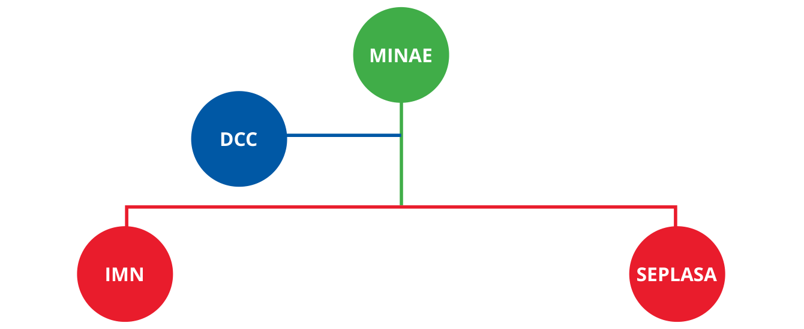
Fuente: elaboración propia.
Ministerio de Ambiente y Energía (MINAE)
Institución rectora en materia ambiental, responsable de formular y ejecutar políticas de conservación, uso sostenible de recursos naturales y fomento de energías renovables. Lidera la política nacional de cambio climático y vela por el cumplimiento de objetivos ambientales en planes nacionales y sectoriales.
Dirección de Cambio Climático (DCC)
Dependencia del MINAE, coordina y dirige la política climática nacional, supervisa su implementación y representa a Costa Rica ante la Convención Marco de Naciones Unidas sobre el Cambio Climático (CMNUCC).
Instituto Meteorológico Nacional (IMN)
Ente científico oficial en meteorología y climatología. Monitorea, recopila datos y realiza estudios sobre variabilidad y cambio climático, calidad del aire. Lidera Comunicaciones e Inventarios Nacionales de Gases de Efecto Invernadero y representa al país ante el Grupo Intergubernamental de Expertos sobre el Cambio Climático (IPCC).
Secretaría de Planificación Sectorial del Sector Ambiente y Energía (SEPLASA)
Órgano técnico en planificación sectorial ambiental, coordinando subsectores como hídrico, energía, mares y calidad ambiental. Asegura que las políticas y programas, incluido el cambio climático, sean coherentes con el Plan Nacional de Desarrollo e Inversión Pública y otros instrumentos de política pública.
Se integra para promover procesos transformadores, con enfoque inclusivo y de largo plazo, como ente consultivo y de seguimiento, coordinado por la Dirección de Cambio Climático, establece participación del Sector Público y Privado, garantizando el análisis participativo y la transparencia en la toma de decisiones.
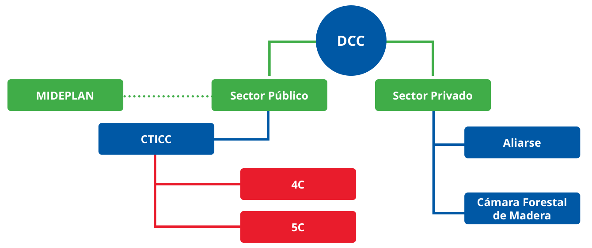
Fuente: elaboración propia.
Lo integran:
El sector privado es representado por:
Ministerio de Planificación Nacional y Política Económica (MIDEPLAN)
En el ámbito climático, incorpora el cambio climático como eje transversal en el Plan Estratégico Nacional, orientando la política pública hacia 2050 con metas escalonadas y alineadas con la CND y los ODS.
La CND, alineada con el lema de la Agenda 2030 “no dejar a nadie atrás” procura la inclusión de todas las poblaciones del país. Destaca los esfuerzos y avances de participación, organización, incidencia y acción conjunta a favor de los derechos humanos en la acción climática en cuatro áreas fundamentales: la transición justa, la igualdad de género, el fortalecimiento de las juventudes y los aportes de los pueblos indígenas.
CND 2020: definió contribuciones específicas en materia de transición justa:
I. Ciclo Nacional de Ambición como proceso iterativo e inclusivo para monitorear y actualizar metas con justicia social y de transición justa
II. Diagnóstico de empleos verdes y azules
III. Esquema de gobernanza de transición justa liderado por MINAE, MDHIS y MTSS con diálogo social tripartito y participación de mujeres y juventudes
IV. Estrategia de Transición Justa, acompañada de una Política Nacional de Empleos Verdes
El Plan Nacional de Desarrollo e Inversión Pública estructura paquetes de políticas que incluyen la aceptación ciudadana y transición justa como condición para el cambio transformacional (MINAE-DCC, 2019). El Primer Informe Bienal de Transparencia (BTR) refuerza esta articulación.
CND 2025- 2035: se enmarca en una visión de transición justa, justicia social y derechos humanos que entiende la descarbonización y la adaptación como vectores de equidad y bienestar. Esta perspectiva se apoya en la CND 2020, reafirma que nadie debe quedarse atrás. La transformación hacia una economía descarbonizada y resiliente debe mejorar el bienestar de las personas y de los ecosistemas, con enfoque de justicia social y climática; sitúa la descarbonización como vía para cerrar brechas sociales y territoriales y maximizar el bienestar colectivo, articulando la política climática con inclusión social, economía circular y bioeconomía.
Costa Rica incorpora la igualdad de género, la interseccionalidad y los derechos humanos en su acción climática; orientación sustentada en la Decisión 3/CP.25 que adopta el Programa de Trabajo de Lima sobre el Género y sus planes de acción, así como en los artículos 7.5, 11 y 12 del Acuerdo de París y en la Recomendación General N.º 37 del Comité CEDAW, sobre la reducción del riesgo de desastres desde una perspectiva de género (CEDAW, 2018), la Recomendación General N.°46 del Comité CEDAW al 8° Informe periódico de Costa Rica que señala “a) Incluya una perspectiva de género en las políticas y planes de acción nacionales sobre el cambio climático y la reducción del riesgo de desastres y vele por la participación significativa de las mujeres en la formulación y la aplicación de esas políticas;” (CEDAW, 2023).
Articula esta agenda mediante el Plan de Acción Nacional sobre Igualdad de Género en la Acción Climática de Costa Rica (PGCC), declarado de interés público. Concretiza el compromiso nacional determinado 2020, estableciendo una gobernanza bipartita MINAE–INAMU para coordinar, monitorear y reportar avances, e involucra a rectorías sectoriales y gobiernos locales. Su vigencia e implementación, alineada con los ciclos quinquenales de la CND, se basa en la actualización de acciones y metas contenidas en cinco ejes estratégicos:
1. Acciones afirmativas para la igualdad y el empoderamiento
2. Fortalecimiento de capacidades e innovación
3. Empleabilidad y fortalecimiento de autonomía económica
4. Gestión del riesgo climático
5. Producción de información sobre la situación de las mujeres en su diversidad en relación con el ambiente
Se concibe como una herramienta para reducir barreras y potenciar oportunidades diferenciadas de las mujeres en su diversidad en la acción climática, bajo los principios de igualdad de género y no discriminación, interseccionalidad, derechos humanos, desarrollo sostenible, justicia climática, transición justa y participación e inclusión (INAMU et al., 2023).
Se integra de manera coherente la experiencia y los compromisos establecidos en la CND 2020, incorporando una perspectiva intersectorial que reconoce el papel fundamental de las juventudes, sustentado en la integración formal de las propuestas técnicas presentadas en el Foro Nacional de Juventudes en la Acción Climática 2024, consolidado como un espacio clave para la participación activa y constructiva de la juventud en la política climática nacional.
La juventud es reconocida como motor esencial en el impulso e implementación de las acciones climáticas, aportando enfoques inclusivos y multisectoriales; basados en derechos que enriquecen el diseño de compromisos y estrategias centradas en la mitigación, adaptación, resiliencia y gobernanza climática. Se reconoce el liderazgo juvenil como componente dinamizador e indispensable de la política climática, facilitando la incorporación de perspectivas intergeneracionales en la planificación y ejecución de medidas, garantizando la continuidad y progresividad de las acciones nacionales, fortaleciendo la legitimidad y eficacia de la CND vigente.
A la luz de la actualización de la CND 2025-2035, surge el diálogo entre los distintos territorios que permitió validar aquellas acciones acordadas en los 22 Planes Ambientales, Forestales y Territoriales (PAFT) vigentes y en ejecución, con el propósito de visibilizar, reforzar y registrar las contribuciones de los pueblos indígenas a la acción climática nacional y global; las cuales nacen del trabajo sostenido de los pueblos indígenas en pro de la conservación de la naturaleza, su cosmovisión y recursos de vida, junto con el equipo de líderes y lideresas territoriales, que facilitaron el diálogo y la validación de las contribuciones bajo consensos, incidencia política y gestiones deliberadas para la consecución de compromisos institucionales de apoyo.
En el marco de la Estrategia Nacional de REDD+, los pueblos indígenas de Costa Rica han desarrollado un amplio proceso de consulta participativa, apegado a los mandatos normativos que garantizan el posicionamiento de las voces, saberes y haceres de la población indígena. La Dirección Nacional de Resolución Alterna de Conflictos del Ministerio de Justicia y Paz, a cargo de la administración y ejecución del Mecanismo General de Consulta Indígena; confirma que “el proceso realizado por la Secretaria REDD+ en conjunto con los territorios indígenas desde 2008, ha cumplido con los estándares del Mecanismo General de Consulta a Pueblos Indígenas, por haberse ejecutado con una amplia participación de los pueblos indígenas de forma libre, previa e informada, mediante procedimientos apropiados y a través de sus instituciones representativas”. Al haberse reflejado el proceso REDD+ en la anterior Contribución Nacionalmente Determinada, NDC 2020, y siendo los PAFT la base del actual diálogo para esta CND 2025-2035, se asegura la alineación entre estos instrumentos de política pública.
La Contribución Nacionalmente Determinada de Costa Rica para el período 2025–2035 se desarrolló mediante un proceso técnico y participativo integral, construido sobre las metas titulares en mitigación y adaptación; el análisis de reportes tales como el Inventario Nacional de Emisiones por fuentes y absorción por sumideros de Gases de Efecto Invernadero 1990–2021, el Primer Informe Bienal de Transparencia, la Cuarta Comunicación Nacional, el Plan Nacional de Descarbonización 2018–2050 y la Política Nacional de Adaptación y su respectivo Plan 2022–2026; guiada por principios de progresividad, integridad ambiental, transparencia y el compromiso de no dejar a nadie atrás, integrando derechos humanos, igualdad de género e interseccionalidad conforme a los lineamientos internacionales y compromisos asumidos por el país.
Se aplicaron de forma íntegra las dos guías pertinentes de la CMA: la Decisión 4/CMA.1, relativa a la información necesaria para claridad, transparencia y comprensión (ICTU) de las contribuciones de mitigación, y la Decisión 9/CMA.1, que orienta la comunicación de adaptación. El documento explicita supuestos, alcances, periodos y arreglos de contabilidad para mitigación conforme a 4/CMA.1, e incorpora, conforme a 9/CMA.1, las necesidades, enfoques, acciones, arreglos de seguimiento y medios de implementación en adaptación, usando la CND como vehículo de comunicación, asegurando consistencia con los lineamientos internacionales vigentes, actualizaciones del marco normativo (7(a)–(b) Contribución a la CMNUCC y al AP) Contribuye al Art. 2 de la CMNUCC y a los Arts. 2.1(a) y 4.1 del Acuerdo de París, alineando la trayectoria con 1,5 °C, pico y descensos rápidos, y coherencia con neutralidad a mitad de siglo.
En adaptación, se actualizó el estado del arte con base en la Cuarta Comunicación Nacional, el BTR y el Plan Nacional de Adaptación 2022–
2026. Las medidas fueron evaluadas por su contribución al Objetivo Global de Adaptación, su potencial para reducir vulnerabilidad y su capacidad para fortalecer la resiliencia a los efectos del cambio climático.
El análisis permitió:
1. Identificar medidas ya dictaminadas o en ejecución susceptibles de escalamiento.
2. Comprobar su viabilidad institucional y regulatoria.
3. Asegurar su alineación territorial.
4. Consolidar condiciones habilitantes como la transición justa, la participación efectiva, el uso de datos desagregados, acciones afirmativas y salvaguardas sociales, en coherencia con los artículos 7.5, 11 y 12 del Acuerdo de París y la Decisión 3/CP.25 sobre género.
Se identificaron brechas críticas y se formuló una propuesta técnica de acciones climáticas de mitigación y adaptación que fueron evaluadas técnica y financieramente mediante el modelo CLEW-CR-3.0 estimando su impacto agregado, garantizando que la nueva CND sea viable, coherente con las políticas públicas y capaz de acelerar la transición hacia una economía baja en carbono y resiliente al cambio climático.
El diseño metodológico combinó talleres de consulta con enfoques sectorial, territorial y temático para asegurar cobertura nacional y representatividad multisectorial, garantizando la inclusión de actores a nivel nacional como regional, asegurando la trazabilidad de los insumos a lo largo de todo el proceso.
Finalmente, el proceso se complementa con sesiones de presentación de avances de la CND y diálogo entre jerarcas, representantes estratégicos del sector público, privado, financiero, multilaterales y mecanismos de gobernanza en cambio climático, con el fin de reafirmar los compromisos y así consolidar la CND 2025- 2035 como una agenda compartida de acción climática orientada a la implementación.
Costa Rica aporta aproximadamente el 0.03%1 de las emisiones globales, porcentaje relativamente bajo en el contexto mundial, sin embargo, es importante atenderlo en pro del bienestar de nuestra población y los compromisos adquiridos en materia de descarbonización; con la reducción de gases de efecto invernadero como eje estratégico de la política climática. Los esfuerzos de mitigación integrados en el desarrollo se mantienen, e inclusive se pretende incrementar el ritmo, la magnitud y la amplitud de la reducción de las emisiones del país.
La mitigación sucede bajo los enfoques de transición justa, igualdad de género y derechos humanos, incorporando salvaguardas sociales y participación efectiva; este compromiso orienta una visión de desarrollo sostenible, competitivo, de bienestar social y resiliencia ambiental, en concordancia con las metas globales de mitigación y adaptación al cambio climático.
Se estiman las emisiones país en 16157,62 Gg de CO2e al año 2021; donde el 50% de estas se generan en el sector energía, de las cuales el 37,6% de este sector, proviene específicamente del sector transporte; ocurriendo por el uso de hidrocarburos fósiles. Se identifican otras fuentes principales de emisión y barreras que limitan la mitigación o reducción, y se generan las correspondientes medidas de mitigación, que operan en sinergia para alcanzar los objetivos propuestos.
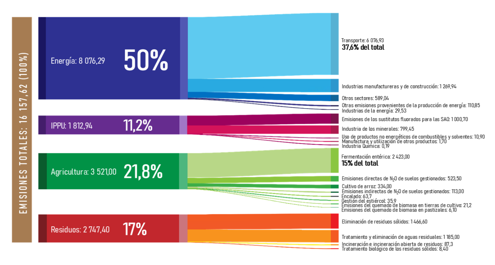
Fuente: Inventario Nacional de Gases de Efecto Invernadero 2021.
Costa Rica mantiene una ruta de generación de crecimiento leve para los próximos 10 años en emisiones proyectadas, bajo su escenario de generación sin mitigación, que proyecta un crecimiento leve, tal y como se muestra en la figura 4. Dado este escenario de crecimiento y contemplando la mitigación modelada en este punto, se presenta el escenario de mitigación propuesto por esta CND:
Trayectoria de emisiones resultante, Gg CO2e
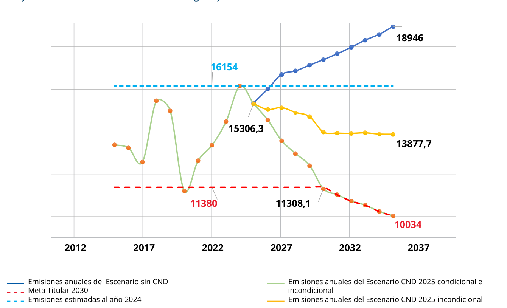
Fuente: elaboración propia.
La línea de tendencia sin intervenciones confirma que, si el país no ejecuta su portafolio de contribuciones, las emisiones continuarán creciendo; al aplicar únicamente las acciones comprometidas con recursos propios, la curva atenúa su crecimiento, pero se queda en una meseta y se desacelera el aumento, sin embargo, no alcanza la meta titular, para la cual es necesario incorporar el paquete completo de contribuciones; de esta forma la trayectoria se quiebra, pasa de ascendente a descendente, faculta el cumplimiento del objetivo nacional y consolida la tendencia de reducciones a futuro.
Es coherente con los objetivos buscados, las transformaciones en movilidad, energía, residuos y construcción —junto con mejoras de eficiencia y sustitución de insumos— marcan la diferencia entre “contener” y “reducir”. No basta con la inercia de proyectos en marcha; se requieren habilitadores normativos, coordinación institucional y una ejecución disciplinada por sectores, con seguimiento transparente para evitar retrocesos.
El elemento clave para pasar de la meseta al descenso sostenido es el financiamiento; donde los créditos de carbono cumplen un rol decisivo desde varias perspectivas:
De cara a la gestión, la prioridad operativa es concentrar esfuerzos en el conjunto de contribuciones con mayor rendimiento marginal, reducir cuellos de botella y garantizar que los flujos financieros (incluidos los provenientes de mercados de carbono) lleguen a tiempo. Comunicar este estado de situación de forma clara y transparente facilita el apoyo político y social. Cumplir la meta es posible, pero solo si se implementa el portafolio completo, se protegen los proyectos críticos y se asegura la integridad de cada tonelada reducida o removida.
Costa Rica se compromete a:
Incluyendo todas las emisiones y sectores cubiertos por el Inventario Nacional de Emisiones por fuentes y absorción por sumideros de Gases de Efecto Invernadero de Costa Rica, 1990-2021.
La meta de emisiones es un ejercicio de traducción metodológica, se alinea el último inventario que añade nuevas categorías de emisiones que anteriormente no se contabilizaban en el país2. La carbono neutralidad es prioridad en materia de cambio climático, y se expresa con las mismas reglas y unidades del INGEI 1990-2021.
La meta titular de la Contribución Nacionalmente Determinada equivale a una reducción de aproximadamente 53% de las emisiones de dióxido de carbono equivalente para 2030 respecto del escenario sin medidas adicionales. Aun considerando únicamente las contribuciones asumidas incondicionalmente, la reducción alcanzaría cerca de 23% frente al mismo escenario. Se trata de un esfuerzo altamente ambicioso que evidencia el compromiso de Costa Rica con el ambiente.
La estructura de las contribuciones planteadas y aplicadas al modelado, permitió establecer la interacción entre los sectores analizados, dado que, aunque una contribución pertenezca a un sector específico, su aplicación no trasciende únicamente a este sector, por ejemplo, el sector de energía interactúa directamente con industria, con agricultura, con residuos; lo que nos permite establecer que esta CND genera co-beneficios en diversas áreas, tales como los escenarios de eficiencia y renovables en industria; construcción con criterios de resiliencia; recarga hídrica y eficiencia en acueductos; menor consumo energético, agricultura resiliente, que además aumenta el carbono orgánico del suelo, soluciones basadas en la naturaleza urbanas para islas de calor y restauración de manglares y marino-costeros que soportan las iniciativas de carbono azul, entre las más relevantes. Todas estas contribuciones, por medio de su interacción y sinergia, potencian el escenario para cumplir con la Política Nacional de Carbono, guiando a Costa Rica en la ruta de las cero emisiones netas para el año 2050.
Se aplicó el proceso de modelación técnica multisectorial y de economía amplia, alineado con la trayectoria global de 1.5 °C, definida en la actualización de la meta titular de 2020, sustentado en el marco analítico CLEW (Cimate, Land, Energy and Water por sus siglas en inglés), con una extensión del enfoque CLEW tradicional, para integrar de forma sistémica todos los sectores emisores y sumideros contemplados por el IPCC, incluyendo las cuatro grandes categorías IPCC: Energía, Agricultura, FOLU, Residuos y Procesos Industriales y Uso de Productos. Dando de esta forma origen al modelo: CLEW-CR-3.0.
Se presenta la clasificación de las acciones climáticas según los sectores del IPCC: Energía, Procesos Industriales y Uso de Productos (PIUP), Agricultura (AG), Uso de la Tierra, Cambio de Uso de la Tierra y Silvicultura (FOLU), Residuos y Océanos. Incorpora principios de transición justa y equidad territorial, promueve la valoración del capital natural como eje del desarrollo sostenible, y facilita la integración de enfoques multisectoriales e inclusivos, en línea con los compromisos internacionales de derechos humanos, género y justicia climática a largo plazo. En el marco del SINAMECC, adopta las nomenclaturas (TJ) para identificar medidas de Transición Justa y Océanos (O). Estas medidas no constituyen categorías fuente del IPCC; funcionan como generación de condiciones habilitantes que apoyan reducciones en los sectores.
La gestión de riesgos climáticos se ha integrado en la planificación eléctrica, reconociendo que eventos climáticos pueden afectar la generación hidroeléctrica. El Plan de Expansión de la Generación Eléctrica 2022-2040 promueve la diversificación con proyectos de geotermia, eólica y solar, asegurando un suministro resiliente y alineado con la meta de emisiones netas cero al 2050.
Objetivo Estratégico del Sector Energía
Se avanza al modelo energético sostenible, confiable, competitivo, resiliente y descarbonizado, que contribuya a una transición energética justa.
El sistema de transporte colectivo costarricense migra a un sistema multimodal e interconectado, implementa sistemas sectorizados, digitalizados e integrados a nivel nacional. La operación del tren eléctrico de pasajeros y la incorporación progresiva de tecnologías cero emisiones garantizan accesibilidad universal, seguridad, inclusión y equidad territorial.
El transporte público implementa esquemas sectorizados a nivel nacional, manejo de servicios especiales tales como el transporte no regulado; desarrolla infraestructura prioritaria para el transporte público e integrada al tren de pasajeros, digitalización, y la integración multimodal con pago electrónico interoperable, garantizando la accesibilidad universal, seguridad, calidad del servicio y equidad territorial.
Incondicional
La generación de estudios y políticas públicas requieren inversión que será cubierta por el estado, para generar los productos que darán las condiciones habilitantes del incremento en el uso del transporte público.
2027
2030
2035
Reducción estimada: 41 Gg CO2e evitadas al año 2030 y 71 Gg CO2e evitadas al año 2035
Costo estimado en millones USD$: 3
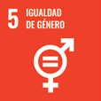
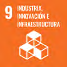
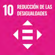
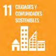
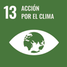
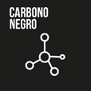
Opera en trayectos de 52 km, en infraestructura ferroviaria mejorada e integrada al sistema de transporte público, mediante terminales y estaciones de accesibilidad universal, seguras e inclusivas, contemplando calidad del servicio y equidad territorial.
Incondicional
El tren eléctrico se considera una acción incondicional, su financiamiento provendría de préstamos soberanos ya gestionados, sujetos a condiciones de entorno financiero variables, junto con otras condiciones habilitantes.
2027
2030
Reducción estimada: 205 Gg CO2e evitadas al año 2030 y 176 Gg CO2e evitadas al año 2035
Costo estimado en millones USD$: 800
La flota de transporte público opera con tecnologías cero emisiones, en concordancia con la política nacional de carbono, prioriza corredores de alta demanda y flotas urbanas. Garantiza la accesibilidad universal, seguridad, calidad del servicio y equidad territorial. Implementa mejoras y normativas para aumentar la eficiencia de los vehículos de combustión interna utilizados en el sistema de transporte público.
Condicional
Es condicional al esquema de financiamiento: 2 %, si la inversión recae en el operador y hasta 10 % si el Estado provee la infraestructura de recarga.
2027
2030
2035
Reducción estimada: 16 Gg CO2e evitadas al año 2030 y 30 Gg CO2e evitadas al año 2035
Costo estimado en millones USD$: 103
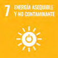
La flota de transporte nacional opera con tecnologías eléctricas, el despliegue progresivo de infraestructura de recarga y el impulso de programas de chatarrización y normativa orientada a retirar progresivamente de circulación los vehículos de combustión interna altamente contaminantes.
Incondicional
La flota de transporte ligero operará con tecnologías de cero y bajas emisiones, basado en instrumentos e incentivos nacionales ya vigentes, incluyendo la expansión interna de la infraestructura de recarga. Existen gestiones en curso para acceder a cooperación técnica y tecnologías limpias que acelerarán la ejecución; sin embargo, dichas gestiones no son condicionantes para el cumplimiento de la meta.
2026
2027
2030
2035
Reducción estimada: 544 Gg CO2e evitadas al año 2030 y 1084 Gg CO2e evitadas al año 2035
Costo estimado en millones USD$: 80
Migra a un modelo de bajas emisiones, mediante tecnologías limpias, mejorando la salud humana, con la incorporación de biocombustibles renovables.
El uso de combustibles mezclados, con menor emisión de contaminantes en el parque automotor mediante la implementación de mezclas de Etanol y Gasolina, asegura la mejora en la salud humana y fomenta la transición justa, el uso de energía renovable y elimina el uso nocivo del MTBE, sin comprometer recursos que compiten con la seguridad alimentaria.
Incondicional
La ampliación de la mezcla no dependerá de financiamiento adicional, es una medida de decisión país, la expansión sostenible está ligada a la producción nacional de etanol y reformas normativas pendientes, por lo que se considera una meta incondicional sujeta a acuerdos internos que habiliten cooperación internacional técnica y financiera.
2027
2030
2035
Reducción estimada: 243 Gg CO2e evitadas al año 2030 y 228 Gg CO2e evitadas al año 2035
Costo estimado en millones USD$: 7
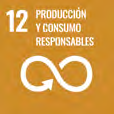
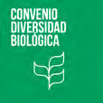
La sustitución progresiva del diésel en el transporte terrestre nacional de carga mediante uso de combustibles alternativos como Gas GLP, electricidad, biometano e hidrógeno verde; promueve encadenamientos productivos que valorizan otras fuentes como residuos orgánicos.
Condicional
La sustitución de la flota a biometano y de pesados eléctricos, requiere inversión adicional, reformas legales clave, desarrollo de infraestructura y acceso a financiamiento externo. Estos productos dependen altamente de cooperación técnica y financiera internacional para su implementación plena.
2027
2030
2035
Reducción estimada: 295 Gg CO2e evitadas al año 2030 y 495 Gg CO2e evitadas al año 2035
Costo estimado en millones USD$: 35
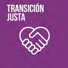
La adopción progresiva de Combustible Sostenible de Aviación elegible para el Esquema de Compensación y Reducción de Carbono para la Aviación Internacional (CORSIA), garantiza integridad ambiental, trazabilidad y calidad; prioriza insumos de baja huella, que no compiten con la seguridad alimentaria, articula infraestructura, cadena logística e integración a SINAMECC, en el marco de una transición justa para el sector aéreo y los actores nacionales.
Condicional
Subsidio/premio por CI bajo, garantías de demanda, cooperación técnica y acceso a mercados de certificados CORSIA elegibles.
2027
2030
2035
Reducción estimada: 17 Gg CO2e evitadas al año 2030 y 45 Gg CO2e evitadas al año 2035
Costo estimado en millones USD$: 30
Se implementan modelos de logística sostenibles, operando trenes para carga. El transporte de carga migra a un modelo de bajas emisiones, sustituyendo la flota de carga ligera y pesada con tecnologías limpias, ofreciendo opciones de combustibles sostenibles a los usuarios. La transición será justa e inclusiva con reconversión laboral.
Se implementan medidas de logística de transporte de carga en los principales puertos, aeropuertos, pasos fronterizos, zonas urbanas y centros logísticos del país; contribuyen a la descarbonización mediante planificación territorial, el modelo de ciudad-puerto, eficiencia operativa y el uso de tecnologías limpias. Se alinea con un modelo de transición de empleabilidad justa para las personas conductoras de vehículos de carga.
Incondicional
La implementación inicial en nodos estratégicos puede realizarse con recursos nacionales, en el marco del Plan Estratégico Nacional 2050, incluyendo avances en pasos fronterizos.
2027
2030
2035
Reducción estimada: 180 Gg CO2e evitadas al año 2030 y 250 Gg CO2e evitadas al año 2035
Costo estimado en millones USD$: 6185
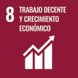
Se implementan medidas de logística de transporte de carga en los principales puertos, aeropuertos, pasos fronterizos, zonas urbanas y centros logísticos del país; contribuyen a la descarbonización mediante planificación territorial, el modelo de ciudad-puerto, eficiencia operativa y el uso de tecnologías limpias. Se alinea con un modelo de transición de empleabilidad justa para las personas conductoras de vehículos de carga.
Condicional
Depende de asegurar financiamiento externo mediante concesión o Asociaciones Público-Privadas. Requiere superar desafíos técnicos, legales y presupuestarios y garantizar la viabilidad comercial. Se requiere asegurar recursos privados.
2026
2027
2030
2032
2035
Reducción estimada: 62 Gg CO2e evitadas al año 2035
Costo estimado en millones USD$: 840
Resiliente e inteligente, que maximiza la participación de fuentes renovables en la generación eléctrica, reduce la generación térmica fósil al mínimo operable e interactúa con el Mercado Eléctrico Regional, logra una capacidad instalada de almacenamiento flexible, mientras garantiza el suministro competitivo de manera planificada entre sectores y regiones.
Condicional
El Plan de Expansión de la Generación opera en su escenario más limpio operable, mantiene una matriz de generación eléctrica nacional que maximiza la participación de fuentes renovables.
La ejecución de infraestructura y modelos de negocio en el Mercado Eléctrico Regional se consideran condicionales puesto que dependerá de la movilización de financiamiento climático que fomente las Asociaciones Público-Privadas para los nuevos negocios e impulsen los procesos dirigidos de formación técnicas.
2027
2030
2035
Reducción estimada: 506 Gg CO2e evitadas al año 2030 y 297 Gg CO2e evitadas al año 2035
Costo estimado en millones USD$: 490
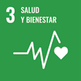
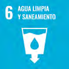
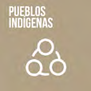
La competitividad, sostenibilidad y resiliencia climática de los sectores industrial y de la construcción se alcanza mediante la adopción progresiva de tecnologías limpias, energéticamente eficientes y bajas en emisiones. Se promueve la transición justa, inclusiva y territorialmente equitativa, que reconoce la diversidad de sectores productivos y contempla las necesidades diferenciadas de poblaciones vulnerables.
El sector transporte implementa medidas de digitalización y cambios tecnológicos que habilitan mejoras en la operación y planificación de transporte público, mejora la gestión de tráfico y eventos viales.
Incondicional
La implementación se basa en marcos normativos y estratégicos nacionales vigentes, cuenta con recursos públicos asignados y gestiones institucionales en curso.
2027
2030
Reducción estimada: 91 Gg CO2e evitadas al año 2030 y 142 Gg CO2e evitadas al año 2035
Costo estimado en millones USD$: 3
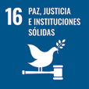
Los sectores industriales, construcción, comercial y de servicios, adoptan medidas concretas de eficiencia energética como parte integral de su ruta hacia la descarbonización y la resiliencia climática. Se impulsa la participación de empresas y organizaciones en el Programa País de Liderazgo Climático, como plataforma nacional de acción climática para el sector privado.
Condicional
La meta se considera condicional, el ecosistema empresarial nacional requiere un impulso adicional para garantizar la sostenibilidad y escalabilidad de esta acción, se necesita apoyo financiero estratégico y la implementación de instrumentos regulatorios complementarios que fomenten un entorno propicio para la adopción de tecnologías limpias y prácticas sostenibles en el sector privado.
2028
2030
2035
Reducción estimada: 8 Gg CO2e evitadas al año 2030 y 18 Gg CO2e evitadas al año 2035
Costo estimado en millones USD$: 130
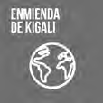
Promueve la reconversión energética del sector industrial mediante tecnologías de valorización de residuos, electrificación e hidrógeno verde, garantiza la transición justa en el uso y acceso a tecnologías limpias.
Descarboniza los procesos industriales de alta demanda térmica y de emisiones puntuales, mediante la sustitución por fuentes de energía bajas en carbono, tales como electricidad renovable, biocombustibles, hidrógeno verde y combustibles alternativos derivados de residuos, en reemplazo del coque, carbón, o la sustitución de calderas de búnker. Operativiza el Artículo 6.4 del Acuerdo de París y el mercado doméstico de carbono.
Condicional
La sustitución de calderas depende del acceso a financiamiento internacional, cooperación técnica especializada o inversión del sector privado; y el incremento de coprocesamiento de residuos a 86000 ton/año, que es dependiente de inversión tecnológica y acuerdos entre/con gobiernos locales.
2027
2030
2035
Reducción estimada: 221 Gg CO2e evitadas al año 2030 y 308 Gg CO2e evitadas al año 2035
Costo estimado en millones USD$: 100
Se desarrollan priorizando los sectores industrial y comercial, como parte de su estrategia nacional de mitigación; incluye la integración de micro redes y sistemas de generación eléctrica renovable para autoconsumo, junto con capacidades de almacenamiento de energía y gestión inteligente de la demanda, prioriza la sustitución de combustibles fósiles con proyectos de interconexión en los circuitos de distribución.
Condicional
La implementación de sistemas para autoconsumo de acuerdo con mecanismos tarifarios aprobados para alcanzar la penetración de la red de participación privada o Asociaciones Público-Privadas o los nuevos esquemas de interacción con el Mercado Eléctrico Regional.
2027
2030
2035
Reducción estimada: 148 Gg CO2e evitadas al año 2030 y 179 Gg CO2e evitadas al año 2035
Costo estimado en millones USD$: 240
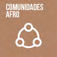
Las nuevas edificaciones de los sectores habitacional, comercial, industrial e institucional incorporan criterios de diseño y construcción apoyados por la inclusión de sistemas y tecnologías de bajas emisiones, reincorporación de materiales residuales, con base en parámetros bioclimáticos para mejorar la eficiencia energética, la resiliencia, la reducción de los impactos ambientales y riesgos climáticos.
Incondicional
Al ser aplicable a partir de la actualización y armonización de los códigos de construcción, la normativa vinculada, los códigos municipales y los planes de formación técnica y profesional.
2028
2030
2035
Reducción estimada: 230 Gg CO2e evitadas año 2030 y 261 Gg CO2e evitadas año 2035
Costo estimado en millones USD$: 25
Los bienes, obras y servicios de infraestructura pública incorporan criterios de evaluación de ciclo de vida y compras públicas estratégicas acordes al objeto a contratar, priorizando bajar huella ambiental, desempeño y resiliencia. Incorpora análisis ambientales y climáticos desde la planificación, y vincula procesos constructivos con lineamientos de sostenibilidad y resiliencia como parte obligatoria de las contrataciones públicas.
Incondicional
Articulación con el Programa de Emergencia para la Reconstrucción Integral y Resiliente de Infraestructura para aspectos de infraestructura y revisión del Proyecto del Banco Mundial para puentes.
2030
2035
Reducción estimada: 27 Gg CO2e evitadas al año 2030 y 28 Gg CO2e evitadas al año 2035
Costo estimado en millones USD$: 5
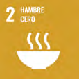
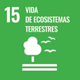
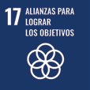
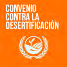
Este sector tiene un alto potencial para catalizar innovación industrial, fortalecer cadenas de valor sostenibles y generar capacidades productivas resilientes, contribuyendo de forma significativa a la meta de emisiones netas cero al 2050, en concordancia con la política nacional de carbono y a los co-beneficios ambientales, económicos y sociales de la transformación productiva.
Objetivo Estratégico
Transforma de forma sostenible y descarbonizada el sector industrial, mediante la adopción de tecnologías limpias, procesos eficientes y soluciones de bajo carbono, con especial énfasis en la reducción de emisiones en las industrias cementeras y en los sistemas de climatización y refrigeración, bajo un enfoque de contemplar el precio social del carbono, facilitando cambios de visión y transición justa.
EJE 7. PROCESOS INDUSTRIALES
Incorpora criterios de resiliencia climática, eficiencia energética y sustitución de sustancias de alto potencial de calentamiento global, mediante la transformación tecnológica del sector industrial, para la reducción de emisiones del uso de productos y el fortalecimiento de la competitividad.
Transición tecnológica del sector de refrigeración y aire acondicionado, sustituye los equipos que utilizan gases hidrofluorocarbonos por opciones de bajo potencial de calentamiento global, en cumplimiento con la Enmienda de Kigali al Protocolo de Montreal. Establece mecanismos regulatorios que facilitan la transición tecnológica y el cumplimiento de los compromisos internacionales asumidos por el país, así como la alternativa de operativización del Artículo 6.4 del Acuerdo de París.
Incondicional
Es parte del compromiso adquirido con la Enmienda de Kigali del Protocolo de Montreal.
2027
2030
2035
Reducción estimada: 115 Gg CO2e evitadas al año 2030 y 277 Gg CO2e evitadas al año 2035
Costo estimado en millones USD$: 38
Las empresas del sector de industrias de materiales de construcción desarrollan hojas de ruta alineadas a objetivos basados en ciencia, conforme a lineamientos sectoriales internacionales que impulsan el entorno habilitante que promueve la transición hacia materiales de baja huella de carbono.
Condicional
Requerirá apoyo técnico y financiero internacional, especialmente para la adopción de estándares, innovación tecnológica y certificación climática, lo cual supera las capacidades presupuestarias nacionales actuales.
2027
2028
2030
2035
Reducción estimada: 53 Gg CO2e evitadas al año 2030 y 108 Gg CO2e evitadas al año 2035
Costo estimado en millones USD$: 60
Se cuenta con la metodología y la estimación del precio social del carbono a partir de las curvas de abatimiento, ajustado y evaluado para su implementación en la evaluación económica-social de los proyectos de inversión pública.
Incondicional
Se cuenta con los recursos para establecer los procesos.
2027
2030
2035
Reducción estimada: 4 Gg CO2e evitadas al año 2030 y 13 Gg CO2e evitadas al año 2035
Costo estimado en millones USD$: 3
El país se compromete a promover sistemas de enfriamiento como medida clave para reducir las emisiones de gases de efecto invernadero y mejorar la eficiencia energética en el sector de servicios, hospitales, centros financieros, entre otros donde sean viables su implementación.
Incondicional
Se cuenta con los recursos para establecer los procesos.
2027
2030
2035
Reducción estimada: 3 Gg CO2e evitadas al año 2030 y 9 Gg CO2e evitadas al año 2035
Costo estimado en millones USD$: 45
Transformar las cadenas agroproductivas hacia modelos bajos en emisiones y resilientes, ampliando el alcance de iniciativas exitosas y fortaleciendo capacidades a nivel territorial, fortalece la resiliencia de los sistemas agroalimentarios y asegura medios de vida sostenibles en el territorio rural, bajo un escenario de reducción sostenible de emisiones.
Objetivo Estratégico
El sector agrícola es sostenible y resiliente, consolida la carbono-neutralidad en el sector agropecuario y de bosques a través de la Iniciativa Agropaisajes Sostenibles, busca un paisaje agropecuario sostenible con cero deforestaciones netas, consolidación de producción carbono neutral y reducción de agroquímicos; enfocada en acuerdos de producción, como la progresiva sustitución del nitrógeno inorgánico en fertilizantes por fuentes orgánicas.
Transforma el sistema agro productivo nacional mediante la integración de prácticas sostenibles y resilientes al cambio climático, garantiza la participación de poblaciones vulnerables, de acceso a la tierra y asistencia técnica. Esta transformación asegura la soberanía alimentaria, la salud del suelo, y la sustitución de insumos de alta huella por alternativas regenerativas.
Costa Rica consolida su liderazgo en café sostenible, resiliente y libre de deforestación, garantiza la participación paritaria, alcanza el 50 % del área cafetalera nacional bajo prácticas de producción sostenibles y bajas en emisiones, utiliza tecnologías como la aspersión eficiente, el uso de bioinsumos y la aplicación de buenas prácticas agrícolas, conserva el carbono almacenado en suelos, prioriza la protección de sumideros; reconociendo al café costarricense como un producto climáticamente inteligente.
Condicional
A la disponibilidad de recursos financieros externos. Aunque se identifican potenciales fuentes de financiamiento tanto reembolsables como no reembolsables, el plan establece que el éxito dependerá de la capacidad de gestionar y movilizar dichos recursos. Esto incluye crédito en condiciones favorables, asistencia técnica, tecnologías validadas y servicios técnicos oportunos.
2027
2030
2035
Reducción estimada: 33 Gg CO2e evitadas al año 2030 y 46 Gg CO2e evitadas al año 2035
Costo estimado en millones USD$: 35
Impulsa un modelo bajo en emisiones, resiliente al cambio climático y rentable, mediante sistemas productivos sostenibles que abarcan el 32 % del área dedicada a este cultivo, incorpora el enfoque climático desde la producción en campo hasta los procesos de industrialización, fortalece la eco-competitividad del cultivo a nivel nacional. Incorpora tecnología acorde con las exigencias del sector, respondiendo al interés manifestado por productores y organizaciones arroceras en avanzar hacia un modelo bajo en emisiones.
Condicional
Principalmente por la disponibilidad de recursos financieros externos. Aunque se identifican potenciales fuentes de financiamiento tanto reembolsables como no reembolsables, el plan establece que el éxito de la NAMA dependerá de la capacidad de gestionar y movilizar dichos recursos. Esto incluye crédito en condiciones favorables, asistencia técnica, tecnologías validadas y servicios técnicos oportunos.
2027
2030
2035
Reducción estimada: 40 Gg CO2e evitadas al año 2030 y 81 Gg CO2e evitadas al año 2035
Costo estimado en millones USD$: 119
Convierte la agro-cadena de valor del cultivo de musáceas en un modelo bajo en emisiones, sostenible y resiliente al cambio climático, al implementar sistemas productivos sostenibles, que promueven tecnologías y prácticas agrícolas bajas en carbono. Garantiza que la producción en las fincas incorporadas esté orientada al enfoque de participación efectiva, igualdad de oportunidades y empleo digno, buscando que la cadena de valor aplique soluciones que mejoren competitividad a nivel local e internacional.
Condicional
Principalmente por la disponibilidad de recursos financieros externos. Aunque se identifican potenciales fuentes de financiamiento tanto reembolsables como no reembolsables, el plan establece que el éxito de la NAMA dependerá de la capacidad de gestionar y movilizar dichos recursos. Esto incluye crédito en condiciones favorables, asistencia técnica, tecnologías validadas y servicios técnicos oportunos.
2027
2030
2035
Reducción estimada: 12 Gg CO2e evitadas al año 2030 y 12 Gg CO2e evitadas al año 2035
Costo estimado en millones USD$: 24
La cadena de valor migra a un modelo bajo en emisiones, sostenible y resiliente al cambio climático; mediante la implementación de sistemas productivos sostenibles. La acción integra de manera articulada medidas de mitigación y adaptación, impulsa tecnologías y prácticas agrícolas que reduzcan las emisiones de gases de efecto invernadero, asociadas al uso de fertilizantes nitrogenados, combustibles fósiles y gestión de residuos agrícolas, impactando positivamente la dinamización de la economía rural mediante la adopción de prácticas de circularidad.
Condicional
A la disponibilidad de recursos financieros externos. Aunque se identifican potenciales fuentes de financiamiento tanto reembolsables como no reembolsables, el plan establece que el éxito de la NAMA dependerá de la capacidad de gestionar y movilizar dichos recursos. Esto incluye crédito en condiciones favorables, asistencia técnica, tecnologías validadas y servicios técnicos oportunos.
2027
2030
2035
Reducción estimada: 2 Gg CO2e evitadas al año 2030 y 4 Gg CO2e evitadas al año 2035
Costo estimado en millones USD$: 85
Reduce la cantidad total de fertilizantes nitrogenados por hectárea, mediante estrategias de buenas prácticas agrícolas, tecnologías de precisión y sustitución por fertilizantes orgánicos de menor huella de carbono. Enfocado en cultivos de menor escala de producción, fortalece los sistemas comunitarios de gestión de residuos agropecuarios, articulados con la Estrategia Nacional de Bioinsumos, permite cerrar ciclos locales de nutrientes, incentiva prácticas agrícolas bajas en carbono y reduce las emisiones asociadas al uso excesivo de nitrógeno inorgánico en la agricultura.
Condicional
Al requerimiento de financiamiento para el desarrollo del paquete tecnológico para la implementación de estrategia de bioinsumos a gran escala y recuperación de suelos, así como la generación de modelos de negocio y fortalecimiento de la cadena de suministro.
2027
2030
2035
Reducción estimada: 43 Gg CO2e evitadas al año 2030 y 60 Gg CO2e evitadas al año 2035
Costo estimado en millones USD$: 8
Escala modelos sostenibles que integran eficiencia productiva, reducción de emisiones y servicios ecosistémicos, para una mejora en la resiliencia del sector y el avance hacia sistemas bajos en carbono.
Se escala la NAMA Ganadería como eje articulador de programas de ganadería sostenible con servicios ecosistémicos. Incrementa la eficiencia y sostenibilidad mediante la adopción de prácticas climáticamente inteligentes, reduce emisiones por fermentación entérica, restaura ecosistemas y promueve paisajes agroforestales resilientes al clima. Incorpora medidas de compensación basadas en sistemas agroforestales y la conectividad ecológica en los territorios ganaderos, con prioridad en actividades cercanas a corredores biológicos.
Condicional
A la disponibilidad de financiamiento climático, fortalecimiento institucional y asistencia técnica para el escalamiento del modelo. Según el documento de la NAMA Ganadería, Costa Rica ha financiado parcialmente la fase piloto con cooperación internacional, pero para el escalamiento nacional se requiere la participación de nuevos mecanismos financieros, públicos y privados. A pesar de que se han identificado fondos internacionales potencialmente aplicables, aún no están asegurados.
2027
2030
2031
Reducción estimada: 214 Gg CO2e evitadas al año 2030 y 202 Gg CO2e evitadas al año 2035
Costo estimado en millones USD$: 75
Consolida la carbono-neutralidad en el sector agropecuario y de bosques a través de la Iniciativa Agro-Paisaje Sostenible, implementa paisajes agropecuarios sostenibles con cero deforestación neta, acuerdos de producción carbono neutral, y reducción de agroquímicos.
Costa Rica promueve la Iniciativa Agro-Paisaje Sostenible, alineada a estándares internacionales, fortalece la gestión sostenible de agroinsumos para reducir emisiones; establece el sistema de trazabilidad climática y acceso a mercados diferenciados.
Condicional
A la disponibilidad de recursos financieros externos. Aunque se identifican potenciales fuentes de financiamiento tanto reembolsables como no reembolsables. Esto incluye crédito en condiciones favorables, asistencia técnica, tecnologías validadas y servicios técnicos oportunos.
2027
2030
2035
Reducción estimada: 2 Gg CO2e evitadas al año 2030 y 4 Gg CO2e evitadas al año 2035
Costo estimado en millones USD$: 20
La Estrategia Nacional REDD+ se utiliza como instrumento central del sector FOLU, en materia de mitigación para reducir emisiones por deforestación y degradación, articulando la venta de reducciones de emisiones y su registro en el SINAMECC. En territorios indígenas, la estrategia incluye el PSA indígena y los Contratos de Reducción de Emisiones Forestales, junto con un protocolo de consulta y arreglos de co-manejo, asegurando salvaguardas y distribución de beneficios con las comunidades; que contribuyen al mantenimiento de sumideros y la captura de carbono.
Se escala el rol del sector como sumidero neto, a través de la restauración de agropaisajes, el ordenamiento terrestre con enfoque climático, la regeneración natural asistida y la gobernanza territorial climáticamente efectiva, eventos alineados con la ENBCC, la Estrategia REDD+ y el Plan Nacional de Descarbonización; priorizan co-beneficios sociales, ambientes y económicos, promueven la resiliencia en zonas rurales y costeras. La actualización de la Política Nacional Forestal (2025-2050) y la Estrategia Nacional de Restauración de Paisajes de Costa Rica (EN5-CR) 2021–2050, brindan el marco para orientar, articular e implementar instrumentos que incrementen el aprovechamiento forestal, vinculado al desarrollo productivo y la gestión sostenible de paisajes.
Objetivo Estratégico
Consolida el modelo territorial productivo y ecosistémico bajo en emisiones, con enfoque en agropaisajes regenerativos y la integración funcional de los ecosistemas; el fortalecimiento de la gestión y el manejo forestal evita la degradación de bosques y demás recursos forestales; aplica la capacidad de absorción de carbono de los ecosistemas en la toma de decisiones sobre restauración, conservación y financiamiento climático.
EJE 11. CONSERVACIÓN, RESTAURACIÓN Y USO SOSTENIBLE DE LOS ECOSISTEMAS FORESTALES
Consolida el modelo de conservación, restauración y uso sostenible de los ecosistemas forestales, mantiene la tasa de deforestación cero en bosque maduro, incrementa la cobertura de ecosistemas estratégicos bajo esquemas de pago por servicios ecosistémicos, y aumenta el uso de madera proveniente de plantaciones sostenibles en la construcción.
Mantiene el balance negativo de emisiones en el sector forestal, asegurando una emisión neta anual mínima, estableciendo labores incrementales mediante la reducción continua de la deforestación en bosques primarios y secundarios, restauración a escala de paisajes forestales, fortalecimiento del manejo forestal sostenible, profundiza la participación efectiva de mujeres, personas jóvenes, pueblos indígenas y pequeños propietarios en esquemas justos de pago por servicios ambientales o ecosistémicos. Amplía el alcance de la Estrategia Nacional REDD+ mediante la incorporación del carbono orgánico del suelo como reservorio, captura de CO2 en agroecosistemas y co-beneficios técnicos para la resiliencia de reservorios de agua o prevención de la desertificación.
Incondicional:
La reforestación de otros estratos priorizados en zonas de amortiguamiento, territorios indígenas y áreas priorizados rojas en el Plan Nacional de Adaptación. Toda la ambición es incondicional, a pesar de estar sujeta a apoyo internacional en financiamiento y técnico.
2027
2030
2035
Reducción estimada: 391 Gg CO2e evitadas al año 2030 y 920 Gg CO2e evitadas al año 2035
Costo estimado en millones USD$: 45
Los paisajes forestal, agrícola y urbano resiliente, enfatizan la gestión y restauración sostenibles de los agropaisajes rurales y los paisajes urbanos, coordinan con actores locales y regionales, capaces de generar productores agropecuarios con potencial exportador con cero deforestaciones netas. Consolida la transformación a paisajes carbono neutral con bajo consumo de agroquímicos. Desarrolla la Estrategia Nacional para la Restauración de Paisajes y sus metas de gestión de Paisaje Rural Sostenible, Agropaisaje y Paisaje Urbano Sostenible.
Incondicional
Para 40 000 ha se requiere financiamiento para la reforestación adicional para contenido a la Política Forestal, el cual se logra en el cumplimiento de la política pública.
2027
2030
2035
Reducción estimada: 1333 Gg CO2e evitadas al año 2030 y 1610 Gg CO2e evitadas al año 2035
Costo estimado en millones USD$: 30
Utiliza madera en construcción civil por medio del código para construcción en madera, operacionaliza e integra instrumentos como la Política Nacional Forestal y la Estrategia de Bioeconomía, articulados con el Plan Estratégico Nacional. Integra nodos territoriales de reforestación con procesos industriales eficientes y sostenibles, que prioricen el uso local de madera estructural certificada en edificaciones y la mejora en la balanza comercial de la madera.
Condicional
Incremento del 40% en productos forestales sostenibles nacionales de valor agregado para la construcción, dependiente de capacitación, transformación productiva, asistencia técnica e incentivos financieros.
2027
2030
2035
Reducción estimada: 75 Gg CO2e evitadas al año 2030 y 181 Gg CO2e evitadas al año 2035
Costo estimado en millones USD$: 100
EJE 12. ORDENAMIENTO TERRITORIAL, INFRAESTRUCTURA SOSTENIBLE Y SERVICIOS ESENCIALES RESILIENTES
El acceso y la continuidad de los servicios esenciales ocurren por la gestión integrada del sector construcción, ordenamiento territorial y la adaptación al cambio climático, bajo criterios que orientan el desarrollo urbano sostenible y bajo en emisiones, potencian la cadena de suministro nacional, incorporan los principios de economía circular, análisis de ciclo de vida y estándares internacionales de alta eficiencia y cero emisiones, en concordancia con la política nacional de carbono.
Consolida el modelo nacional de ciudades sostenibles, resilientes e inclusivas, mediante planes reguladores actualizados en ciudades. Integra criterios de sostenibilidad ambiental, resiliencia climática, gestión del riesgo, equidad social y eficiencia territorial, alineado con las políticas nacionales y la agenda climática.
Condicional
Se requiere apoyo financiero para desarrollo de conocimiento, actualización normativa municipal, transferencia e implementación escalonada y progresiva en las ciudades intermedias, implementación de SbN, mejora de infraestructura urbana.
2028
2030
2035
Reducción estimada: 186 Gg CO2e evitadas al año 2030 y 306 Gg CO2e evitadas al año 2035
Costo estimado en millones USD$: 25
El país impulsa la economía circular y la reducción de emisiones mediante la implementación del Plan Nacional de Compostaje, despliega tecnologías innovadoras de tratamiento biológico y la creación de redes de centros de recuperación inclusivos. En parques tecnológicos ambientales, avanzó la instalación de sistemas de captura, quema de biogás y aprovechamiento energético. El tratamiento de aguas residuales amplió la cobertura de plantas de tratamiento en áreas urbanas densamente pobladas. (Consejo Nacional Ambiental, 2020)
Se escala el tratamiento biológico de residuos orgánicos, expandiendo la valorización de materiales reciclables, mejora la eficiencia en el tratamiento de aguas residuales y consolida la regionalización para la gestión integral de residuos sólidos ordinarios; priorizando la equidad, la inclusión de personas recuperadoras y la articulación con gobiernos locales y el sector privado; acelerando la descarbonización y maximizando beneficios ambientales, sociales y económicos.
Objetivo Estratégico
Desarrolla el modelo sostenible y bajo en emisiones para la gestión de residuos sólidos y líquidos, mediante la implementación del marco normativo vigente, el fortalecimiento de capacidades locales y la promoción de esquemas innovadores de valorización y tratamiento, fomenta el escalamiento de soluciones tecnológicas con enfoque en economía circular y salud pública, logrando la reducción de emisiones en residuos sólidos y líquidos.
EJE 13. TRATAMIENTO DE RESIDUOS SÓLIDOS
Potencia el sistema integral de gestión de residuos sólidos escalando programas de reciclaje y valorización, tecnologías de conversión de residuos en energía y gestión eficiente de la recolección y disposición final.
Incrementa la valorización de residuos sólidos ordinarios, por medio de la gestión regional de recolección, transformación y procesamiento de residuos valorizables, no valorizables, electrónicos y de construcción; implementa estaciones de transferencia y sistemas de aprovechamiento energético, que extienden la vida útil de los parques tecnológicos ambientales, el crecimiento de los modelos de circularidad y la inclusión de mujeres y sectores tradicionalmente excluidos.
Condicional
El 30% de valorización tanto en residuos sólidos ordinarios como especiales a través de la construcción de centros de transferencia, como operaciones complementarias a los parques tecnológicos ambientales, con inversión de banca multilateral de desarrollo, transferencia tecnológica y creación de competencias operativas.
2028
2030
2035
Reducción estimada: 335 Gg CO2e evitadas al año 2030 y 680 Gg CO2e evitadas al año 2035
Costo estimado en millones USD$: 30
EJE 14. TRATAMIENTO BIOLÓGICO DE RESIDUOS SÓLIDOS
Implementa plantas de valorización y programas de compostaje, apoyados por la investigación y transferencia de tecnologías biológicas, para tratar los residuos orgánicos y reducir las emisiones de GEI.
Escala las estrategias que minimizan la disposición de residuos orgánicos en parques tecnológicos ambientales, mediante la consolidación del Plan Nacional de Compostaje; fortalece programas municipales que aseguran la cobertura efectiva del tratamiento de residuos orgánicos, incorporando tecnologías para el tratamiento de residuos orgánicos.
Condicional
La implementación de sistemas centralizados de compostaje y tratamiento de transferencia tecnológica, competencias institucionales e inversiones públicas.
2027
2028
2030
2035
Reducción estimada: 371 Gg CO2e evitadas al año 2030 y 469 Gg CO2e evitadas al año 2035
Costo estimado en millones USD$: 100
EJE15. TRATAMIENTO DE AGUAS RESIDUALES
Amplía la cobertura nacional de recolección y tratamiento de aguas residuales mediante plantas que integren procesos de reutilización de aguas tratadas y valorización de subproductos, bajo un enfoque de economía circular que promueva nuevos modelos de negocio sostenibles.
Se desarrollan y consolidan sistemas integrados de recolección y tratamiento de aguas residuales, priorizando la reutilización de aguas tratadas mediante infraestructura centralizada y soluciones sostenibles de saneamiento que generen beneficios ambientales, sociales y económicos, incorporando poblaciones en condición de vulnerabilidad. Este modelo permite valorizar residuos orgánicos y lodos, transformándolos en biofertilizantes y/o en generación eléctrica, eliminando las descargas directas a cuerpos de agua.
Condicional
Alcanzar el 38% nacional de cobertura de alcantarillado y tratamiento de aguas residuales. Proyectos de construcción y mejora requieren de inversión pública con banca multilateral.
2028
2030
2035
Reducción estimada: 42 Gg CO2e evitadas al año 2030 y 149 Gg CO2e evitadas al año 2035
Costo estimado en millones USD$: 1624
La gestión del espacio marino-costero se articula desde una adecuada caracterización de los sectores usuarios del océano, en cuanto a sus emisiones y lo que informa el desarrollo de un Plan Oceánico Sostenible y el Ordenamiento Espacial Marino, garantizando el establecimiento de medidas de mitigación, y la gestión de los usos del océano bajo un esquema de sostenibilidad y resiliencia. Consolida la gobernanza interinstitucional, prioriza datos abiertos y garantiza trazabilidad de decisiones, alineando mitigación, adaptación y co-beneficios socioeconómicos en territorios costeros.
Determinará la ubicación, delimitación y caracterización de los ecosistemas de carbono azul con potencial de captura carbono, y actualizará el inventario nacional de humedales para asegurar la protección de estos ecosistemas e impulsar su restauración. Impulsa instrumentos que permiten compatibilizar conservación y desarrollo (pesca, turismo, puertos, energía), habilitando metas claras integradas. Se prevé un uso eficiente del financiamiento climático por resultados y cooperación técnica para escalar restauración, con enfoque territorial y participación de comunidades costeras.
El Plan Nacional de Residuos Marinos opera como un instrumento complementario a las contribuciones, especialmente en los sectores de residuos, biodiversidad marina, educación ambiental y gobernanza climática. Su implementación fortalece el cumplimiento de los compromisos internacionales de Costa Rica bajo el Acuerdo de París. Coordina de forma intersectorial la prevención y gestión integral de los residuos marinos, con el fin de mejorar la calidad de los ecosistemas marinos y la salud humana.
Objetivo Estratégico
Consolida la gestión integral y basada en evidencia que ordene el 100% de las aguas jurisdiccionales, y reduzca las cargas de contaminación tierra–mar, con transparencia y monitoreo.
Establece el ordenamiento espacial marino garantizando la construcción de la línea base de mitigación según los aportes de los sectores usuarios del océano y potencia la protección y restauración ecosistemas de carbono azul.
Desarrolla un mapeo sectorial según usos y cuantifica las emisiones por sector usuario del océano, para impulsar el desarrollo del plan oceánico sostenible.
Condicional
Asistencia técnica y financiamiento para cuantificación de las emisiones de sectores vinculados y usuarios del océano, modelación espacial, fortalecimiento de control y monitoreo.
2028
2030
2035
Reducción estimada: 22 Gg CO2e evitadas al año 2030 y 35 Gg CO2e evitadas al año 2035
Costo estimado en millones USD$: 15
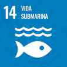
Fortalece la resiliencia climática de los ecosistemas de humedal mediante la restauración de manglares, la conservación efectiva de los humedales y asegura la captura y prevención de emisiones de GEI, a través de esquemas de conservación, restauración y gestión integrada.
Consolida el enfoque integral de gestión de los ecosistemas marinos y costeros de Costa Rica, mediante la conservación, restauración, rehabilitación, monitoreo, valoración de servicios ecosistémicos y la implementación de sistemas de alerta temprana, fortaleciendo la protección de la biodiversidad y el cumplimiento de las metas de conservación. Genera oportunidades de mitigación mediante el estudio y caracterización de otros humedales reservorios de carbono. Fortalece la capacidad del país para integrar los ecosistemas de carbono azul en sus estrategias climáticas.
Condicional
Requiere aporte internacional.
2027
2029
2030
2035
Reducción estimada: 18 Gg CO2e evitadas al año 2030 y 35 Gg CO2e evitadas al año 2035
Costo estimado en millones USD$: 20
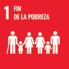
Implementa sistemas de recolección diferenciada que incluyan artes de pesca, trazabilidad y mejoras de saneamiento en cantones costeros, reduciendo significativamente la carga de plásticos y efluentes al mar.
Condicional
Financiamiento para saneamiento, innovación en trazabilidad y valorización de residuos; alianzas público–privadas.
2027
2028
2030
2035
Reducción estimada: 2 Gg CO2e evitadas al año 2030 y 2 Gg CO2e evitadas al año 2035
Costo estimado en millones USD$: 25
Se instituye como condición habilitante y criterio transversal de toda la acción climática, desarrolla el marco nacional con hojas de ruta en sectores priorizados, incorpora metas sociales, de empleo, participación territorial y el principio de “no dejar a nadie atrás”. Integra criterios de accesibilidad y seguridad en proyectos de movilidad, junto con mecanismos de reconversión de capacitación laboral y un sistema de transparencia.
Impulsa instrumentos de financiamiento climático para activar empleo e inversión verde, compras públicas sostenibles, encadenamientos con economía circular y bioeconomía, priorizando MIPYMES y territorios con mayor vulnerabilidad laboral, a través de herramientas como una Taxonomía Verde, que orientará la inversión pública y privada. El escalamiento de interoperabilidad y Fondo para Transición Justa, así como incentivos tributarios y e inversión territorial, se declaran condicionales a asistencia técnica y financiamiento externo.
Objetivo Estratégico
Institucionaliza la Transición Justa como criterio transversal mediante un Marco Nacional vigente y hojas de ruta en sectores clave; sistema de transparencia social-climático operativo con interoperabilidad sectorial; mecanismos de inversión y empleo verde y azul que priorizan actores de menor escala empresarial y territorios socioeconómicamente vulnerabilizados.
EJE 18. TRANSICIÓN JUSTA
Se institucionaliza como eje transversal, mediante el marco nacional y hojas de ruta en sectores clave; con interoperabilidad sectorial; mecanismos de inversión y empleo verde y azul que priorizan actores de menor escala empresarial y territorios socioeconómicamente vulnerabilizados.
Institucionaliza la transición justa como condición habilitante de la acción climática, mediante el marco nacional y hojas de ruta sectoriales, con metas sociales y de empleo; integra criterios de accesibilidad y seguridad en proyectos de movilidad, mecanismos de reconversión y capacitación laboral, sistema de transparencia; con participación territorial y enfoque de “no dejar a nadie atrás”.
Condicional
Asistencia técnica y financiamiento para reconversión laboral, participación territorial y Fondo TJ.
2027
2030
2035
Reducción estimada: 6 Gg CO2e evitadas año 2030 y 13 Gg CO2e evitadas año 2035
Costo estimado en millones USD$: 20
Trazabilidad de políticas y acción climática con módulos operativos, consolida indicadores y reportes públicos anuales; avanza la interoperabilidad con sistemas sectoriales, habilita decisiones basadas en evidencia e incentivos vinculados a desempeño social y climático.
Condicional Soporte técnico/financiero para interoperabilidad y datos abiertos; fortalecimiento de capacidades en entidades participantes.
2027
2030
2035
Reducción estimada: 5 Gg CO2e evitadas al año 2030 y 10 Gg CO2e evitadas al año 2035
Costo estimado en millones USD$: 10
Define empleo verde y garantiza la reconversión productiva mediante instrumentos de financiamiento climático y de desarrollo, prioriza actores de menor escala empresarial y territorios con mayor vulnerabilidad laboral. Integra criterios interseccionales de género y juventud; Taxonomía Verde para orientar la inversión pública y privada; con MRV social y climático articulado a los sistemas de empleo y producción.
Condicional
Financiamiento concesional y garantías; ajustes regulatorios en compras públicas e incentivos; integración de datos para MRV; fortalecimiento de capacidades locales.
2027
2030
2035
Reducción estimada: 8 Gg CO2e evitadas al año 2030 y 16 Gg CO2e evitadas al año 2035
Costo estimado en millones USD$: 50
En cumplimiento con el Artículo 7 del Acuerdo de París, y lo establecido en la Decisión 9/CMA.1 el país ha procedido a actualizar su comunicación de adaptación con base en las prioridades establecidas a partir de las diferentes necesidades para reducir la vulnerabilidad ante los efectos del cambio climático. Presenta los esfuerzos que ha realizado el país en la elaboración de políticas, planes, acciones y medidas para adaptarse a los efectos de la variabilidad y el cambio climático, que ya afectan de manera tangible a los ecosistemas, la economía y las comunidades del país.
Costa Rica presenta esta CND como vehículo de la comunicación de adaptación conforme a la Decisión 9/CMA.1. La comunicación se actualizará antes de cada Balance Global (cada cinco años; próxima actualización en 2028) y se presentará en el registro público de comunicaciones de adaptación de la CMNUCC. El marco de seguimiento y evaluación se integra al SINAMECC e incluye indicadores con línea base 2024, metas a 2030 y 2035, frecuencia anual y responsables sectoriales definidos, abarcando tres dimensiones: capacidades institucionales, reducción de vulnerabilidades y resiliencia. El Ministerio de Ambiente y Energía, por medio de la Dirección de Cambio Climático, coordinará la recolección y validación de datos; las instituciones sectoriales reportarán anualmente al SINAMECC y se publicará una síntesis quinquenal previa a cada Balance Global.
Considerando las circunstancias nacionales, las contribuciones y metas de adaptación para esta Segunda Comunicación de Adaptación se definieron de manera participativa, descentralizada en procesos de consulta a todos los sectores socioeconómicos, ambientales públicos y privados, a la sociedad civil, organizaciones, cooperación internacional y a las comunidades indígenas, tomando como base el estado de situación del país según el primer BTR que incluye el estado de la adaptación, así como el seguimiento a otros instrumentos de política pública en esta materia.
Para lograr la meta titular de adaptación, las contribuciones y metas establecidas están articuladas a políticas, planes, proyectos y acciones nacionales, dentro de los que se pueden mencionar la Política Nacional de Adaptación al Cambio Climático (PNACC), y su Plan de Adaptación, la Política Nacional de Gestión del Riesgo y su Plan, estrategias de adaptación de diferentes sectores, esfuerzos del sector privado y compromisos internacionales.
Las contribuciones y sus metas de adaptación definidas en la AdCOM se alinean mostrando coherencia entre las acciones locales/nacionales de adaptación y los indicadores de la Meta Global definida en la CMNUCC.
La trayectoria de Costa Rica en adaptación climática inició desde la década de 2000, con la oficialización de la Estrategia Nacional de Cambio Climático, compuesta por seis componentes estratégicos, siendo los principales mitigación y adaptación, con ejes transversales en métricas, desarrollo de capacidades, transferencia tecnológica, sensibilización pública, educación y cambio cultural y financiamiento. Este instrumento ha facultado al país a evolucionar con el desarrollo de un marco técnico-político, desarrollando la Política Nacional de Adaptación al Cambio Climático (PNACC 2018-2030); se establecen líneas de acción en turismo, recurso hídrico, biodiversidad y bosques, agropesca, salud, infraestructura y energía, e instruye a todas las entidades públicas a incorporar la adaptación dentro de sus competencias. Su operacionalización se materializa a través del Plan Nacional de Adaptación 2022-2026, que detalla rutas, metas e indicadores para cada sector y nivel territorial, reforzando así la coherencia entre la PNACC y la Contribución Nacionalmente Determinada presentada en 2020.
La PNACC 2018-2030 es el marco rector que orienta las acciones del país en materia de adaptación, buscando un modelo de desarrollo resiliente que evite pérdidas humanas y modere daños materiales, mejore la calidad de vida de las poblaciones vulnerables y aproveche oportunidades para innovar y transformar sectores. La PNACC define seis ejes principales de acción (MINAE-DCC, 2022) :
Ejes Instrumentales
Ejes Sustantivos
El Plan Nacional de Adaptación (NAP) 2022-2026 es el primer plan de acción de la PNACC, detalla acciones e indicadores específicos para alcanzar sus objetivos. Su proceso de elaboración (2020-2022) fue participativo, involucrando a diversos sectores y organizaciones, y se basó en directrices de la CMNUCC, complementadas con metodologías para manejar la incertidumbre e integrar prioridades (MINAE-DCC, 2022) .
La Política Nacional de Gestión del Riesgo 2016-2030 como base de integración entre gestión del riesgo y adaptación, señala la necesidad de articular ambos campos en la planificación sectorial y territorial del desarrollo nacional mediante su respectivo Plan de acción, así como la aplicación del Marco Global de Evaluación de Riesgos, para el fortalecimiento de la gobernanza con enfoque sistémico y mejora del enfoque país para reducir los riesgos.
Otros instrumentos de política pública, como los Planes Nacionales de Desarrollo, el Plan Estratégico Nacional Costa Rica 2050, la Política Nacional de Salud, la Política Nacional de Biodiversidad 2015-2030, la Política Nacional de Producción y Consumo Sostenible 2018-2030 y la Estrategia Nacional de Economía Circular. El país ha mostrado avances sustanciales en el manejo de temas transversales dentro de la acción ante el cambio climático, incluyendo los aspectos de género y participación ciudadana. Actualmente existen instrumentos específicos como el Plan Nacional de Acción sobre Igualdad de Género en la Acción Climática, el Plan de Acción de Género de la Estrategia REDD+ y la Política Nacional de Igualdad de Género e Inclusión Social para el sector Agropecuario y Rural Costarricense (MINAE, 2024- BTR).
La gobernanza climática del país se articula desde el Ministerio de Ambiente y Energía, a través de la Dirección de Cambio Climático, donde el Consejo Técnico Interinstitucional de Cambio Climático coordina la acción interministerial, el Consejo Científico de Cambio Climático provee asesoría técnica, el Consejo Consultivo Ciudadano viabiliza la participación social y el Sistema Nacional de Gestión del Riesgo enlaza la política de riesgo con la PNACC.
La PNACC reconoce que la efectividad de la adaptación se define en el territorio. Desde 2020 se han fortalecido las competencias de gobiernos regionales y municipales con el planteamiento de seis Planes Regionales de Acción en Adaptación, publicados en 2022, teniendo como resultado más de veinte cantones que avanzan en planes locales de adaptación, con integración de medidas climáticas en sus instrumentos de desarrollo.
La Figura 5 muestra la línea de tiempo de los hitos normativos en el marco de la adaptación al cambio climático de Costa Rica; se cuenta con instrumentos normativos que habilitan la construcción de resiliencia, y la operacionalización de la adaptación a escala nacional y subnacional. La convergencia de los diferentes instrumentos han asegurado una coherencia vertical y horizontal necesaria para transitar hacia un modelo de desarrollo resiliente, inclusivo y territorialmente equilibrado, capaz de salvaguardar su extraordinaria biodiversidad y el bienestar de su población frente a los efectos del cambio climático.
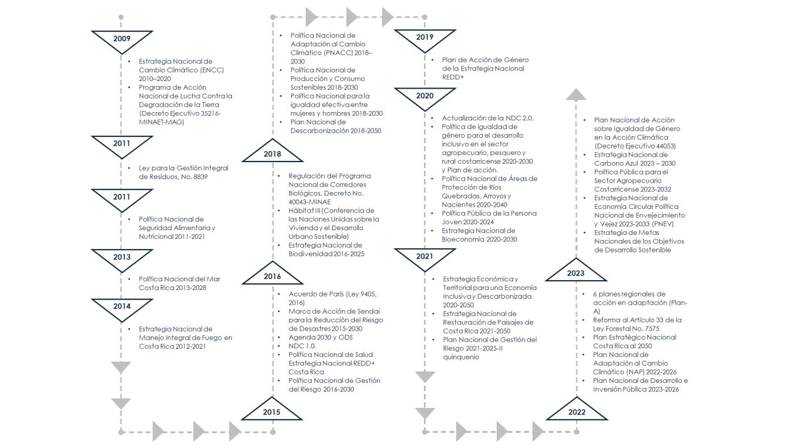
Fuente: Inventario Nacional de Gases de Efecto Invernadero 2021.
Mantiene un enfoque de adaptación con fundamento en la gestión integral del riesgo, donde desde la Ley Nacional de Emergencias y Prevención del Riesgo N.º 8488 se percibe como un proceso preventivo y sostenible que busca revertir vulnerabilidades de la población, los asentamientos y las actividades productivas, incorporando acciones de prevención, atención y recuperación ante los impactos. Bajo ese enfoque, la política climática nacional prioriza crear las condiciones que fortalezcan la capacidad adaptativa de los sistemas sociales, económicos y ambientales y, con ello, reducir su exposición y vulnerabilidad frente a las amenazas exacerbadas por el cambio climático.
Los análisis realizados por el del IMN en 2024, muestran que los eventos hidro-meteorológicos extremos, tanto lluviosos como secos, generan las mayores afectaciones al país, manifestadas en inundaciones y sequías que ocasionan pérdidas socioeconómicas relevantes, especialmente en territorios con alta concentración de población y servicios críticos.
Según Retana (2012) los tres fenómenos océano-atmosféricos que causan mayor impacto por lluvias en el país son los sistemas de bajas presiones, el impacto de ciclones tropicales en el Caribe y los frentes fríos, con consecuencias que van desde inundaciones hasta erosiones edáficas y estructuras por arrastres o fricción de agua. El análisis de datos para el período 1980-2010, refiere que el aumento de los desastres relacionados con lluvias intensas es evidente, correlacionado con el ascenso en los eventos hidrometeorológicos extremos, que evidentemente han respondido a fenómenos de variabilidad climática de gran magnitud, sumados a un aumento de las vulnerabilidades sociales que potencian los escenarios de desastre. La conexión de esta tendencia con el cambio climático no puede ser demostrada actualmente, debido al período del registro de datos utilizados en el estudio, por lo que es necesario la actualización para conocer la tendencia de este tipo de eventos por consecuencia de los efectos del cambio climático.
Los eventos secos que generan sequías se han determinado mediante estudios de distribución temporal de impactos reportados; se demuestra que muchos de estos están ligados al efecto de ENOS en los períodos en los que presentaba una intensidad especialmente fuerte. Contrario a lo anterior, existen años en los que no se detectan impactos por sequías, esto se debe a periodos con condiciones neutras, más húmedas de lo normal o bajo el efecto de la Niña. Los impactos son variados, los sectores más afectados siempre son la agricultura y la ganadería: pérdida de cosechas principalmente en granos básicos (arroz, frijoles y maíz), muerte de ganado asociado a falta de pasturas o falta de agua. A estos impactos se le debe de sumar todos los asociados al consumo de recurso hídrico para las diferentes actividades realizadas por la población, en especial los racionamientos o faltantes del recurso durante varios días (Quesada, Hidalgo y Alfaro, 2020).
El Sexto Informe de IPCC indica que, en la región centroamericana desde mediados del siglo XX, las temperaturas extremadamente cálidas han aumentado y las temperaturas extremadamente frías han disminuido en la región (nivel de confianza media), mientras que la magnitud y la frecuencia de los eventos de precipitación extrema han aumentado, y las sequías tienen señales mixtas (nivel de confianza bajo). Este informe, puntualiza que se han observado aumentos significativos en las tasas de intensificación de ciclones tropicales en la cuenca Atlántica. Según Khouakhi et al., 2017 citado por IPCC (2022), contribuyeron aproximadamente el 10 % de la precipitación anual, durante la temporada de ciclones, la mayor cantidad de eventos de nivel del mar extremo superan un período de retorno de 10 años (Asociación Costa Rica por Siempre, 2022).
Las proyecciones de escenarios de cambio climático regionalizadas actualizados al 2021, utilizando el modelo regional PRECIS, se proyectan para los trayectos RCP 2.6 (bajas emisiones) y RCP 8.5 (altas emisiones), evaluados a corto, mediano y largo plazo. Los escenarios señalan que el país experimentará un calentamiento robusto en todos los escenarios.
Corto Plazo 2010-2039. El escenario RCP8.5, refiere un aumento de 1.1°C a 1.6°C. Este calentamiento será más pronunciado en el Caribe y la Zona Norte, y menos en la vertiente del Pacífico (Alvarado Gamboa, 2021). y un “corredor” de calentamiento que recorre la cordillera de Talamanca, el Valle Central y termina en el bajo Tempisque.
Mediano Plazo 2040-2069. Bajo el mismo escenario, se pronostican aumentos entre 2.4°C y 2.8°C, donde la cordillera de Talamanca, Volcánica Central y Zona Norte serán las más afectadas, mientras que el Pacífico Norte y Central sentirán menos el impacto.
Largo Plazo 2070-2099. Con respecto al escenario RCP2.6, se espera un incremento de 1°C a 2°C en comparación con el clima actual, en este escenario se prevé que las regiones del Caribe y la Zona Norte experimentarán incrementos térmicos ligeramente superiores a la Vertiente del Pacífico.
Las proyecciones nacionales para la precipitación bajo RCP 2.6 muestran un patrón contrastante donde el Caribe Norte y la Zona Norte presentarán mayores precipitaciones, mientras que el Caribe Sur, el Valle Central y sectores altos del Pacífico Central podrían presentar déficit de precipitación. Con RCP 8.5 la primera mitad del siglo apunta a un marcado déficit en zonas como Osa-Golfito, pasando de 6000 - 7000 mm a 4000 - 5000 mm, junto con disminuciones generalizadas en la estación seca, sin embargo, hacia finales de siglo se proyectan recuperaciones o incluso aumentos sobre la Cordillera Central y la vertiente Caribe, al tiempo que persiste la merma en zonas del Pacífico Central y Norte.
En materia de velocidad del viento, se prevé un aumento ligero de la velocidad media en RCP 2.6 casi generalizado hasta 2070 y se mantiene prácticamente estable en las regiones tradicionalmente más ventosas (Pacífico Norte y cordilleras) durante todo el siglo. Bajo RCP 8.5, la velocidad media del viento se debilita en los dos primeros periodos con descensos < 1 m/s, pero hacia 2070-2099 aumentan las velocidades en Caribe Norte y Zona Norte, mientras el resto del país mantiene descensos poco significativos; la canícula (julio-agosto) del Pacífico Norte se vuelve más ventosa con picos de hasta 4.5 m/s (Alvarado Gamboa, 2021) . El Cuadro 1 muestra los escenarios climáticos e impactos esperados.
|
VARIABLE |
RCP 2.6 |
RCP 8.5 |
IMPACTO ESPERADO |
|
TEMPERATURA MEDIA |
+1.1 - 1.3 °C (corto plazo), +1.5 - 1.8 °C (mediano y largo plazo) |
+1.1 - 1.6 °C (corto plazo), +2.4 - 2.8 °C (mediano plazo), +3.8 - 4.8 °C (largo plazo) |
Aumento térmico más marcado en cordilleras y Caribe Norte, bajo RCP 8.5 el calentamiento podría rozar 5 °C en la península de Nicoya hacia fin de siglo |
|
PRECIPITACIÓN TOTAL |
Caribe Norte y Zona Norte: + 200 - 800 mm Valle Central y Caribe Sur: - 100 - 400 mm (persiste a lo largo del siglo) |
Déficits crecientes en el Pacífico: -5% (corto plazo) -10 - 15% (mediano plazo) -15 - 30% (largo plazo) |
Mayor riesgo de sequías en el Pacífico Norte y Central y de lluvias más intensas y variables en Caribe y Zona Norte. |
|
VELOCIDAD MEDIA DEL VIENTO (10 M) |
Tendencia a subir hasta ~2070 (corto-mediano plazo) y ligero descenso después < 1 m/s |
Primeros dos períodos: ligeras reducciones (< 1 m/s), largo plazo: repunte en Caribe Norte y Zona Norte |
Eventuales intensificaciones en Guanacaste, con implicaciones para erosión eólica |
Fuente: adaptado de Alvarado Gamboa (2021).
El Sexto Informe de IPCC indica que para la región centroamericana se proyectan olas de calor masivas y un aumento en la frecuencia de extremos cálidos para finales del siglo XXI (nivel de confianza alto). Se proyecta una disminución general en la magnitud de los extremos de fuertes precipitaciones en la proyección de 1,5 °C), pero un aumento en la frecuencia de las precipitaciones extremas (R50 mm) . A ello hay que agregar los impactos asociados al aumento del nivel del mar en las costas.
La Comisión Nacional de Prevención de Riesgos y Atención de Emergencias es la institución rectora en materia de gestión del riesgo, refiere que dicho ente es la institución que coordina el Sistema de Nacional de Gestión de Riesgo en Costa Rica, el ente oficial de declarar estados de alerta, dentro de sus funciones está el desarrollo de sistemas y mapas de información, como el Sistema Nacional de Información Territorial, que contienen datos sobre amenazas naturales, incluidos los eventos hidrometeorológicos que afectan al país, recauda y sistematiza información sobre las pérdidas ocasionadas por fenómenos naturales, la cual es utilizada para la planificación nacional y la identificación de la vulnerabilidad territorial.
El país cuenta con un módulo de registro denominado Pérdidas Ocasionadas por Fenómenos Naturales desarrollado por CNE y MIDEPLAN. Los registros nacionales se descargan en el Sistema de Inventario de Desastres - Desinventar https://db.desinventar. org/, inventario activo con datos desde 1970 hasta la actualidad.
Orozco Montoya, Alice Brenes-Maykall, Rebeca Sura-Fonseca (2022) a partir de un análisis histórico de desastres para el período 1970-2000, de un total de 19016 fichas de registro de Desinventar, se determinó que el 80% de las mismas estaban relacionadas con desastres por eventos hidrometeorológicos, según el listado los eventos corresponden a inundación, lluvias, deslizamientos causados por condiciones atmosféricas, avenida torrencial, tempestad, vendaval, sequía y marejada. Este estudio revela que los eventos de tipo hidrometeorológico representan la segunda causa de muerte, siendo la primera causa las corrientes de resaca. Según los registros de la base de datos, los eventos lluviosos extremos son los que registran la mayor cantidad de personas fallecidas (221 por deslizamiento, 129 por inundaciones y 81 por avenidas torrenciales).
Maldonado et al. (2018) y Taylor y Alfaro (2005) y Retana (2012) aseveran que estos eventos son los que mayormente afectan al país y a la región Centroamericana, relacionados con la ocurrencia de sistemas de baja presión y el efecto indirecto de huracanes del Caribe, donde los primeros pueden presentarse desde enero hasta diciembre, siendo entre abril y noviembre el período de mayor probabilidad de aparición, y los huracanes tropicales se concentran entre junio y noviembre, siendo entre septiembre y noviembre cuando se da su mayor probabilidad de ocurrencia.
La Figura 6 muestra la distribución del número de eventos hidrometeorológicos por cantón para el periodo de análisis, y el número de personas fallecidas, donde sobresale que la mayor cantidad de cantones (75%) poseen entre 51 y 300 fichas registradas por este tipo de eventos. Los cantones de Desamparados y San José, en el área metropolitana del país, cuentan con más de 750 fichas registradas, así como únicamente 3 cantones de la provincia de Alajuela (Río Cuarto, San Mateo y Orotina), ubicados fuera del área metropolitana, poseen menos de 50 fichas generadas por este tipo de eventos.
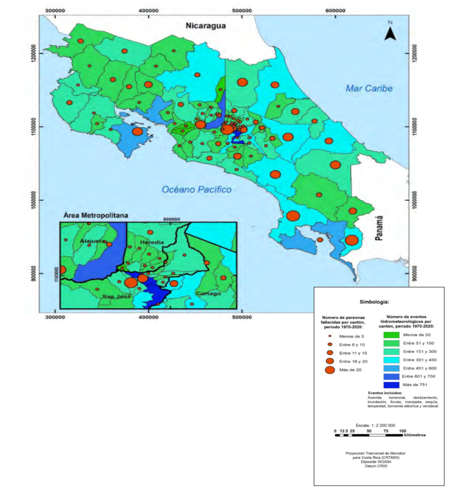
Fuente: Orozco Montoya, Alice Brenes-Maykall, Rebeca Sura-Fonseca (2022)
De la Base de Datos de eventos hidrometeorológicos extremos 1980-2023 del Instituto Meteorológico Nacional:
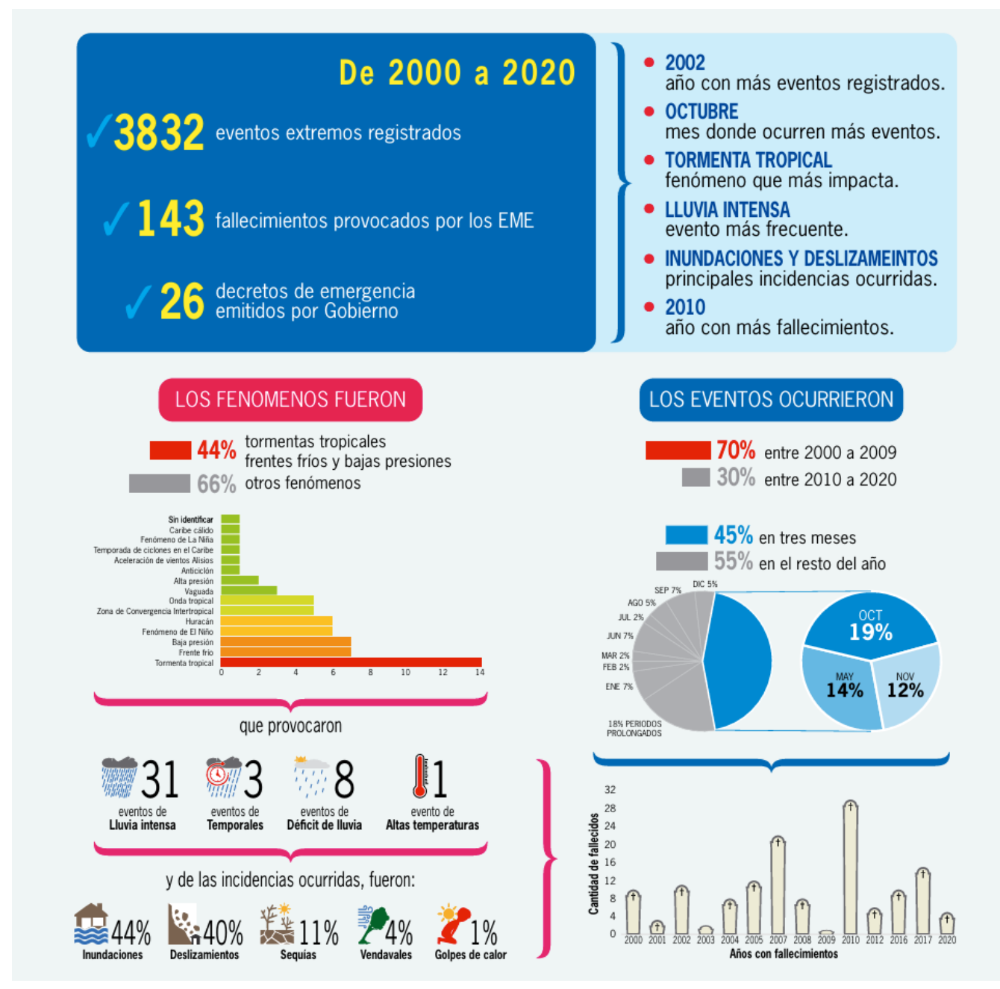
Fuente: Base de datos de eventos hidrometeorológicos extremos 1980-2023, IMN (2023) .
Según datos de la Comisión Nacional de Emergencias, las pérdidas económicas debido a eventos hidrometeorológicos que generaron declaratorias de emergencia, para el período 2000-2024, superan los US$5494 millones, siendo que, de acuerdo con la tendencia, las pérdidas se han disparado entre los dos quinquenios más recientes, en 2011-2015 de unos 407 millones USD$ a 1299 millones USD$ en 2016-2020 y 1491 millones USD$ en 2021-2024, lo que implica un aumento de aproximadamente un 243 %. El salto obedece a los graves impactos provocados en los últimos años por el huracán Otto, el huracán Rafael y en especial, por la tormenta tropical Nate, catalogada como el desastre con mayores pérdidas de los últimos 25 años, dejando pérdidas económicas equivalentes al 1 % del PIB/anual.
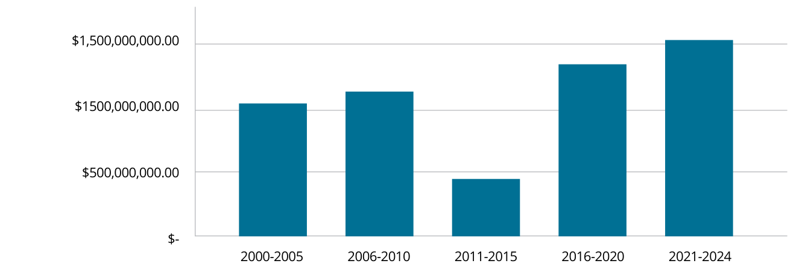
Fuente: CNE
2000-2005 Se generaron 11 declaraciones de emergencia debido a diferentes eventos hidrometeorológicos.
2006-2010 Los eventos hidrometeorológicos que generaron declaratorias de emergencia:
5
2007
5
2008
2
2010
2016 se declararon 2 condiciones de emergencia siendo la más importante la afectación por el huracán Otto, que afectó gran parte del territorio nacional, con el mayor reporte de daños en la zona norte del país.
2017 la Tormenta Tropical Nate causó daños en rutas nacionales, puentes y afectación en el sector agricultura, siendo catalogado como uno de los más intensos y destructivos.
2020 los efectos indirectos de los huracanes Eta e Iota.
2022 los principales eventos se dieron a raíz de los efectos indirectos del huracán Julia, tormenta tropical Bonnie y sistemas de baja presión con 3 declaraciones de emergencia (Orozco Montoya, Brenes-Maykall, Segura Román, 2024).
Según el análisis realizado por el BID-IDEA (2015), Costa Rica quedaría expuesta a serios problemas financieros si se produjeran desastres con períodos de retorno de 50, 100 o 500 años. No se dispone de reservas propias suficientes ni de mecanismos de transferencia de riesgos o de financiamiento accesible para cubrir las pérdidas y reconstruir el capital dañado. El informe advierte que este tipo de emergencias genera un pasivo contingente no explícito que amenaza la sostenibilidad fiscal, pues la cobertura de los costos recaería casi por completo en recursos internos y en nuevo endeudamiento público, con el consecuente costo de oportunidad frente a otras necesidades de inversión y las limitaciones presupuestarias vigentes.
Los registros de daños y pérdidas de la CNE no reflejan los costos no -económicos indirectos que implican la pérdida de vidas humanas, las perturbaciones e interrupciones en la vida diaria de la población (suspensión de clases en escuelas públicas, por ejemplo) causadas por estos eventos. Adicionalmente, causan daños a los ecosistemas, con afectaciones en la vida silvestre y en el hato ganadero, y las pérdidas asociadas a ellos (directas e indirectas) no se miden de forma sistemática, lo que sugiere un subregistro del impacto de eventos hidrometeorológicos en el país (MINAE, 2018). El país tiene una necesidad de avanzar en la aplicación de metodologías para el desarrollo de valoraciones no económicas por eventos que generan desastres, incluidos los daños psicosociales, así como la salud física y mental que profundizan las desigualdades existentes y generan nuevas problemáticas sociales.
Debido a la necesidad del país para atender las obras de infraestructura en riesgo inminente y emergencia, el país ha desarrollado Programa de Emergencia para la Reconstrucción Integral y Resiliente de Infraestructura, para la restauración de los proyectos de infraestructura resiliente y sostenible de 3 Planes Generales de Emergencia debido a los efectos generados por la acumulación de lluvias ocasionados por las ondas tropicales número 11, 12 y la tormenta tropical Bonnie, por la afectación de efectos generados en el territorio por la acumulación de lluvias ocasionados por la influencia directa de la Zona de Convergencia Intertropical sobre Costa Rica y el estado de emergencia nacional por los efectos generados debido a la acumulación de lluvias en el territorio ocasionados por la influencia indirecta del Huracán Julia (BCIE, 2024).
El Informe de Evaluación Global sobre la Reducción del Riesgo de Desastres de la Organización de las Naciones Unidas, estima que las Pérdidas Anuales Esperadas para Costa Rica debido a múltiples amenazas (inundaciones, vientos ciclónicos, mareas de tormenta, tsunamis y terremotos) alcanzarán los 280 millones USD$ anuales (UNDRR, 2015).
Los pronósticos indican que, si Costa Rica continúa acumulando riesgos, las pérdidas económicas y sociales podrían superar la capacidad nacional. Se estima que para el 2030 las pérdidas podrían superar los 7000 millones USD$, para el 2050 podrían alcanzar cerca de 30000 millones USD$. Según la tendencia actual de eventos declarados emergencias nacionales, se espera que para el 2030 las pérdidas se dupliquen y para el 2050 se multipliquen por 8, en comparación con la línea base definida en 2015 (Banco Interamericano de Desarrollo, 2015), tal y como lo indica la Figura 9.
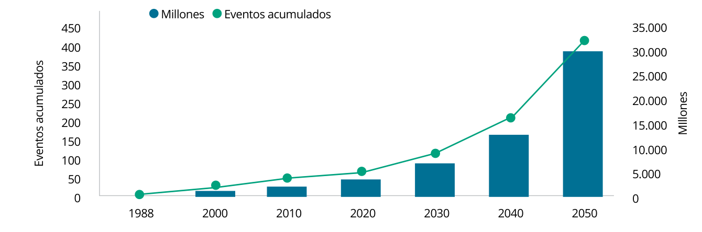
Fuente: CNE, 2015, citado en BTR, 2024.
El Banco Central de Costa Rica, luego de la afectación del paso por Costa Rica del Huracán Otto (2016) y la Tormenta Tropical Nate (2017), realizó un análisis interno para la valoración de riesgos no financieros del impacto potencial del cambio climático sobre los objetivos estratégicos de la entidad; determinaron que el cambio climático afecta, en el corto y mediano plazo, el cumplimiento de los objetivos estratégicos de lograr que la inflación se ubique en torno al rango meta (3% ± 1 p.p.) y promover un sistema financiero estable, eficiente y competitivo.
Los efectos del cambio climático generan una importante disrupción en la economía de contracción de la oferta, ya sea por pérdidas en la producción o por daños o destrucción de la infraestructura vial y vivienda necesaria; esto crearía presiones inflacionarias que podrían afectar las expectativas de los agentes sobre la inflación futura. El incremento en cantidad e intensidad de los eventos hidrometeorológicos extremos puede deteriorar la calidad de la cartera crediticia del sistema financiero, lo cual tendría repercusiones sobre su sostenibilidad.
El informe “Sistema de Indicadores de Gestión del Riesgo en Costa Rica” (BID-IDEA, 2015) midió el desempeño nacional en materia de gestión del riesgo hasta 2015, evaluando la estructura organizativa, capacidades, desarrollo y actuación institucional orientada a disminuir la vulnerabilidad, limitar las pérdidas, prepararse ante crisis y lograr una recuperación ágil. El diagnóstico resaltó fortalezas en la atención de desastres y señaló la necesidad de mejorar la planificación sectorial para la reducción del riesgo. La línea base del 2015, armonizada con el Acuerdo de París y los Objetivos de Desarrollo Sostenible 2030, revela la prioridad otorgada a la prevención, la reducción y la gestión de pérdidas y daños derivados de los impactos del cambio climático.
El flujo descendente de gobernanza en materia de gestión de riesgo de desastres se muestra en la Figura 10, desde la formulación de políticas y planes en la CNE, hasta la ejecución en el territorio mediante comités locales, sectoriales y redes temáticas. Se garantiza que la reducción del riesgo, la preparación-respuesta y la recuperación se desarrollen de forma coherente, participativa y continua.
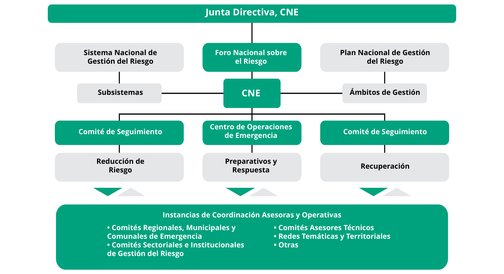
Fuente: CNE, 2015, BTR 2025.
Costa Rica fue el primer país que contó con la aprobación por parte del Banco Mundial de un Préstamo de Políticas de Desarrollo de la Gestión del Riesgo de Desastres con Opción de Desembolso Diferido ante Catástrofes en 2023 por un monto de 160 millones USD$, de este el primero fue aprobado en 2008 por un monto de 95 millones USD$ el cual fue finiquitado 9 años después (2017) después de dos renovaciones, el cual ofreció un importante punto de partida financiero para atender desastres como el terremoto de Cinchona (2009); la tormenta tropical Nicole (2010) y el huracán Otto (2016) (Banco Mundial, 2024).
Fue el primer país en el mundo en armonizar su Política Nacional de Gestión del Riesgo y su plan de implementación, con la agenda que mundialmente se refrendó para reducir los riesgos, principalmente la cifra de muertes por desastres. Pese a estos esfuerzos por garantizar los procesos de gobernanza de la gestión de riesgo y su mitigación, los escenarios de desastres, las cifras de pérdidas económicas, la cuantificación de pérdidas humanas y la interrupción de la continuidad de los servicios -agua potable; educación; vivienda digna; salud y saneamiento; electricidad; movilidad, siguen creciendo.
El Fondo Nacional de Emergencias se crea por la Ley Nacional de Emergencias y Prevención del Riesgo N°8488, para atender y enfrentar las situaciones de emergencia y de prevención y mitigación. Estará conformado por los siguientes recursos:
a. Los aportes, las contribuciones, donaciones y transferencias de personas físicas o jurídicas, nacionales o internacionales, estatales o no gubernamentales.
b. La transferencia de todas las instituciones de la Administración Central, la Administración Pública Descentralizada y las empresas públicas, girarán a la Comisión un tres por ciento (3%) de las ganancias y del superávit presupuestario acumulado, libre y total.
c. Las partidas asignadas en los presupuestos ordinarios y extraordinarios de la República.
El eje 6 de la Política Nacional de Adaptación al Cambio Climático promueve la movilización de recursos financieros, tanto públicos como privados, para ejecutar medidas de adaptación y reducir daños y pérdidas en poblaciones vulnerables. Su lineamiento 6.4 insta a incorporar criterios de adaptación y reducción de la vulnerabilidad en los procesos de reconstrucción y recuperación post-desastre (MINAE-DCC, 2022) .
El Banco Mundial aprobó en 2024 un préstamo por 350 millones USD$ y 20 millones USD$ en financiamiento en condiciones concesionarias del Servicio Mundial de Financiamiento en Condiciones Concesionarias, una alianza multilateral establecida para ayudar con las necesidades financieras de países de ingreso mediano, que reciben gran cantidad de refugiados, en el desarrollo del Proyecto de Recuperación Resiliente frente al Clima y Desarrollo Territorial. Proporciona financiamiento para la reconstrucción de infraestructura gris y verde dañada en los desastres ocurridos en los últimos tiempos, construye y equipa refugios de emergencia multipropósito y establecimientos de respuesta ante desastres. Financia inversiones para mejorar sistemas y servicios de alerta temprana en el ámbito local, en varias cuencas fluviales vulnerables, fortaleciendo la capacidad de gestionar los riesgos de desastres de Costa Rica; se procura beneficiar a dos millones de personas, casi el 40 % de la población del país. La implementación del proyecto está a cargo de la Comisión Nacional de Prevención de Riesgos y Atención de Emergencias. Contiene un apartado de inclusión, ya que beneficia a personas que viven en cantones en los que ya existían necesidades de infraestructura y que reciben una enorme cantidad de personas refugiadas y migrantes (Banco Mundial, 2022).
Costa Rica es parte del programa Global Shield contra los Riesgos Climáticos, cuyo objetivo es reforzar la protección financiera y la capacidad de recuperación de los países y personas vulnerables ante desastres y riesgos de pérdidas o daños relacionados con el cambio climático, mediante más y mejores opciones de financiamiento contra desastres.
Manteniendo la visión de la CND 2020, las prioridades de adaptación al cambio climático en Costa Rica, alineadas a la Política Nacional de Adaptación al Cambio Climático 2018-2030 y al Plan Nacional de Adaptación 2022-2026; Costa Rica está comprometida en gestionar el conocimiento sobre los impactos, con el fortalecimiento de las condiciones de resiliencia social y de los sistemas naturales, económica y ambiental ante los efectos del cambio climático, mediante el desarrollo de capacidades e información para la toma de decisiones, la inclusión de criterios de adaptación en instrumentos de financiamiento y la planificación territorial y de ecosistemas; adaptación de servicios públicos, sistemas productivos e infraestructura, así como la implementación de soluciones basadas en la naturaleza, para la acción climática.
La PNACC se plantea como marco rector que orientará las acciones del país como parte de un conjunto de instrumentos de planificación estratégica. Las instituciones competentes deben establecer sus compromisos, en términos de acciones y metas por alcanzar, que posteriormente deberán formar parte de la planificación institucional, financiera y operativa de cada una de ellas.
El cambio climático implica el deterioro de la calidad del recurso hídrico, una reducción en la disponibilidad de agua debido al aumento de la evaporación a la atmósfera, un aumento en la demanda efecto de las necesidades de las personas tanto para consumo como para producción de energía hidroeléctrica y los sistemas agropecuarios (MINAE-DCC 2021). La PNACC ha situado al agua como un eje determinante, transversal y de gestión prioritaria, de manera tal que las acciones puedan vincularse a la apropiada gestión de las responsabilidades sobre la instalación de capacidades en los sectores públicos y privados; así como a la construcción de condiciones de resiliencia en las comunidades (MINAE, 2018).
El sector agropecuario es el más afectado por el cambio climático, pues depende totalmente de los recursos naturales; el aumento de temperaturas tiene efectos negativos sobre sobre el rendimiento de la producción y puede potenciar plagas y enfermedades. Estos daños afectan la producción de alimentos, y a la vez, ocasiona una disminución en la disponibilidad de productos alimenticios básicos, lo que repercute en la seguridad alimentaria del país. (MINAE-IMN, 2021).
Costa Rica ha demostrado un compromiso continuo y ambicioso en la acción climática. El país comenzó a trabajar en mitigación y adaptación al cambio climático desde los años setenta, con la creación de las Áreas Silvestres Protegidas, con incentivos forestales y de legislaciones de saneamiento ambiental. En el año 2000 se empezó a discutir el tema de cambio climático dentro del sector ambiental, en 2009 se oficializó la Estrategia Nacional de Cambio Climático, con un componente de mitigación y otro de adaptación. La ratificación del país del Acuerdo de París facilitó la articulación de los compromisos nacionales de adaptación de Costa Rica principalmente mediante la Política Nacional de Adaptación al Cambio Climático 2018-2030 y su Plan Nacional de Adaptación 2022-2026, así como la Contribución Nacionalmente Determinada 2020 (Gobierno de Costa Rica, 2021a).
En 2025, como parte integral del Programa País para el Liderazgo Climático se ha fortalecido el Programa País para la Adaptación Climática; que cuenta con dos modalidades de certificación:
Ambas versiones de reconocimiento serán formalizadas por política pública que reglamente su gobernanza, asegurando alineación con el Plan Nacional de Adaptación, los Objetivos de Desarrollo Sostenible y la propia CND. Este programa se consolida como una plataforma robusta para fomentar resiliencia climática en todos los sectores del país, facilitando el involucramiento multiactor y promoviendo el liderazgo nacional frente a los desafíos climáticos actuales y futuros.
Costa Rica se compromete a:
Costa Rica mantiene su meta titular de adaptación al cambio climático, reafirmando el compromiso establecido en la CND 2020 y validado en el Primer Informe Bienal de Transparencia. Esta actualización de las contribuciones para cumplir esta meta se fundamenta en los avances, retos y oportunidades identificados, así como en el análisis de políticas públicas, los compromisos internacionales y las necesidades territoriales y sectoriales, en total coherencia con el NAP.
En materia de adaptación al cambio climático, Costa Rica parte del avance, retos y oportunidades identificados desde la Política Nacional de Adaptación 2018-2030, correspondiente al marco rector mediante el cual todas las dependencias del Sector Público son responsables de la implementación de medidas de adaptación dentro de su ámbito legal respectivo, en particular las instituciones relacionadas con los sectores turismo, recurso hídrico, biodiversidad y bosque, agropecuario y pesca, salud, infraestructura y energía, con el fin de establecer un modelo de desarrollo resiliente, que evite las pérdidas humanas y modere los daños materiales generados por los efectos adversos del cambio climático, contribuya a la calidad de vida de las poblaciones históricamente vulnerabilizadas, aproveche las oportunidades para innovar y transformar los sectores productivos y asegurar la continuidad de los servicios públicos.
Se presenta la lista de contribuciones con sus respectivas metas de adaptación al cambio climático de Costa Rica, para la presente Comunicación de Adaptación, las cuales se han planteado siguiendo la distribución de los ejes de instrumentales y sustantivos establecidos en la PNACC, que orientarán la acción del país en este ámbito, durante el nuevo periodo de compromiso de la CND 2025-2035.
Gestión del conocimiento sobre los efectos del cambio climático, servicios climáticos y desarrollo de capacidades locales e institucionales
Fortalecer los sistemas de información climática (generación, intercambio y el uso oportuno de datos) para el desarrollo de servicios climáticos, investigación científica y el desarrollo tecnológico para la toma de decisiones de adaptación y mitigación al cambio climático.
2030
2035
Costo estimado en millones USD$: 15
Promover la investigación científica, el desarrollo tecnológico y la innovación (I+D+I), como base para la adaptación y mitigación al cambio climático, incluyendo el desarrollo y la consolidación de plataformas de información climática accesibles, confiables y actualizadas.
2028
2030
2035
Costo estimado en millones USD$: 16
Desarrollar y consolidar, en los ámbitos local y sectorial, las capacidades técnicas, tecnológicas, y operativas que impulsen la adaptación al cambio climático y fortalezcan la resiliencia.
2030
2031
Costo estimado en millones USD$: 6,5
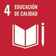
Consolidar un ecosistema nacional de emprendimientos y empleos verdes y azules que, sustentado en un clasificatorio oficial, políticas laborales inclusivas y desarrollo de capacidades, garantice la inserción y oportunidades económicas resilientes en todas las regiones.
2027
2030
Costo estimado en millones USD$: 5
Impulsar un sistema integral de formación y capacitación en cambio climático, que articule las modalidades formal, no formal e informal del sistema educativo y se extienda a comunidades locales e instituciones sectoriales, que además introduzca el concepto de manejo responsable de recursos como los alimentos, garantizando pertinencia cultural y enfoque interseccional de género, con el fin de dotar a la población de los conocimientos, valores y competencias necesarias para una acción climática efectiva y sostenida.
2028
2030
Costo estimado en millones USD$: 18
Potenciar el liderazgo climático de las personas jóvenes mediante la creación de capacidades, espacios de participación vinculante y mecanismos de financiamiento que les permitan diseñar e implementar soluciones conjuntas de mitigación y adaptación en sus territorios, integrando enfoques de género, interseccionalidad y justicia intergeneracional para asegurar la inclusión activa de juventudes rurales, indígenas, afrodescendientes, con discapacidad y LGBTIQ+.
2026
2027
2028
Costo estimado en millones USD$: 2,5
Actualizar, adoptar e implementar la ENACE como hoja de ruta nacional que articule educación, formación, sensibilización pública, participación pública, acceso a la información y cooperación internacional, con enfoque de género e interseccionalidad. La ENACE será el instrumento habilitante que armonice los contenidos ACE de la CND, dinamice la transición justa y consolide la gobernanza climática inclusiva en todos los niveles.
2027
2030
Costo estimado en millones USD$: 6,5
Actualizar e implementar el Plan de Acción Nacional sobre Igualdad de Género en la Acción Climática, como instrumento habilitante que oriente la transversalización del enfoque de género e interseccionalidad en la planificación, ejecución y seguimiento de políticas y acciones climáticas.
2026
2030
2035
Costo estimado en millones USD$: 3
Fomento de las condiciones para la resiliencia de los sistemas humanos y naturales mediante la planificación territorial, marina y costera.
El país potencia la resiliencia territorial mediante el fortalecimiento de las capacidades de los gobiernos locales en gestión integral del riesgo y adaptación, garantizando la participación activa de la ciudadanía y articulando acciones afirmativas basadas en derechos humanos e interseccionalidad.
2028
2030
2032
Costo estimado en millones USD$: 12
Incorporar criterios de adaptación climática y gestión del riesgo en todos los instrumentos de planificación territorial y sectorial, incluyendo AbE, respaldados por normativa y lineamientos técnicos.
2027
2030
Costo estimado en millones USD$: 10
Fortalecer la capacidad institucional para gestionar el riesgo climático, integrando la adaptación al cambio climático en los sistemas nacionales de prevención, respuesta y recuperación ante desastres, con el fin de reducir vulnerabilidades y prevenir pérdidas humanas, sociales y económicas frente a eventos climáticos extremos, garantizando la participación efectiva de actores locales y grupos poblacionales.
2026
2028
2029
Costo estimado en millones USD$: 20
Consolidar un marco normativo, institucional y técnico que combine metodologías de impacto, un portal interoperable, impulsando la recolección periódica de datos por municipalidades y la incorporación obligatoria de criterios de adaptación en proyectos de infraestructura crítica para garantizar recuperaciones resilientes, inclusivas y basadas en evidencia.
2026
2028
2030
Costo estimado en millones USD$: 8
Gestión de la biodiversidad, los ecosistemas, cuencas hidrográficas y espacios marino‑costeros, para asegurar bienestar y adaptación comunitaria
Impulsar la adaptación basada en ecosistemas en áreas urbanas y periurbanas, mediante la gestión de corredores biológicos interurbanos a través de planes estratégicos de gestión, con herramientas de monitoreo específicas por ecosistema e incorporados en los instrumentos de planificación municipal.
2030
Costo estimado en millones USD$: 15
Fortalecer y consolidar estrategias de conservación, restauración, conectividad y manejo forestal sostenible dentro y fuera del patrimonio natural del Estado y las áreas bajo regímenes especiales, integrando monitoreo ambiental comunitario, conectividad biológica, control de incendios y tala ilegal, manejo de vida silvestre, implementación de iniciativas AbE y planes de manejo adaptativo, para fortalecer la resiliencia ecosistémica y social frente al cambio climático.
2028
2030
2035
Costo estimado en millones USD$: 35
Proteger y restaurar los servicios ecosistémicos del recurso hídrico en cuencas prioritarias, con énfasis en la delimitación y manejo activo de las áreas de recarga acuífera, mediante planificación a largo plazo, monitoreo hidrológico y balances hídricos actualizados, fortaleciendo la resiliencia climática y la seguridad hídrica del país.
2028
2030
2032
2035
Costo estimado en millones USD$: 120
Consolidar una gestión integrada y climáticamente resiliente del recurso hídrico frente al cambio climático, fortaleciendo la coordinación interinstitucional, la eficiencia hídrica y el monitoreo continuo.
2030
2035
Costo estimado en millones USD$: 40
Consolidar un enfoque integral de gestión de los ecosistemas marinos, costeros y palustres, mediante la conservación, restauración, monitoreo, valoración de la biodiversidad y la implementación de sistemas de alerta temprana, garantizando la adaptación al cambio climático, contemplando el análisis sobre el aumento del nivel del mar, la protección de la biodiversidad y el cumplimiento de las metas nacionales e internacionales de conservación.
2030
Costo estimado en millones USD$: 50
Servicios públicos adaptados e infraestructura resiliente.
Incorporar y actualizar criterios de adaptación al cambio climático en la planificación y operación de los servicios públicos esenciales, tales como salud, educación, agua, saneamiento, energía y transporte, para asegurar su continuidad operativa en contextos de desastre y reducir su vulnerabilidad.
2026
2030
2031
Costo estimado en millones USD$: 25
Fortalece la resiliencia del sistema de salud frente al cambio climático mediante prevención epidemiológica, atención integral con enfoque inclusivo, y sistemas de monitoreo ambiental y poblacional.
2030
Costo estimado en millones USD$: 30
Fortalecer la planificación, diseño y construcción de vivienda de interés social y asentamientos humanos, promoviendo enfoques de sostenibilidad, inclusión, resiliencia al riesgo y adaptación al cambio climático, mediante el desarrollo de lineamientos, guías, prototipos y modelos que faciliten su implementación en municipios y proyectos financiados por el sistema nacional.
2026
2027
2030
Costo estimado en millones USD$: 60
Incorporar sistemáticamente criterios de resiliencia climática y construcción sostenible en los sectores público y privado, mediante estrategias y normativas que integren análisis de riesgo climático y medidas de adaptación.
2026
2028
2030
2035
Costo estimado en millones USD$: 150
Sistemas productivos adaptados y eco-competitivos
Impulsar un modelo turístico inclusivo, competitivo y climáticamente resiliente que incorpore criterios de adaptación y sostenibilidad, fortaleciendo la resiliencia económica de empresas y comunidades, y promoviendo la participación activa de mujeres, juventudes, pueblos indígenas y actores locales.
2027
2030
Costo estimado en millones USD$: 20
Impulsar la resiliencia agroalimentaria mediante la gestión integral de agropaisajes, la asistencia técnica a personas productoras, el acceso preferencial a semillas adaptativas y el uso de prácticas agroecológicas e hídricas que reduzcan la vulnerabilidad climática.
2030
2032
Costo estimado en millones USD$: 60
Fortalecer la resiliencia económica y la seguridad alimentaria de las comunidades dedicadas a la pesca, maricultura y la acuicultura, mediante la promoción de prácticas adaptadas y contextualizadas de maricultura y pesca.
2026
2030
Costo estimado en millones USD$: 25
Fortalecer la resiliencia climática del sector industrial y tecnológico mediante capacidades técnicas, financieras e innovadoras que integren criterios de adaptación, gestión del riesgo y sostenibilidad, promoviendo entornos productivos competitivos e innovadores.
2030
Costo estimado en millones USD$: 40
Inversión y seguridad financiera para la acción climática
Disponer de un marco fiscal y financiero integrado que asigna, rastrea y protege recursos destinados a la adaptación al cambio climático y gestión del riesgo, mediante la implementación de instrumentos presupuestarios y de inversión pública que potencie las inversiones en los territorios más vulnerables, con evaluación climática progresiva de proyectos de obra pública, y una propuesta nacional de protección financiera frente a impactos climáticos.
2026
2027
2028
2030
Costo estimado en millones USD$: 12
Fortalecer los instrumentos financieros para la conservación y recuperación sostenible de los recursos naturales, promoviendo los enfoques de adaptación basadas en ecosistemas y comunidades.
2028
2030
2035
Costo estimado en millones USD$: 30
Promover la integración sistémica de la adaptación al cambio climático en la inversión pública, los procesos de reconstrucción post-desastre y los instrumentos financieros de gestión de riesgos, mediante un marco normativo y presupuestario que asegure recursos sostenibles, refuerce la resiliencia de infraestructuras y activos críticos, y fomente productos financieros accesibles e inclusivos para sectores productivos y comunidades vulnerables.
2026
2027
2029
2030
Costo estimado en millones USD$: 50
La Taxonomía de Finanzas Sostenibles se convierte en instrumento estratégico, el país cuenta con un marco técnico estandarizado que define actividades económicas consideradas ambientalmente sostenibles. Este sistema de clasificación facilita la identificación de inversiones alineadas con los objetivos nacionales de mitigación y adaptación, otorga transparencia, comparabilidad y credibilidad al mercado, reduciendo el riesgo de greenwashing y mejorando la interoperabilidad con otras taxonomías internacionales. Abarca sectores como energía, construcción, transporte, manufactura, gestión de residuos, agua, tecnologías de información y comunicación; así como los usos del suelo, incluyendo agricultura, ganadería y forestal, con criterios específicos para contribuir de forma sustancial a los objetivos climáticos y ambientales (MINAE et al., 2024) .
La acción climática requiere mecanismos de financiamiento interconectados que combinen la movilización de recursos públicos, privados y multilaterales. Estatalmente, los bonos verdes, sostenibles y azules, junto con los fondos provenientes de mecanismos internacionales como el Fondo Verde del Clima (MINAE-DCC, 2025) y el Fondo Cooperativo para el Carbono de los Bosques (PNUD, 2023) , pueden canalizar recursos hacia proyectos de gran escala. La magnitud de la brecha de inversión hace indispensable la participación del sector financiero privado, a través de fondos de inversión sostenibles, créditos verdes y esquemas de financiamiento estructurado que favorezcan infraestructura resiliente y baja en carbono.
El financiamiento mixto o blended finance, es una vía particularmente prometedora, combina recursos públicos y privados para reducir el riesgo percibido por los inversionistas, y resulta esencial para atraer capital a sectores estratégicos de adaptación y mitigación (MINAE et al., 2024) . Explora las oportunidades de implementación del Art 6 del Acuerdo de París y los diferentes mecanismos de movilización y gestión de fondos, para acelerar el alcance de las metas que conforman las contribuciones anteriormente expuestas, de acuerdo con las disposiciones que determine el ente rector en el país en materia de cambio climático.
El país reconoce la necesidad de apoyo financiero adicional, blando, ante la restricción fiscal y la recurrencia de pérdidas y daños por eventos climáticos. El Informe Bienal de Transparencia menciona que los canales multilaterales aportan la mayor parte de los fondos, seguidos de los bilaterales, con cooperantes bilaterales y multilaterales/regionales. La cooperación internacional ha sido habilitador clave para fortalecer capacidades, articular actores públicos, privados, académicos y de sociedad civil, movilizar financiamiento para diseñar, implementar y dar seguimiento a medidas de adaptación, aprovechando la reputación del país para forjar alianzas y cooperación (Gobierno de Costa Rica, 2024b).
Como parte del compromiso adquirido por el país en el desarrollo de las metas de mitigación y adaptación al cambio climático, se han movilizado recursos para aumentar su ambición, creando incentivos como el sistema de pagos por servicios ambientales. Se han realizado grandes esfuerzos en aumentar su resiliencia a los efectos del clima y su variabilidad, con procesos para la gestión del riesgo, incluyendo el abordaje de las pérdidas y daños que generan los eventos hidrometeorológicos tanto con presupuesto nacional como mediante empréstitos.
Existen áreas críticas donde el país requiere recursos, competencias y tecnologías para cumplir los compromisos adquiridos en el contexto de su CND. Cada necesidad responde a brechas actuales que limitan la capacidad de diseñar, ejecutar y evaluar acciones dentro de su agenda climática. Se presenta el análisis de las brechas y necesidades para la acción climática del país.
|
EJE TEMÁTICO |
BRECHAS PRINCIPALES |
NECESIDADES / RECOMENDACIONES |
|
Fortalecimiento de capacidades locales |
|
|
|
Gestión del conocimiento e información |
|
|
|
Desarrollo y transferencia de tecnología |
|
|
|
Monitoreo, reporte y verificación |
|
|
|
Gobernanza e institucionalidad |
|
|
|
Sociedad y adaptación urbana |
|
|
Ponerle precio a la CND es, en el fondo, ponerle precio al futuro que queremos El costo estimado de las contribuciones supera los doce mil millones de dólares, contempla inversiones clave para cumplir las metas de descarbonización y reducción de emisiones; ofreciendo una visión clara del esfuerzo necesario para avanzar como país.
El monto agregado comprende las acciones de mitigación y adaptación priorizadas para 2025–2035, así como medidas transversales (gobernanza, información, innovación, capacidades) sin las cuales la implementación no es viable. Los costos se expresan en USD constantes y están detallados en cada contribución de mitigación y de adaptación, permitiendo identificar el esfuerzo requerido por medida y orientar la programación de acciones Esta desagregación facilita comparar opciones y priorizar intervenciones según su aporte al cumplimiento de la CND.
El financiamiento de estas contribuciones proviene de diversas fuentes, combinando recursos públicos y privados, cooperación internacional y, cuando corresponda, mecanismos de mercado alineados con el marco internacional vigente La mezcla específica se definirá conforme a la viabilidad técnica, regulatoria y financiera de cada medida El portafolio combina fuentes públicas y privadas, instrumentos de cofinanciamiento y cooperación internacional.
En términos generales:
En el caso de los mercados de carbono, en particular la posibilidad de generar recursos financieros adicionales utilizando los mecanismos de cooperación previstos en el Artículo 6 del Acuerdo de París, debemos tener presente que ya existe un mercado regulado por el Protocolo de Kioto, uno de cuyos componentes más conocidos es el Mecanismo de Desarrollo Limpio, que hoy está en proceso de transición hacia los mecanismos del Artículo 6 del Acuerdo de París Este artículo básicamente crea dos mecanismos de mercado; que pueden generar transacciones de reducciones de emisiones a nivel internacional para apoyar la implementación de las Contribuciones Nacionales:
Ambos mecanismos pueden ser utilizados como fuentes de financiamiento para mejorar la ambición de las CND, no obstante, hay reglas metodológicas y procedimientos especiales que deben seguirse, incluyendo la aplicación del principio de Ajustes Correspondientes, que básicamente implica que, si un país transfiere internacionalmente una determinada cantidad de reducciones de emisiones, debe descontarlas de su balance de emisiones La ventaja es la posibilidad de obtener recursos financieros adicionales que puedan invertirse en áreas prioritarias en las cuales hay dificultades para generar recursos nacionales, facultando además la participación activa del sector privado
Desde la perspectiva de la disponibilidad de recursos para su implementación, las acciones presentadas en esta Contribución y en términos generales, pueden clasificarse en Incondicionales y Condicionales
Incondicionales: cuentan con recursos internos debidamente identificados para su plena implementación; recursos que pueden provenir tanto del sector público mediante diversas modalidades – presupuestos ordinarios o extraordinarios, préstamos nacionales o internacionales específicamente dedicados a las mismas que hayan sido previamente identificados como tales, o bien otras fuentes de cooperación técnica o financiera internacional como cooperación bilateral o multilateral, pagos basados en resultados y cualquier otra forma de cooperación voluntaria que haya sido previamente identificada como tal; o bien del sector privado mediante programas, proyectos o iniciativas específicas emprendidas -voluntariamente o como resultado de la aplicación de regulaciones obligatorias por los diversos actores no-públicos como parte de sus programas regulares de internalización de las metas climáticas nacionales en sus actividades, por ejemplo: carbono-neutralidad, bandera azul, responsabilidad ambiental, entre otras
Condicionales: requieren recursos técnicos o financieros que están fuera de las previsiones presupuestarias regulares de los actores tanto públicos como privados, es decir recursos adicionales para lograr las metas definidas; condicionadas a la obtención de los recursos adicionales identificados El tipo de recursos requerido puede ser de diversa naturaleza, incluyendo acceso a nuevas fuentes de financiamiento o cooperación, tanto pública como privada (préstamos, mercados de carbono voluntarios o regulados, cooperación técnica y transferencia de tecnología, creación de capacidades)
Normalmente los países en desarrollo expresan las metas de sus CND distinguiendo tanto actividades condicionales como incondicionales, lo que da margen para desarrollar acciones de búsqueda de recursos para mejorar su desempeño y ser más ambiciosos, si logran llevar adelante sus acciones condicionales
Información requerida para facilitar la claridad, transparencia y comprensión de la Contribución Determinada a Nivel Nacional, de conformidad con la decisión 4/CMA1, Anexo 1 Se describen el alcance, los supuestos, las metodologías y las métricas utilizadas, así como los plazos y objetivos comprometidos
Declaración ICTU (4/CMA1): Se contemplan gases CO2, CH4, N2O, HFCs, PFCs, SF6, NF3; Sectores Energía, Procesos Industriales y Uso de Productos (PIUP), Agricultura, Uso de la Tierra, Cambio de Uso de la Tierra y Silvicultura (FOLU) y Residuos; Metodologías IPCC 2006 (con Refinamiento 2019 en las categorías pertinentes) usando GWP AR5 en toda la CND; FOLU con tierras gestionadas, perturbaciones naturales y productos de madera cosechados
(HWP); se añadieron ámbitos programáticos adicionales (no alteran la contabilidad por sectores IPCC): Océanos/economía azul (gestión marino–costera, soluciones basadas en la naturaleza) y Transición Justa (equidad, empleo, reconversión laboral y protección social en la descarbonización); Artículo 6 con ajustes correspondientes, OMGE, SOP y trazabilidad/registro para evitar doble conteo; equidad y ambición justificadas (circunstancias nacionales, trayectoria 1,5 °C y presupuesto 2021–2030)
La información aquí contenida busca la interpretación de forma consistente, permite el seguimiento de avances y facilita su comparabilidad a nivel internacional, reforzando así la transparencia y la rendición de cuentas en el marco del Acuerdo de París.
|
1. INFORMACIÓN CUANTIFICABLE SOBRE EL PUNTO DE REFERENCIA (CON INDICACIÓN, SI CORRESPONDE, DE UN AÑO DE BASE) |
|
|
a. Años de referencia, años de base, períodos de referencia u otros puntos de partida. |
Al ser una meta absoluta, la contribución no se formula en relación con un punto de referencia comparativo ni un año base La cuantificación de emisiones para comprender el contexto nacional más actual se basa en el Inventario Nacional de Emisiones por fuentes y absorción por sumideros de Gases de Efecto Invernadero de Costa Rica, 1990-2021 (Gobierno de Costa Rica, 2024a) |
|
b. Información cuantificable sobre los indicadores de referencia, sus valores en los correspondientes años de referencia, años de base, períodos de referencia u otros puntos de partida y, según corresponda, en el año de referencia. |
La meta nacional está compuesta por dos límites absolutos:
No se define un año o periodo de referencia, dado que la meta es absoluta. Sin embargo, respecto a las emisiones netas reportadas en el INGEI 1990-2021, para el año 2015 (13 384,42 Gg CO2e), la implementación conjunta de las contribuciones condicionales e incondicionales representa una reducción aproximada del 15% para 2030 respecto al 2015. |
|
c. En el caso de las estrategias, planes y medidas a que se hace referencia en el artículo 4, párrafo 6, del Acuerdo de París, o de las políticas y medidas que integren las contribuciones determinadas a nivel nacional cuando no sea aplicable el párrafo 1 b) supra, las Partes deberán proporcionar otra información pertinente. |
El diseño de dichas metas integra información metodológica y de emisiones derivada de los volúmenes definidos en las Directrices del IPCC 2006: Volumen 1 (Orientaciones generales), Volumen 2 (Energía), Volumen 3 (PIUP), Volumen 4 (FOLU) y Volumen 5 (Residuos). Por tanto, las políticas y medidas contenidas en la CND reflejan un enfoque integral basado en la contabilidad de emisiones y absorciones antropógenas de todos los sectores relevantes, sin la necesidad de establecer indicadores de referencia adicionales como los descritos en el párrafo 1b. La CND es transversal a la economía y se basa en metas absoluta. |
|
d. Meta relativa al indicador de referencia, expresada numéricamente, por ejemplo, en forma de porcentaje o cuantía de la reducción. |
La implementación conjunta de las contribuciones condicionales e incondicionales propuestas en esta CND representa una reducción aproximada del 15% respecto a las emisiones netas reportadas del año 2015 en el INGEI (1990-2021). |
|
e. Información sobre las fuentes de datos utilizadas para cuantificar los puntos de referencia. |
El INGEI 1990-2021 o, en su defecto, sus actualizaciones, constituye la fuente oficial que reporta las emisiones históricas. La última versión del inventario, el INGEI 1990-2021, se elaboró siguiendo las Directrices del IPCC 2006, incorporando las mejoras del Refinamiento 2019, y utilizando los GWP del Quinto Informe de Evaluación (AR5), en coherencia con el sistema nacional de reporte. Las fuentes de información incluyen datos oficiales nacionales, balances energéticos, censos agropecuarios y otros registros sectoriales. |
|
f. Información sobre las circunstancias en las que la Parte puede actualizar los valores de los indicadores de referencia. |
Aunque la meta es absoluta, su cuantificación podrá revisarse en el futuro si se adoptan nuevos GWP u otros parámetros de caracterización definidos por el IPCC, o si se incorporan nuevas categorías o mejoras metodológicas en el INGEI 1990-2021. Estas actualizaciones garantizarán que la meta se mantenga consistente con la metodología y parámetros oficiales utilizados en el sistema nacional de inventarios. |
|
2. PLAZOS Y/O PERÍODOS DE APLICACIÓN |
|
|
a. Plazo y/o período de aplicación, incluidas las fechas de inicio y finalización, de conformidad con cualquier otra decisión pertinente que adopte la Conferencia de las Partes en calidad de reunión de las Partes en el Acuerdo de París (CP/RA). |
El período de aplicación principal de esta CND es del 1 de enero de 2021 al 31 de diciembre de 2030. Si bien la meta titular permanece centrada en el año 2030, esta actualización incluye contribuciones con acciones extendidas hasta 2035, algunas condicionales y otras incondicionales, en coherencia con la visión climática de largo plazo del país, ha comenzado a implementar acciones para alcanzar esta meta y continuará haciéndolo de cara a 2030 y 2035. |
|
b. Si se trata de una meta de un solo año o de una meta plurianual, según corresponda. |
La contribución del país en mitigación está compuesta de dos submetas con la siguiente estructura:
|
|
3. ALCANCE Y COBERTURA |
|
|
a. Descripción general de la meta. |
La contribución del país en mitigación está compuesta de las siguientes dos submetas:
|
|
b. Sectores, gases, categorías y reservorios cubiertos por la contribución determinada a nivel nacional, que, cuando proceda, se ajusten a las directrices del IPCC. |
Se incluyen todos los sectores y gases inventariados en el INGEI 1990-2021:
|
|
c. De qué manera la Parte ha tenido en cuenta el párrafo 31 c) y d) de la decisión 1/CP21. |
Se utilizaron las Directrices del IPCC 2006, incorporando las mejoras del Refinamiento 2019, y los Potenciales de Calentamiento Global del Quinto Informe de Evaluación, en coherencia con las orientaciones vigentes de la CMNUCC. La meta fue recalibrada para asegurar su consistencia metodológica con el INGEI 2021, sin disminuir el nivel de ambición. Este enfoque garantiza la comparabilidad y la coherencia temporal entre la meta y el sistema nacional de inventarios, y responde a los principios de transparencia, exactitud, completitud, coherencia y comparabilidad establecidos en el marco de transparencia del Acuerdo de París. |
|
d. Beneficios secundarios de mitigación resultantes de las medidas de adaptación y/o los planes de diversificación económica de las Partes, con una descripción de los proyectos, medidas e iniciativas específicos que formen parte de las medidas de adaptación y/o los planes de diversificación económica de las Partes. |
En el contexto de la acción climática integral, las metas orientadas al fortalecimiento de la resiliencia nacional mediante sistemas de información climática no solo cumplen una función esencial en la adaptación, sino que también generan co-beneficios estratégicos para la mitigación. Este enfoque dual permite que las inversiones en infraestructura de datos y monitoreo climático contribuyan simultáneamente a reducir emisiones y mejorar la eficiencia en la toma de decisiones ya que fortalecen las estrategias de mitigación. Una de las metas más relevantes es la implementación, de una política nacional de datos abiertos. Esta política democratiza el acceso a información climática de calidad, habilita el desarrollo de herramientas analíticas que permiten modelar escenarios de emisiones, evaluar el impacto de tecnologías bajas en carbono y diseñar políticas públicas más efectivas en mitigación. La interoperabilidad y estandarización de formatos y metadatos entre instituciones es clave para asegurar que los datos puedan ser utilizados directamente en plataformas de análisis y visualización, como tableros de control de riesgo climático. Complementariamente, la puesta en marcha de un sistema nacional unificado de datos meteorológicos, hidrológicos y marinos representa un avance significativo. Este sistema, al garantizar la calidad y pertinencia de los datos, permite una planificación más precisa en sectores como energía, transporte y agricultura, donde las decisiones basadas en evidencia pueden traducirse en reducciones sustanciales de emisiones. La operación de una red de estaciones meteorológicas automáticas integradas a sistemas de datos abiertos fortalece la vigilancia climática y los sistemas de alerta temprana. Más allá de su valor en adaptación, esta infraestructura apoya la planificación energética, especialmente en el aprovechamiento de fuentes renovables como solar y eólica, cuya eficiencia depende de datos meteorológicos precisos y en tiempo real. La integración de diversas plataformas en el SINAMECC permitirá una mejor toma de decisiones para las estrategias de mitigación. El módulo de intercambio de información y mapeo de proyectos facilita la identificación de iniciativas replicables, la canalización de financiamiento climático y la adopción de tecnologías bajas en carbono. Este componente es clave para acelerar la implementación de soluciones de mitigación en sectores como energía, transporte y agricultura. La oficialización y capacitación de personas en gestión del riesgo y cambio climático en las municipalidades y concejos municipales de distrito permite incorporar criterios de sostenibilidad en la planificación local, para promover soluciones de infraestructura verde, eficiencia energética en edificaciones públicas y movilidad sostenible, contribuyendo directamente a la reducción de emisiones, con visión intergeneracional. La creación del Laboratorio de resiliencia climática para infraestructura y transporte, junto con la unidad técnica en el Laboratorio Nacional de Materiales y Modelos Estructurales, permitirá la integración de criterios de mitigación en el diseño, construcción y mantenimiento de infraestructura, innovación en materiales de baja huella y soluciones para propuestas de movilidad sostenible. La Política Nacional de Empleo para empleos verdes y azules y los programas de acompañamiento empresarial habilitan condiciones para que nuevas actividades económicas se desarrollen con bajo impacto ambiental. Esto incluye la reconversión laboral hacia sectores como energías renovables, agricultura regenerativa, ecoturismo, gestión de residuos y movilidad sostenible. Los programas de educación climática y la transversalización de temas como economía circular, construcción sostenible y consumo responsable en la educación formal y comunitaria prepararán a la población para implementar soluciones que reducen emisiones en sectores como energía, residuos, transporte y edificación. A nivel institucional, la actualización con enfoque de adaptación de los POI, los PGAI y a nivel gremial de los planes sectoriales estratégicos (transporte, energía, agro, residuos, construcción, industria, océanos) facilitará la integración de medidas de mitigación como reconversión tecnológica, eficiencia operativa y reducción de emisiones institucionales y sectoriales. La incorporación obligatoria de criterios de adaptación en infraestructura crítica asegura que nuevas inversiones públicas, así como proyectos de reconstrucción de infraestructura, sean resilientes y bajas en emisiones, alineadas con estándares como el Código de Adaptación del CFIA. Entre las propuestas de gestión de la biodiversidad se destaca la creación y gestión de corredores biológicos urbanos que mejoran la conectividad ecológica y protegen refugios climáticos, lo que contribuye a la captura de carbono, la regulación térmica urbana y la reducción de emisiones asociadas al uso intensivo de energía en ciudades. Adicionalmente, la protección del patrimonio del Estado, a través de las iniciativas de conservación, restauración y manejo forestal sostenible fortalecen los sumideros naturales de carbono, especialmente en bosques primarios y secundarios, reduciendo emisiones por deforestación, degradación del suelo e incendios forestales. De forma similar, las contribuciones propuestas para la restauración de manglares, corales y humedales como ecosistemas amortiguadores también impactan en la remoción de carbono pues estos ecosistemas son altamente eficientes en la captura de carbono azul, contribuyendo directamente a la reducción de GEI. Las contribuciones referentes a la infraestructura incluyen iniciativas para la aplicación de evaluaciones de vulnerabilidad y riesgo para asegurar la continuidad de los servicios esenciales. Estas evaluaciones permiten identificar también oportunidades para la incorporación de tecnologías y sistemas más eficientes y bajas en carbono, principalmente en servicios relacionados a transporte, agua, energía y residuos. Los protocolos para la continuidad de negocio, no solo en sector público sino también en sector privado, potencian la transformación tecnológica más limpia y sostenible. Por su parte, la contribución orientada a promover la construcción sostenible y climáticamente inteligente facilita también la transición hacia estrategias de diseño y construcción que aplican criterios de eficiencia energética y de menor impacto ambiental, que favorecen el uso de materiales sostenibles de baja huella incorporada (como la madera) o productos que contribuyen a la circularidad de materiales, así como la regeneración urbana con SbN, favoreciendo los resultados de mitigación. De la contribución de agropaisajes y sistemas de producción sostenibles se destaca el co-beneficio a la mitigación al transformar los modelos agro-productivos con prácticas regenerativas y bajas en carbono. Estas prácticas reducen la utilización de insumos sintéticos y también favorecen la recarbonización del suelo. Adicionalmente, al introducir la vinculación con encadenamientos forestales potencian las remociones en el sector productivo a la vez que generan mayor resiliencia a los cambios climáticos. La introducción del modelo de resiliencia en la industria promueve la adopción de sistemas de innovación, eficiencia y economía circular, lo cual se acompaña de tecnologías limpias con menor consumo energético y menores emisiones de GEI. A su vez, al incentivar las prácticas de circularidad se reducen las emisiones por extracción y transporte de materias primas, así como aquellas asociadas al fin de vida de los materiales. La contribución propuesta para la integración de la variable presupuestaria en la planificación y ejecución del gasto permite también incorporar medidas que contribuyen a la mitigación como infraestructura sostenible, energéticamente eficiente y que promuevan la restauración ecológica. Así también, el desarrollo de instrumentos financieros con clasificadores del gasto, facilitan la canalización de recursos hacia inversiones en energías limpias, transporte bajo en carbono y protección o restauración de sumideros naturales. Finalmente, las contribuciones propuestas para fortalecer financieramente las estrategias de conservación, como los Programas de Pagos por Servicios Ambientales (PSA) y el mercado de carbono, permitirán incentivar la conservación de bosques, así como la restauración de ecosistemas que, con participación de mujeres y comunidades indígenas, tendrán impacto en la mitigación por la protección e incremento de sumideros naturales. |
|
4. PROCESOS DE PLANIFICACIÓN |
|
|
a. Información sobre los procesos de planificación que la Parte haya emprendido para preparar su contribución determinada a nivel nacional y, si se dispone de ella, sobre los planes de aplicación de la Parte, incluidos, según proceda: |
|
|
i. Los arreglos institucionales nacionales, la participación del público y el compromiso con las comunidades locales y los pueblos indígenas, con una perspectiva de género. |
La implementación de la CND se apoya en estructuras institucionales a distintos niveles (nacional, sectorial, territorial y local), articuladas en el Sistema Nacional de Cambio Climático y bajo la rectoría del MINAE a través de la Dirección de Cambio Climático. Este arreglo integra la función científica del IMN, la planificación sectorial de SEPLASA y la transversalización de MIDEPLAN, y se complementa con espacios formales de diálogo técnico-social como el CTICC, el Consejo Científico (4C), el Consejo Consultivo Ciudadano (5C) y la Alianza para la Acción Climática para el vínculo con el sector privado. La coordinación se alinea con las decisiones 4/CMA.1 y 9/CMA.1, garantizando trazabilidad de insumos, MRV en SINAMECC y actualización quinquenal vinculada al Balance Mundial. La participación pública incorpora salvaguardas, enfoques de género e interseccionalidad, juventudes y el Mecanismo General de Consulta a Pueblos Indígenas; en particular, los 22 PAFT vigentes y la experiencia de REDD+ han consolidado procesos libres, previos e informados en los territorios. Con ello, las políticas y medidas se adaptan a competencias y realidades subnacionales, fortaleciendo capacidades y gobernanza multisectorial, e integrando derechos humanos y transición justa en coherencia con las circunstancias nacionales. |
|
ii. Los asuntos contextuales, incluidos, entre otros, según proceda: |
|
|
(a). Las circunstancias nacionales, como la geografía, el clima, la economía, el desarrollo sostenible y la erradicación de la pobreza. |
Costa Rica es un país altamente vulnerable a los impactos del cambio climático debido a su ubicación geográfica y a su diversidad de ecosistemas, que incluyen zonas costeras, montañosas y boscosas. El territorio está expuesto a fenómenos hidrometeorológicos extremos como huracanes, tormentas, inundaciones y sequías, cuyo impacto se intensifica por la variabilidad climática. La economía nacional presenta una alta dependencia de sectores sensibles al clima, como la agricultura, y el turismo, lo que implica riesgos significativos para la seguridad alimentaria, el empleo y el ingreso nacional. El desarrollo económico se articula con la preservación del capital natural, que sustenta servicios ecosistémicos clave como la provisión de agua, la regulación climática y la protección contra desastres. La CND se formula en coherencia con los objetivos nacionales de desarrollo sostenible, de erradicación de la pobreza y de reducción de las desigualdades, garantizando que la acción climática contribuya tanto a la competitividad económica como a la resiliencia de las comunidades. |
|
(b). Las mejores prácticas y experiencias relacionadas con la preparación de la contribución determinada a nivel nacional. |
La formulación de esta CND se apoyó en la experiencia adquirida en la implementación de la CND 2020 que introdujo un marco de metas multisectoriales y metodologías de seguimiento que ahora se han fortalecido, las NAMAs sectoriales, y otros insumos de política climática. El proceso incorporó herramientas de análisis territorial y prospectiva climática, y se nutrió de un proceso participativo amplio con actores públicos, privados, comunitarios y de la academia, asegurando la integración de conocimiento técnico y local. Se utilizaron datos actualizados del INGEI 1990-2021, insumos del Informe Bienal de Transparencia 2024, y la evidencia científica más reciente del IPCC. Costa Rica reafirma su intención de continuar participando en iniciativas REDD+ en el marco de la Convención y del Acuerdo de París. El país ha desarrollado y actualizado su nivel de referencia de emisiones forestales (FREL/FRL) a nivel nacional, incluyendo actividades como reducción de emisiones por deforestación y degradación, así como aumento de existencias de carbono. Cuenta con una Estrategia Nacional REDD+ (2017–2025) como política marco para el sector forestal, y participa activamente en discusiones técnicas internacionales sobre permanencia y reversión en programas jurisdiccionales REDD+, tal como se evidencia en sus contribuciones recientes al Mecanismo del Artículo 6.4. Estas acciones consolidan su compromiso con una acción climática basada en la naturaleza. |
|
(c). Otras aspiraciones y prioridades contextuales reconocidas en el momento de la adhesión al Acuerdo de París. |
La CND reafirma el compromiso de Costa Rica con la meta de largo plazo de alcanzar la carbono-neutralidad, alineándose con el Plan de Descarbonización y su meta de ser carbono neutral al 2050. Se prioriza la protección y uso sostenible de la biodiversidad, el fortalecimiento de la resiliencia de los ecosistemas y la transición hacia modelos productivos bajos en emisiones, justos e inclusivos. |
|
b. Información específica aplicable a las Partes, incluidas las organizaciones regionales de integración económica y sus Estados miembros, que hayan convenido en actuar conjuntamente en virtud del artículo 4, párrafo 2, del Acuerdo de París, incluidas las Partes que hayan acordado actuar conjuntamente y las condiciones del acuerdo, de conformidad con el artículo 4, párrafos 16 a 18, del Acuerdo de París. |
Costa Rica presenta su CND de forma individual y no participa en acuerdos conjuntos bajo el artículo 4.2, por lo que esta disposición no aplica en el presente caso. |
|
c. En qué medida la Parte ha basado la preparación de su contribución determinada a nivel nacional en los resultados del balance mundial, de conformidad con el artículo 4, párrafo 9, del Acuerdo de París. |
La preparación de esta CND ha incorporado los resultados del primer Balance Mundial (GST), en cumplimiento del Artículo 4.9 del Acuerdo de París. Las metas y acciones cuentan con una visión alineada con las trayectorias globales compatibles con 1,5 °C, es decir, coherentes con el presupuesto global de carbono y con la necesidad de alcanzar cero emisiones netas hacia 2050, priorizando medidas de alto impacto, eficiencia en costos, transición justa y protección de ecosistemas. En algunos casos, la ambición se ha ajustado para responder a las brechas identificadas, lo que refuerza la importancia de actualizar y alinear los planes de acción del Plan Nacional de Descarbonización, incorporando los nuevos Potenciales de Calentamiento Global y las categorías adicionales incluidas en el INGEI 1990-2021, para mantener de forma continua la visión de largo plazo hacia la neutralidad de emisiones. |
|
d. Cada una de las partes con una contribución determinada a nivel nacional en virtud del artículo 4 del Acuerdo de París que consista en medidas de adaptación y/o planes de diversificación económica que den lugar a beneficios secundarios de mitigación, conforme a lo dispuesto en el artículo 4, párrafo 7, del Acuerdo de París deberá presentar información sobre: |
|
|
i. Cómo se han tenido en cuenta las consecuencias económicas y sociales de las medidas de respuesta al elaborar la contribución determinada a nivel nacional |
Se consideraron en todos los ejes sectoriales. De forma positiva, en energía, se prevé activación económica por mayor generación renovable colocada en el mercado regional, sustituyendo un portador de energía como los hidrocarburos que no son producidos en Costa Rica, con mecanismos seguros de acceso y resiliencia del sistema. En el caso de transporte, el tren eléctrico y demás proyectos buscan reducir la congestión y mejorar la movilidad en las zonas urbanas, disminuir el uso de combustibles fósiles y la contaminación, mejorando la salud y generando empleos verdes. Para el caso de la industria se espera el impulso de nuevas cadenas de valor, la atracción de inversión y el fomento de la innovación tecnológica con la generación de empleos especializados. Así como la resiliencia ante potenciales impuestos al carbono o barreras de entrada a mercados de exportación e incremento de su competitividad. En agricultura se espera que se incremente la productividad y se fortalezca la economía local gracias a las prácticas sostenibles, atendiendo la recuperación de suelos y preparando para cambios en políticas a mediano plazo. En FOLU, la conservación y restauración de ecosistemas contribuirá a la captura de carbono, fortalecerá la provisión de servicios ecosistémicos y apoyará medios de vida en comunidades rurales incluyendo opciones de captura de carbono fijo por medio de productos de madera. En residuos, se promoverá un cambio cultural en la gestión y valorización, con impactos como la creación de empleos en reciclaje y economía circular, educación de costos asociados a la disposición final y mejora de la salud pública por menor contaminación. En contraste, se reconocen posibles impactos negativos o retos asociados. El ajuste de tarifas del recurso hídrico para financiar servicios de saneamiento podría generar presiones económicas en ciertos sectores o usuarios, por lo que se considera en los estudios respectivos. La transición hacia combustibles sostenibles podría afectar cadenas vinculadas a la distribución de hidrocarburos, por lo que se propone una gestión de cambio gradual e inclusiva durante la próxima década. Adicionalmente, las diferentes prácticas agrícolas planteadas podrían enfrentar resistencias culturales o limitaciones de acceso a financiamiento y asistencia técnica, por lo que la atención a esfuerzos intergeneracionales se abordan en el Plan de implementación, y en el área de residuos se exige un cambio cultural significativo y sostenido, por lo que se requiere una gestión de cambio cultural en la gestión de residuos sólidos y lograr una mejora en la conciencia social combinando diferentes actividades en el Plan de implementación considerando la participación de actores involucrados actualmente. En materia de adaptación, la diversificación de la matriz energética y la atención a la confiabilidad en el suministro resultan prioritarias, considerando la creciente variabilidad hidrológica. La incorporación de fuentes renovables no convencionales y tecnologías de almacenamiento permitirá reducir la dependencia de la generación hidroeléctrica estacional, asegurando la continuidad del servicio en periodos de sequía y contribuyendo a la resiliencia del sistema. Estas medidas fortalecen la capacidad del país para responder a eventos extremos, disminuyen la vulnerabilidad de sectores productivos y poblaciones ante interrupciones energéticas, y consolidan la transición hacia un sistema energético más robusto, flexible e inclusivo. |
|
ii. Los proyectos, medidas y actividades específicos que se llevarán a cabo para contribuir a los beneficios secundarios de mitigación, incluida la información sobre los planes de adaptación que también produzcan beneficios secundarios de mitigación, que pueden abarcar, entre otros, sectores clave como los recursos energéticos, los recursos hídricos, los recursos costeros, los asentamientos humanos y la planificación urbana, la agricultura y la silvicultura; así como las medidas de diversificación económica, que pueden abarcar, entre otros, sectores como la industria y las manufacturas, la energía y la minería, el transporte y las comunicaciones, la construcción, el turismo, el sector inmobiliario, la agricultura y la pesca. |
Las medidas priorizadas se diseñan para maximizar sinergias entre adaptación y mitigación. La recuperación de carbono orgánico en suelos y los sistemas productivos resilientes mejoran la retención hídrica, la fertilidad y la estabilidad de los ecosistemas, a la vez que aumentan las remociones de GEI. En los asentamientos humanos, la planificación urbana con soluciones basadas en la naturaleza mitiga islas de calor y reduce emisiones indirectas por demanda energética. En recursos hídricos, la gestión integral de cuencas y la eficiencia en abastecimiento y tratamiento disminuyen la vulnerabilidad a sequías e inundaciones y reducen los consumos energéticos asociados. En construcción, el impulso a edificaciones de baja huella y estándares de desempeño térmico aporta resiliencia ante eventos extremos y recortes medibles de emisiones operativas. La diversificación económica refuerza estos co-beneficios mediante eficiencia energética transversal, integración de energías renovables y valorización circular de materiales en la industria, incorporación de tecnologías de captura, uso y almacenamiento de carbono donde sea pertinente, y encadenamientos de valor en sectores como movilidad y servicios basados en conocimiento. Este enfoque reduce la dependencia de actividades intensivas en carbono, crea empleo y capacidades locales, y fortalece la resiliencia macroeconómica ante impactos físicos y de respuesta a políticas climáticas. |
|
5. SUPUESTOS Y ENFOQUES METODOLÓGICOS, INCLUIDOS LOS UTILIZADOS PARA ESTIMAR Y CONTABILIZAR LAS EMISIONES ANTROPÓGENAS DE GASES DE EFECTO INVERNADERO Y, EN SU CASO, LA ABSORCIÓN ANTROPÓGENA |
|
|
a. Los supuestos y los enfoques metodológicos utilizados para contabilizar las emisiones y la absorción antropógenas de gases de efecto invernadero correspondientes a la contribución determinada a nivel nacional de la Parte, de conformidad con la decisión 1/CP.21, párrafo 31, y con las orientaciones sobre la rendición de cuentas aprobadas por la CP/RA. |
Costa Rica utiliza las metodologías de las Directrices del IPCC para Inventarios Nacionales de Gases de Efecto Invernadero 2006, incorporando el Suplemento 2013 y las Directrices de Buenas Prácticas sobre Incertidumbre, así como las mejoras del Refinamiento 2019. La contabilización aplica los GWP del Quinto Informe de Evaluación (AR5). Los detalles metodológicos, supuestos y niveles de reporte se encuentran documentados en el INGEI 1990-2021, y en el Primer Informe Bienal de Transparencia (BTR) 2024, que contiene la actualización oficial del inventario. BTR 2024: https://unfccc.int/documents/645177. |
|
b. Los supuestos y los enfoques metodológicos utilizados para rendir cuentas de la aplicación de políticas y medidas o estrategias en la contribución determinada a nivel nacional. |
El detalle del enfoque metodológico que se usa en la actualización de la CND para rendir cuentas pretende abordar la necesidad de mejorar la recopilación de datos para monitoreo, evaluación, y aprendizaje, necesarios en la evaluación de la efectividad y los impactos de los objetivos establecidos en los diferentes instrumentos de marco estratégico elaborado (políticas, estrategias, planes) con el cual ya cuenta el país, según se reporta en el primer BTR. Por tanto, se analizó el estado de la cuestión nacional, a la luz de los atributos técnicos de cada categoría de emisión, los sectores involucrados, así como las actividades para definir alcances, metas e indicadores vinculados al logro de la contribución, los cuales se detallan en el Plan de Implementación de la CND, con indicadores de gestión vinculados a indicadores de implementación. Dicho detalle se presenta anexo a la presente actualización. Esto permitirá el fortalecimiento de la trazabilidad entre acción climática y nivel de impacto en mitigación, así como la identificación de co-beneficios asociados por las medidas de mitigación y adaptación, así como su simbiosis. |
|
c. Si procede, información sobre la forma en que la Parte tendrá en cuenta los métodos y orientaciones existentes en el marco de la Convención para contabilizar las emisiones y la absorción antropógenas, de conformidad con el artículo 4, párrafo 14, del Acuerdo de París, según corresponda. |
Costa Rica aplica metodologías establecidas en el marco de la Convención, específicamente las Directrices del IPCC 2006, el Suplemento de 2013, las guías de buenas prácticas sobre incertidumbre, y el Refinamiento 2019. Estas metodologías son coherentes con las orientaciones vigentes bajo la CMNUCC, y se utilizan de forma integrada en el INGEI 1990-2021, y el Primer BTR publicado en 2024, garantizando así la alineación con el artículo 4, párrafo 14, del Acuerdo de París. |
|
d. Las metodologías y los sistemas de medición del IPCC utilizados para estimar las emisiones y la absorción antropógenas de gases de efecto invernadero. |
Costa Rica utiliza las Directrices del IPCC 2006 como base para la estimación de emisiones y absorciones de gases de efecto invernadero. Según el Cuadro 1.2 del INGEI 1990-2021, se aplican principalmente los niveles metodológicos 1 y 2, dependiendo del sector y la categoría. Se han implementado mejoras específicas en línea con el Refinamiento 2019. Esta combinación permite un balance entre la disponibilidad de datos nacionales y la mejora continua del sistema de reporte y contabilidad. |
|
e. Supuestos, metodologías y enfoques específicos para cada sector, categoría o actividad, coherentes con la orientación del IPCC, según proceda, incluso, llegado el caso: El detalle metodológico y los supuestos claves utilizados para estimar las emisiones se registran en el Inventario Nacional de Emisiones por fuentes y absorción por sumideros de Gases de Efecto Invernadero de Costa Rica, 1990-2021. Algunas consideraciones sobre el enfoque metodológico según solicitado: |
|
|
i. El enfoque utilizado para abordar las emisiones y la subsiguiente absorción resultantes de las perturbaciones naturales en las tierras explotadas. |
Costa Rica excluye del INGEI las emisiones y absorciones derivadas de perturbaciones naturales, como actividad volcánica, meandros de ríos, terremotos, inundaciones y sombras en imágenes satelitales, ya que no se consideran antropogénicas. Los bosques primarios no se consideran gestionados y, por tanto, sus flujos de carbono solo se contabilizan en caso de deforestación. Esta exclusión está alineada con las Directrices del IPCC 2006 y fue reafirmada en el FREL/FRL más reciente. |
|
ii. El enfoque utilizado para contabilizar las emisiones y la absorción resultantes de los productos de madera recolectada. |
Se aplica el enfoque de “método de producción”, conforme al capítulo 12 del volumen 4 de las Directrices del IPCC 2006, complementado con las Directrices de Buenas Prácticas 2013. Este enfoque considera que los productos de madera recolectada mantienen carbono almacenado más allá del año de cosecha, evitando su oxidación. La inclusión se limita a productos derivados de actividades forestales nacionales. |
|
iii. El enfoque utilizado para abordar los efectos de la estructura de edad de los bosques. |
El INGEI 2021 distingue entre bosques primarios y secundarios, aplicando reservas de carbono diferenciadas por tipo de bosque y clase de edad, particularmente en bosques secundarios. El crecimiento de carbono en estos últimos se modela con base en inventarios de campo y funciones de crecimiento, y solo se considera cuando los nuevos bosques alcanzan la madurez detectable mediante imágenes satelitales (≥4 u 8 años, según el tipo de bosque). Las plantaciones forestales se clasifican como bosque secundario y su ciclo de cosecha y replantación se contabiliza como deforestación y regeneración, respectivamente. |
|
f. Otros supuestos y enfoques metodológicos utilizados para comprender la contribución determinada a nivel nacional y, si procede, estimar las emisiones y la absorción correspondientes, indicando: |
|
|
i. Cómo se construyen los indicadores de referencia, las líneas de base y/o los niveles de referencia, incluidos, cuando proceda, los niveles de referencia específicos para cada sector, categoría o actividad, señalando, por ejemplo, los parámetros clave, los supuestos, las definiciones, las metodologías, las fuentes de datos y los modelos utilizados. |
Costa Rica formula sus metas climáticas sobre la base de la mejor ciencia disponible, en coherencia con el objetivo global de limitar el aumento de la temperatura a 1.5 °C. A nivel nacional, esto se traduce en priorizar medidas según su efectividad para reducir emisiones y maximizar co-beneficios sociales y ambientales, respaldadas por un sistema de modelación robusto y en constante evolución. Desde 2016, el país ha fortalecido sus capacidades técnicas con herramientas de código abierto, avanzando desde modelos sectoriales energéticos (TIMES–CR, OSeMOSYS–CR) hacia el marco integrado CLEW–CR, y más recientemente CLEW-CR-3.0 que amplía el enfoque para integrar de manera explícita cinco sectores del IPCC (Energía, PIUP, Agricultura, FOLU y Residuos). Las líneas de base y niveles de referencia se construyen con:
El análisis con CLEW garantiza la consistencia técnica entre sectores y permite evaluar el impacto agregado de las medidas de mitigación sobre las emisiones nacionales, tomando como referencia la meta absoluta al 2030 y el presupuesto de emisiones 2021–2030. Los resultados del modelado confirman que el país se mantiene en trayectoria compatible con el cumplimiento de la meta de la CND. |
|
ii. En el caso de las Partes con contribuciones determinadas a nivel nacional que contengan componentes que no sean gases de efecto invernadero, información sobre los supuestos y los enfoques metodológicos utilizados en relación con esos componentes, según proceda. |
La CND también incorpora componentes como carbono negro (CN), estimado por primera vez en el INGEI 2019 y actualizado en 2021 con metodología IPCC y factores nacionales. |
|
iii. En el caso de los forzadores climáticos incluidos en las contribuciones determinadas a nivel nacional que no estén abarcados por las directrices del IPCC, información sobre cómo se estiman los forzadores climáticos. |
Un forzador climático natural es el fenómeno de El Niño-Oscilación del Sur (ENOS), cuya influencia se ha estimado en el impacto de las fuentes hídricas y su relación con la generación hidroeléctrica, como parte de la planificación que realiza el ICE y la modelación climática relacionados con este fenómeno realizada por el IMN. Los informes detallan la evolución de los indicadores oceánicos y atmosféricos del ENOS, así como las temperaturas del mar en el Pacífico ecuatorial y el Índice de Oscilación del Sur (IOS). |
|
iv. Información técnica adicional, de ser necesaria. |
En caso de darse un requerimiento extra de información no contemplada anteriormente, se harán las consultas de criterios expertos. |
|
g. La intención de recurrir a la cooperación voluntaria en virtud del artículo 6 del Acuerdo de París, si procede. |
La actualización del Nivel de Referencia de Emisiones Forestales (FREL/FRL), alineada con el INGEI y el MRV del SINAMECC, fortalece la línea de base y la consistencia metodológica del sector FOLU, lo que permite cuantificar de manera trazable y verificable reducciones y remociones y, con ello, habilita la cooperación bajo el Artículo 6.2 del Acuerdo de París mediante la generación y transferencia de Resultados de Mitigación Transferidos Internacionalmente (ITMOs) con su ajuste correspondiente a nivel de inventario nacional, evitando doble cómputo. Este refuerzo técnico también visibiliza beneficios ambientales asociados —incluida la conservación del carbono orgánico de los suelos— y puede apalancar financiamiento climático complementario a iniciativas como el PSA (Programa de Pago por Servicios Ambientales). Asimismo, se explorarán oportunidades bajo el Artículo 6.4 para apoyar el financiamiento de la implementación de las contribuciones declaradas. El país explorará enfoques no de mercado conforme al Artículo 6.8 — tales como cooperación técnica, creación de capacidades, arreglos institucionales y plataformas de intercambio de información— con el fin de reforzar la implementación de la CND y contribuir al fortalecimiento progresivo de sus metas. |
|
6. CÓMO CONSIDERA LA PARTE QUE SU CONTRIBUCIÓN DETERMINADA A NIVEL NACIONAL ES JUSTA Y AMBICIOSA A LA LUZ DE SUS CIRCUNSTANCIAS NACIONALES |
|
|
a. Cómo considera la Parte que su contribución determinada a nivel nacional es justa y ambiciosa a la luz de sus circunstancias nacionales. |
La presente contribución refleja un equilibrio entre la responsabilidad internacional de contribuir al objetivo del Acuerdo de París, y las circunstancias nacionales propias de un país en desarrollo con baja participación en las emisiones globales, pero altamente vulnerable a los impactos del cambio climático. Su formulación integra criterios de equidad y desarrollo sostenible, asegurando que las metas de reducción de emisiones y de adaptación se diseñen de forma coherente con el crecimiento económico inclusivo y la resiliencia de las comunidades. La ambición se expresa en la ampliación del alcance sectorial, la incorporación de metas cuantificables de mitigación y adaptación, y la implementación de acciones con co-beneficios socioeconómicos y ambientales que superan el compromiso previo. |
|
b. Consideraciones de equidad, incluida una reflexión sobre la equidad. |
Esta CND incorpora el principio de responsabilidades comunes pero diferenciadas y capacidades respectivas, priorizando medidas que atienden simultáneamente la reducción de emisiones y la adaptación en sectores estratégicos. Asegura que la carga de acción climática se distribuya de manera justa, con especial atención a poblaciones rurales, comunidades indígenas, mujeres y grupos en situación de vulnerabilidad. La equidad se entiende en términos intergeneracionales, garantizando que las decisiones preserven el capital natural y fortalezcan la resiliencia. |
|
c. Cómo ha abordado la Parte el artículo 4, párrafo 3, del Acuerdo de París. |
Esta CND representa una progresión respecto a la anterior, aumentando el nivel de ambición a través de metas de mitigación más exigentes, mayor cobertura sectorial y la incorporación de indicadores de seguimiento más robustos. La definición de estas metas ha considerado la mejor evidencia científica posible, los avances logrados desde 2020 y la coherencia con los objetivos nacionales de largo plazo, así como un fuerte proceso participativo intersectorial, asegurando que la contribución refleje la máxima ambición posible conforme a las circunstancias nacionales. |
|
d. Cómo ha abordado la Parte el artículo 4, párrafo 4, del Acuerdo de París. |
La CND fortalece el esfuerzo de mitigación y adaptación mediante la inclusión de acciones transversales que progresivamente abarcan todos los sectores de la economía, con énfasis en el mayor potencial de reducción y vulnerabilidad. |
|
e. Cómo ha abordado la Parte el artículo 4, párrafo 6, del Acuerdo de París. |
La CND distingue entre compromisos incondicionales, financiados con recursos nacionales, y compromisos condicionales, sujetos a la provisión de medios de implementación internacionales en financiamiento, tecnología y capacidades. Las medidas en su mayoría son condicionales debido a que Costa Rica es, un país en desarrollo, y no cuenta con recursos necesarios para aplicar la condicionalidad. Se buscarán los mecanismos para atender esta particularidad, sin embargo, el riesgo financiero es inherente a la propuesta por las circunstancias nacionales. |
|
7. LA FORMA EN QUE LA CONTRIBUCIÓN DETERMINADA A NIVEL NACIONAL CONTRIBUYE A LA CONSECUCIÓN DEL OBJETIVO DE LA CONVENCIÓN, ENUNCIADO EN SU ARTÍCULO 2 |
|
|
a. La forma en que la contribución determinada a nivel nacional contribuye a la consecución del objetivo de la Convención, enunciado en su artículo 2. |
Propone un conjunto integral de medidas que contribuyen a estabilizar las concentraciones de gases de efecto invernadero a niveles que eviten interferencias peligrosas con el sistema climático, mediante acciones de mitigación complementadas con programas de adaptación, que fortalecen la resiliencia de ecosistemas y comunidades. Las medidas priorizadas permiten la adaptación natural de ecosistemas, a través de restauración de bosques, manejo sostenible del suelo y protección de ecosistemas marino-costeros, salvaguardan la seguridad alimentaria mediante la transición hacia sistemas agropecuarios resilientes y promueven un desarrollo económico sostenible y bajo en emisiones. |
|
b. La forma en que la contribución determinada a nivel nacional contribuye a la aplicación del artículo 2, párrafo 1 a), y del artículo 4, párrafo 1, del Acuerdo de París. |
La CND aporta al cumplimiento del artículo 2.1(a) al establecer una trayectoria nacional de reducción de emisiones coherente con la meta global de limitar el aumento de la temperatura a 1,5 °C, mediante la transformación de los sistemas energéticos hacia fuentes renovables, la electrificación del transporte, la reconversión industrial y la reducción de emisiones del sector agropecuario y forestal. En consonancia con el artículo 4.1, las acciones planteadas promueven el incremento de sumideros de carbono, como la restauración de más de 50 000 ha de cobertura boscosa y la protección de humedales y manglares, contribuyendo a alcanzar un balance neto de emisiones y absorciones en la segunda mitad del siglo. Todo ello se desarrolla en el marco del desarrollo sostenible y la erradicación de la pobreza, mediante la creación de empleos verdes, la mejora de la calidad de vida y el fortalecimiento de la resiliencia económica y social del país. |
Alvarado Gamboa, L. F. (2021). Proyecciones de Cambio Climático regionalizadas para Costa Rica (Escenarios RCP-2.6 y RCP-8.5). http://cglobal.imn.ac.cr/documentos/publicaciones/ProyeccionesEscenariosClimaticos/offline/ProyeccionesEscenariosClimaticos.pdf
Arrieta, E. (2025). Costa Rica se convirtió en un país de ingreso alto: ¿cómo beneficia a los ciudadanos? Periódico La República. https://www.larepublica.net/noticia/costa-rica-se-convirtio-en-un-pais-de-ingreso-alto-como-beneficia-a-los-ciudadanos
Asociación Costa Rica por Siempre. (2022). Memoria anual 2022 - Conservación y Medios de Vida Sostenibles. https://costaricaporsiempre.org/wp-content/uploads/2023/03/Memoria-anual-2022.pdf
Banco Central de Costa Rica (BCCR). (2025). Indicadores Económicos. Banco Central de Costa Rica (BCCR). https://www.bccr.fi.cr/indicadores-economicos
Banco Interamericano de Desarrollo (BID), & Instituto de Estudios Ambientales (IDEA). (2015). Informe del sistema de indicadores de riesgo a desastre y de gestión de riesgos, Costa Rica.
Banco Mundial. (2025). Costa Rica GDP. Trading Economics. https://tradingeconomics.com/costa-rica/gdp
Comisión Nacional de Emergencias (CNE). (s/f). ArcGIS Dashboard – Reportes de Daños y Pérdidas - Datos Generales 2021 - 2025 [Dashboard interactivo]. ArcGIS Online. Recuperado el 10 de agosto de 2025, de https://cnecr.maps.arcgis.com/apps/dashboards/618974dd00304c429b89f395b5386f59
Comisión Nacional de Prevención de Riesgos y Atención de Emergencias (CNE). (2015). Política Nacional de Gestión del Riesgo 2016-2030. https://cambioclimatico.go.cr/wp-content/uploads/2018/08/POLITICA_NACIONAL_DE_GESTION_DEL_RIESGO.pdf
Comisión Nacional de Prevención de Riesgos y Atención de Emergencias (CNE). (2021). Plan Nacional de Gestión del Riesgo 2021-2025. https://www.mep.go.cr/sites/default/files/2022-06/plan-nacional-gestion-riesgos-2021-2025_0.pdf
Comité Intersectorial de Economía Circular (CIEC). (2023). Estrategia Nacional de Economía Circular. https://minae.go.cr/organizacion/vicegestionestrategica/SEPLASA/Documentos/Estrategia%20 National%20Economia%20Circular.pdf
Consejo Nacional Ambiental. (2020). I Plan Nacional de Compostaje 2020-2050. https:// cambioclimatico.go.cr/wp-content/uploads/2021/05/Plan-Nacional-de-Compostaje-2020-2050.pdf
Consejo Nacional de Rectores (CONARE), & Programa Estado de la Nación (PEN). (2024). Estado de la Nación 2024. https://estadonacion.or.cr/wp-content/uploads/2024/11/PEN_informe_estado_ nacion_2024.pdf
Deutsche Gesellschaft für Internationale Zusammenarbeit (GIZ). (2020). Género y transporte en Costa Rica. https://gender-works.giz.de/competitions2020/costa-rica-genero-y-transporte-en-costa-rica/
Dirección de Cambio Climático (DCC), & Ministerio de Ambiente y Energía (MINAE). (2022). Plan Nacional de Adaptación al Cambio Climático 2022-2026. https://cambioclimatico.go.cr/wp-content/uploads/2022/04/NAP_Documento-2022-2026_VC.pdf
Dirección de Cambio Climático (MINAE-DCC). (2019). Plan Nacional de Descarbonización (2018-2050). https://cambioclimatico.minae.go.cr/wp-content/uploads/2019/11/PLAN-NACIONAL-DESCARBONIZACION.pdf
Dirección de Cambio Climático (MINAE-DCC). (2025). Fondo Verde del Clima. Ministerio de Ambiente y Energía. https://cambioclimatico.minae.go.cr/fondo-verde-del-clima/
Fondo Nacional de Financiamiento Forestal (FONAFIFO-MINAE). (2017). Estrategia Nacional REDD+ Costa Rica. https://redd.unfccc.int/files/4863_1_fon_estrategia_red_cr_lr.pdf
Gobierno de Costa Rica. (s/f). Atlas de Servicios Ecosistémicos de la Gran Área Metropolitana (Atlas Verde v1.1). Recuperado el 10 de agosto de 2025, de https://sites.google.com/view/atlas-v1-1/inicio
Gobierno de Costa Rica. (2017). Decreto Ejecutivo N° 40615-MINAE - Crea el Consejo Científico de Cambio Climático (4C). https://www.fao.org/faolex/results/details/es/c/LEX-FAOC176456
Gobierno de Costa Rica. (2019). Plan Nacional de Descarbonización 2018-2050. En 2019. https:// cambioclimatico.go.cr/wp-content/uploads/2019/02/PLAN.pdf
Gobierno de Costa Rica. (2021a). Cuarta Comunicación Nacional a la Convención Marco de Naciones Unidas sobre el Cambio Climático Primera Edición.
Gobierno de Costa Rica. (2021b). Nuevas viviendas sobre pilotes ilusionan a familias de las Barras del Caribe. https://www.banhvi.fi.cr/sala_prensa/comunicados/2021/41EntregaBarras.pdf
Gobierno de Costa Rica. (2024a). Inventario Nacional de Emisiones por fuentes y absorción por sumideros de Gases Efecto Invernadero. Costa Rica, 1990-2021. https://unfccc.int/sites/default/files/resource/DIN%201990-2021%20%286%29.pdf
Gobierno de Costa Rica. (2024b). Primer Informe Bienal de Transparencia de Costa Rica a la Convención Marco de las Naciones Unidas sobre Cambio Climático.
Gobierno de Costa Rica, Ministerio de Ambiente y Energía (MINAE), & Dirección de Cambio Climático (DCC). (2020). Contribución Nacionalmente Determinada 2020. https://unfccc.int/sites/default/files/NDC/2022-06/Contribucio%CC%81n%20Nacionalmente%20Determinada%20de%20Costa%20 Rica%202020%20-%20Versio%CC%81n%20Completa.pdf
Godínez-Zamora, G., Victor-Gallardo, L., Angulo-Paniagua, J., Ramos, E., Howells, M., Usher, W., De León, F., Meza, A., & Quirós-Tortós, J. (2020). Decarbonising the transport and energy sectors: Technical feasibility and socioeconomic impacts in Costa Rica. Energy Strategy Reviews, 32, 100573. https://doi. org/10.1016/J.ESR.2020.100573
Groves, D. G., Syme, J., Molina-Perez, E., Calvo, C., Víctor-Gallardo, L. F., Godinez-Zamora, G., Quirós-Tortós, J., De León, F., Meza, A., Saavedra Gómez, V., & Vogt-Schilb, A. (2020). The Benefits and Costs Of Decarbonizing Costa Rica’s Economy - Informing the implementation of Costa Rica’s National Decarbonization Plan under uncertainty. https://doi.org/http://dx.doi.org/10.18235/0002867
Instituto de Normas Técnicas de Costa Rica (INTECO). (2025). PN INTE B61:2025: Empleo verde. Principios y criterios para la categorización.
Instituto Geográfico Nacional (IGN). (2022). División territorial administrativa, 2022. Totales de provincias, cantones y distritos de Costa Rica. https://files.snitcr.go.cr/boletines/DTA-TABLA%20POR%20PROVINCIA-CANT%C3%93N-DISTRITO%202022.pdf
Instituto Meteorológico Nacional (IMN). (2008). El clima, su variabilidad y cambio climático en Costa Rica. http:// cglobal.imn.ac.cr/documentos/publicaciones/CambioClimatico/climaVariabilidadCambioClimaticoCR.pdf
Instituto Meteorológico Nacional (IMN). (2024). Riesgo ante eventos hidrometeorológicos extremos en Costa Rica.
INTECO. (2023a). INTE G130:2022/Cor 1:2023 - Sistemas de Gestión de Continuidad de Servicios para organizaciones públicas y sin fines de lucro- Requisitos y orientación para su uso. https://campusvirtual. icap.ac.cr/pluginfile.php/206874/mod_resource/content/1/INTE%20G130%202022_Cor%201%202023. pdf
INTECO. (2023b). Nueva norma garantiza continuidad de servicios y operaciones de organizaciones públicas y sin fines de lucro. https://blog.inteco.org/noticias-eventos/nueva-norma-garantiza-continuidad-de-servicios-y-operaciones-de-organizaciones-públicas-y-sin-fines-de-lucro
Intergovernmental Panel on Climate Change (IPCC). (2022). IPCC Sixth Assessment Report-Climate Change 2022: Impacts, Adaptation and Vulnerability. https://www.ipcc.ch/report/ar6/wg2/
International Labour Organization (ILO). (2015). Guidelines for a just transition towards environmentally sustainable economies and societies for all. https://www.ilo.org/publications/guidelines-just-transition-towards-environmentally-sustainable-economies
La Ruta del Clima. (s/f). P51: Proyecto para el Monitoreo de los Daños y Pérdidas en Centroamérica. Recuperado el 10 de agosto de 2025, de https://larutadelclima.org/p51
La Ruta del Clima. (2024). Daños y pérdidas en Centroamérica 2023. La Ruta del Clima. https:// larutadelclima.org/wp-content/uploads/2024/05/240214-Informe-DP-Centro-America_Pan-por-el-mundo.pdf
MAG (Ministerio de Agricultura y Ganadería), SEPSA (Secretaría Ejecutiva de Planificación Sectorial Agropecuaria), INAMU (Instituto Nacional de las Mujeres), IICA (Instituto Interamericano de Cooperación para la Agricultura), & PNUD (Programa de las Naciones Unidas para el Desarrollo). (2020). Política de igualdad de género para el desarrollo inclusivo en el sector agropecuario, pesquero y rural costarricense 2020-2030 y I Plan de acción. https://www.undp.org/es/costa-rica/publicaciones/politica-de-igualdad-de-genero-para-el-desarrollo-inclusivo-en-el-sector-agropecuario-pesquero-y-rural-costarricense-2020-0
MINAE-DCC, I. (2019). Informe Bienal de Actualización ante la Convención Marco de las Naciones Unidas sobre el Cambio Climático.
MINAE-IMN, & Gobierno de Costa Rica. (2025). Inventario Nacional de Emisiones por fuentes y absorción por sumideros de Gases de Efecto Invernadero. Costa Rica, 1990-2021.
Ministerio de Agricultura y Ganadería (MAG). (2023). Hoja de ruta para la creación del Plan de Adaptación del Sector Agropecuario Rural (PASAR) al 2030 en Costa Rica. https://www.mag.go.cr/asuntos-internacionles/Hoja-Ruta-Plan-Adaptacion-Sector-Agropecuario-Rural.pdf
Ministerio de Ambiente y Energía. (2008). Plan Nacional para la Gestión Integrada de los Recursos Hídricos. https://da.go.cr/wp-content/uploads/2018/05/Plan_Nacional_Gestion_Integrada_Recursos_ Hidrico.pdf
Ministerio de Ambiente y Energía, Instituto Meteorológico Nacional, & Dirección de Cambio Climático. (2024). Primer Informe Bienal de Transparencia de Costa Rica a la Convención Marco de las Naciones Unidas sobre Cambio Climático.
Ministerio de Ambiente y Energía (MINAE). (2019). Plan nacional de transporte eléctrico 2018-2030. https://repositorio.mopt.go.cr/server/api/core/bitstreams/557c2e21-a97d-427e-995a-a2f9a19a1097/content
Ministerio de Ambiente y Energía (MINAE). (2021, julio 9). 16 jóvenes serán parte del primer programa de formación juvenil en negociaciones de cambio climático del país. https://rree.go.cr/?sec=servicios& cat=prensa&cont=593&id=6097
Ministerio de Ambiente y Energía (MINAE). (2022a). MERCI-CR - Metodología de Evaluación del Riesgo Climático para Infraestructura. https://cambioclimatico.minae.go.cr/wp-content/uploads/2022/12/MERCI-CR-v01.pdf
Ministerio de Ambiente y Energía (MINAE). (2022b, diciembre 8). Voces jóvenes apoyaron a Costa Rica en negociaciones climáticas (COP27). https://minae.go.cr/noticias/2022/065%20VOCES%20 JOVENES%20APOYARON%20A%20COSTA%20RICA%20EN%20NEGOCIACIONES%20CLIMATICAS.aspx
Ministerio de Ambiente y Energía (MINAE). (2023). Directriz No. 050-MINAE - Construcción sostenible en el sector público. http://www.digeca.go.cr/sites/default/files/directriz_no_050-minae.pdf
Ministerio de Ambiente y Energía (MINAE). (2024a). MINAE desarrolló nuevo sistema de alerta temprana para dar sostenibilidad ambiental al río Tempisque en Guanacaste. https://minae.go.cr/noticias/2024/05%20MINAE%20DESARROLLO%20NUEVO%20%20SISTEMA%20DE%20ALERTA%20 TEMPRANA%20PARA%20DAR%20SOSTENIBILIDAD%20AMBIENTAL%20AL%20RIO%20TEMPISQUE%20 EN%20GUANACASTE.aspx
Ministerio de Ambiente y Energía (MINAE). (2024b, noviembre 22). Jóvenes ticos impulsaron acción climática en COP29. https://www.minae.go.cr/noticias/2024/106%20JOVENES%20TICOS%20 IMPULSARON%20ACCION%20CLIMATICA%20EN%20COP29.aspx
Ministerio de Ambiente y Energía (MINAE), Comisión Nacional para la Gestión de la Biodiversidad (CONAGEBIO), & Sistema Nacional de Áreas de Conservación (SINAC). (2016). Estrategia Nacional de Biodiversidad 2016-2025. https://www.enbcr.go.cr/sites/default/files/estrategia_nacional_ biodiversidad_2017.pdf
Ministerio de Ambiente y Energía (MINAE), Comisión Nacional para la Gestión de la Biodiversidad (CONAGEBIO), & Sistema Nacional de Áreas de Conservación (SINAC). (2019). Estrategia Nacional de Biodiversidad 2016 - 2025. M15. Avance II semestre 2019. https://enbcr.go.cr/m15-avance-ii-semestre-2019
Ministerio de Ambiente y Energía (MINAE), Comisión Nacional para la Gestión de la Biodiversidad (CONAGEBIO), & Sistema Nacional de Áreas de Conservación (SINAC). (2021). Estrategia Nacional de Biodiversidad 2016 - 2025. M14. Avance I semestre 2021. https://enbcr.go.cr/m14avance-i-semestre-2021
Ministerio de Ambiente y Energía (MINAE), Instituto Costarricense de Acueductos y Alcantarillados (AyA), & Ministerio de Salud. (2017). Política Nacional de Agua Potable 2017–2030. https://repositorio-snp.mideplan.go.cr/handle/123456789/85
Ministerio de Ambiente y Energía (MINAE), Secretaría de Planificación del Subsector Energía (SEPSE), & Banco Interamericano de Desarrollo (BID). (2022). Estrategia Nacional de Hidrógeno Verde. https:// www.minae.go.cr/energia/Estrategia-Nacional-de-H2-Verde-Costa-Rica.pdf
Ministerio de Ambiente y Energía (MINAE), Secretaría de Planificación Sectorial de Ambiente (SEPLASA), Dirección de Cambio Climático (DCC), Instituto Meteorológico Nacional (IMN), Ministerio de Planificación Nacional y Política Económica (MIDEPLAN), & CNE. (2018). Política Nacional de Adaptación al Cambio Climático 2018-2030. https://cambioclimatico.minae.go.cr/wp-content/uploads/2019/01/Politica-Nacional-de-Adaptacion-al-Cambio-Climatico-Costa-Rica-2018-2030.pdf
Ministerio de Ambiente y Energía (MINAE), Sistema Nacional de Áreas de Conservación (SINAC), & Conservación Internacional. (2023). Estrategia Nacional de Carbono Azul. https://www.sinac.go.cr/ES/docu/Inventario%20Nacional%20Humedales/Estrategia%20Nacional%20Carbono%20Azul.pdf
Ministerio de Ambiente y Energía (MINAE), Sistema Nacional de Áreas de Conservación (SINAC), & Ministerio de Agricultura y Ganadería (MAG). (2021). Estrategia nacional de restauración de paisajes de Costa Rica (EN5-CR) 2021 – 2050. https://www.sinac.go.cr/ES/noticias/Documents/Estrategia%20 Nacional%20de%20Restauraci%C3%B3n%20de%20Paisajes%20de%20Costa%20Rica_digital_vf.pdf
Ministerio de Ambiente y Energía (MINAE), Superintendencia General de Entidades Financieras (SUGEF), Superintendencia General de Valores (SUGEVAL), Superintendencia de Pensiones (SUPEN), Superintendencia de General de Seguros (SUGESE), Ministerio de Hacienda, & Banco Central de Costa Rica (BCCR). (2024). Taxonomía de Finanzas Sostenibles de Costa Rica. https://www.sugeval. fi.cr/Informacion-inversionistas/Documentosvarios/120824%20Taxonomi%CC%81a%20de%20 Finanzas%20Sostenibles%20de%20Costa%20Rica.pdf
Ministerio de Ambiente y Energía (MINAE-DCC). (2022). Plan Nacional de Adaptación al Cambio Climático de Costa Rica, 2022 - 2026.
Ministerio de Ciencia, I. T. y T. (MICITT). (2021). Política Nacional de Sociedad y Economía Basadas en el Conocimiento 2022–2050.
Ministerio de Comercio Exterior (COMEX). (2022, octubre 11). CP-2805 Programa IMPULSA promoverá equidad de género en los negocios. https://www.comex.go.cr/sala-de-prensa/comunicados/2022/octubre/cp-2805-programa-impulsa-promoverá-equidad-de-género-en-los-negocios
Ministerio de Cultura y Juventud (MCJ). (2024). Foro Nacional de Juventudes en la Acción Climática 2024 “Juventud Unida por el Clima” abrió su proceso de inscripción. https://www.mcj.go.cr/sala-de-prensa/noticias/foro-nacional-de-juventudes-en-la-accion-climatica-2024-juventud-unida-por
Ministerio de Hacienda. (2022). Estrategia Nacional de Gestión Financiera del Riesgo de Desastres de Costa Rica. https://www.hacienda.go.cr/docs/ EstrategiaNacionalde GestionFinanciera delRiesgodeDesastresdeCOSTARICA.pdf
Ministerio de Obras Públicas y Transportes (MOPT). (2022). Plan de Adaptación y Mitigación al Cambio Climático de los Servicios de Infraestructura y Transporte (PAMCCSIT).
Ministerio de Planificación y Política Económica (MIDEPLAN), Ministerio de Ambiente y Energía (MINAE), & Ministerio de Relaciones Exteriores y Culto (MREC). (2018). Política Nacional de Producción y Consumo Sostenibles 2018 – 2030. http://www.digeca.go.cr/sites/default/files/documentos/politica_ nacional_produccion_consumo_sostenibles.pdf
Ministerio de Salud, & Proyecto PREAL. (2023). Política Nacional para la Gestión Integral de Residuos 2023-2033 y Plan Nacional para la Gestión Integral de Residuos 2023-2028. En Pol. https://www. ministeriodesalud.go.cr/index.php/biblioteca-de-archivos-left/documentos-ministerio-de-salud/ministerio-de-salud/planes-y-politicas-institucionales/politicas-para-la-gestion-integral-de-residuos/7375-politica-nacional-para-la-gestion-integral-de-residuos-2023-2033-y-plan-nacional-para-la-gestion-integral-de-residuos-2023-2028/file
Ministerio de Vivienda y Asentamientos Humanos (MIVAH). (2012). Política Nacional de Ordenamiento Territorial 2012-2040 (PNOT). https://www.mivah.go.cr/Documentos/transparencia/Informes_Gestion/Inf_Ges_Min_Irene_Campos/PNOT_2012-10-22_Aprobada.pdf
Misión 1.5. (2025). Parlamento Joven de Mujeres por el Clima. https://www.misionunopuntocinco.org/pjmc
Organisation for Economic Co-operation and Development (OCDE). (2025). Panorama económico de Costa Rica. Organization for Economic Co-operation and Development (OCDE). https://www.oecd.org/es/topics/sub-issues/economic-surveys/costa-rica-economic-snapshot.html
Organización de las Naciones Unidas para la Alimentación y la Agricultura (FAO), & Centro Agronómico Tropical de Investigación y Enseñanza (CATIE). (2000). FRA 2000 Bibliografía Comentada Cambios en la Cobertura Forestal COSTA RICA: Perfil general de Costa Rica (36). https://www.fao.org/4/ad668s/ad668s03.html
Pacto de alcaldes para el Clima y la Energía en América Latina (GCoM)). (2024). Informe de cierre: Estrategia Nacional GCoM Costa Rica 2022–2024. https://pactodealcaldes-la.org/wp-content/uploads/2024/12/Informe-Cierre-Estrategia-Nacional-GCoM-Costa-Rica-2022-2024.pdf
Programa de las Naciones Unidas para el Desarrollo (PNUD). (s/f-a). Programa SCALA. Recuperado el 10 de agosto de 2025, de https://climatepromise.undp.org/es/what-we-do/flagship-initiatives/scala-programme
Programa de las Naciones Unidas para el Desarrollo (PNUD). (s/f-b). SCALA – Ambición climática para mejorar el uso de la tierra y la agricultura (Proyecto en Costa Rica). Recuperado el 10 de agosto de 2025, de https://www.undp.org/es/costa-rica/proyectos/scala-ambicion-climatica-para-mejorar-el-uso-de-la-tierra-y-la-agricultura
Programa de las Naciones Unidas para el Desarrollo (PNUD). (2023, agosto 30). Costa Rica celebra el Foro Regional de Finanzas Climáticas y Bosques. PNUD Costa Rica. https://www.undp.org/es/costa-rica/comunicados-de-prensa/costa-rica-celebra-el-foro-regional-de-finanzas-climaticas-y-bosques
Quirós-Tortós, J., Godínez-Zamora, G., De La Torre Ugarte Pierrend, D. G., Heros, C., Lazo Lazo, J., Ruiz, E., Quispe, B., Diez Canseco, D., Garro, F., Mora, J., Eguren, L., Sandoval, M., Campos, S., Salmeri, M., Baron, R., Fernández-Baca, J., Iju Fukushima, A. S., Saavedra, V., & Vogt-Schilb, A. (2021). Costos y beneficios de la carbono-neutralidad en Perú: Una evaluación robusta. En Costos y beneficios de la carbono-neutralidad en Perú: Una evaluación robusta. Inter-American Development Bank. https://doi. org/10.18235/0003286
Quirós-Tortós, J., Víctor-Gallardo, L. F., Solórzano-Jiménez, S., Rodríguez-Delgado, L., Risler, O., Berigüete, R., Sbriz, G., & Aybar-Mejía, M. (2023). Evaluación económica de la descarbonización del sector eléctrico en la República Dominicana. http://dx.doi.org/10.18235/0005118
Recomendación general núm. 37 (2018) sobre las dimensiones de género de la reducción del riesgo de desastres en el contexto del cambio climático, Pub. L. No. CEDAW/C/GC/37, Convención sobre la Eliminación de Todas las Formas de Discriminación contra la Mujer. Naciones Unidas (2018). https:// docs.un.org/es/CEDAW/C/GC/37
Sistema de Banca para el Desarrollo (SBD). (2022, mayo 13). Mujeres emprendedoras pueden concursar por recursos no reembolsables de capital semilla para su negocio. https://sbdcr.com/mujeres-emprendedoras-pueden-concursar-por-recursos-no-reembolsables-de-capital-semilla-para-su-negocio
United Nations Framework Convention on Climate Change (UNFCCC). (2015). The Paris Agreement. https://unfccc.int/sites/default/files/resource/parisagreement_publication.pdf
Victor-Gallardo, L., Zúñiga, M. R., Quirós-Tortós, J., Jaramillo, M., & Vogt-Schilb, A. (2024). Policy options to mitigate the fiscal impact of road transport decarbonization: Application to Costa Rica. Energy Policy, 185, 113958. https://doi.org/10.1016/J.ENPOL.2023.113958